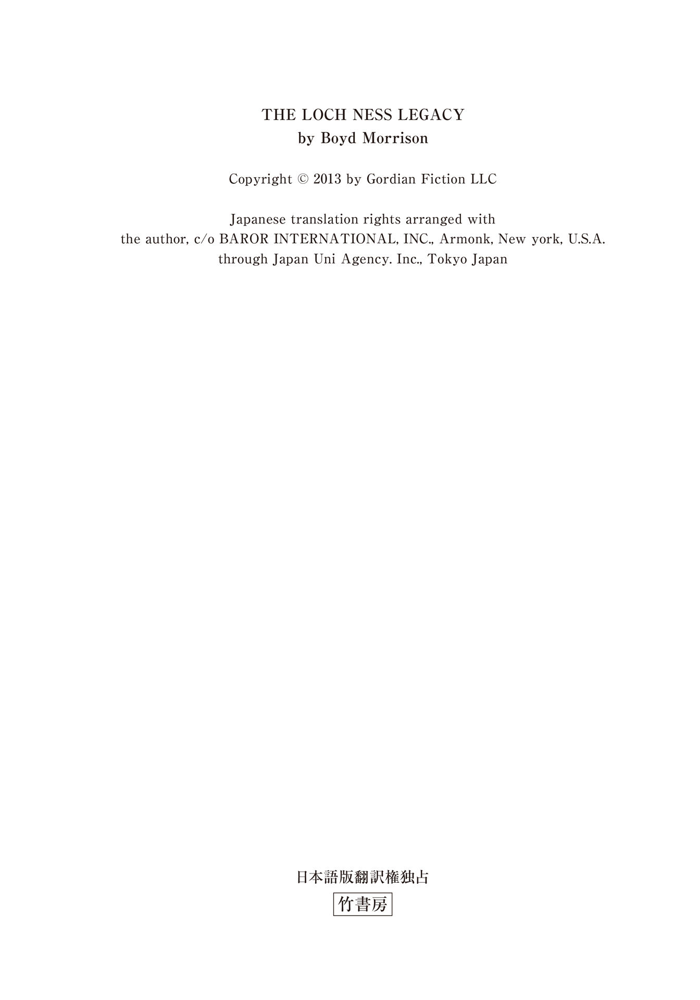
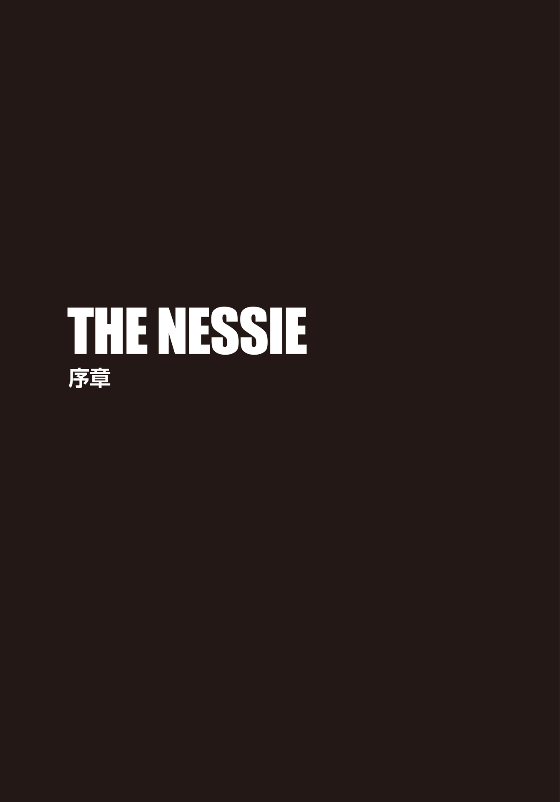
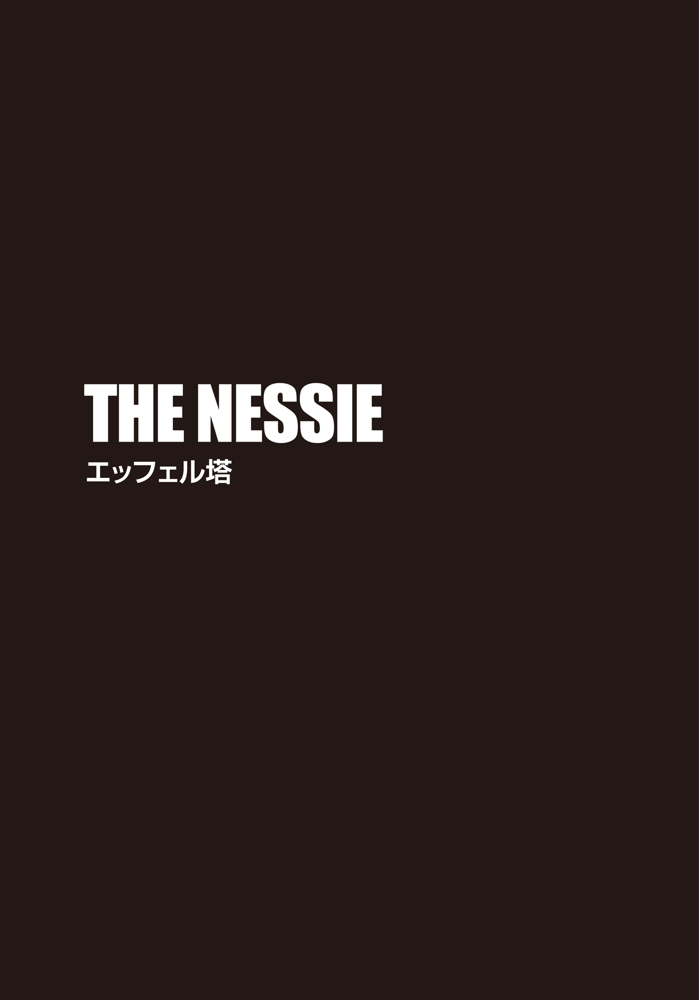
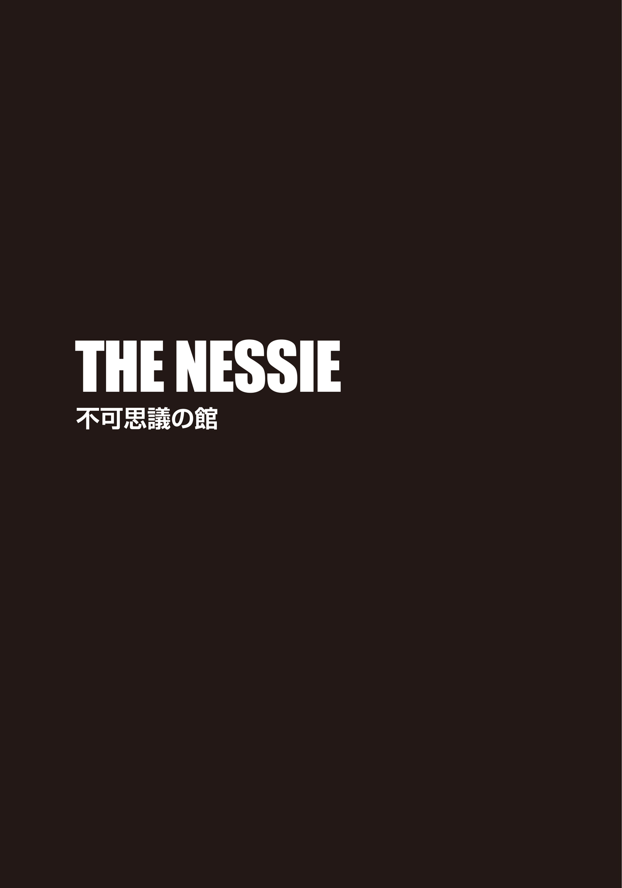
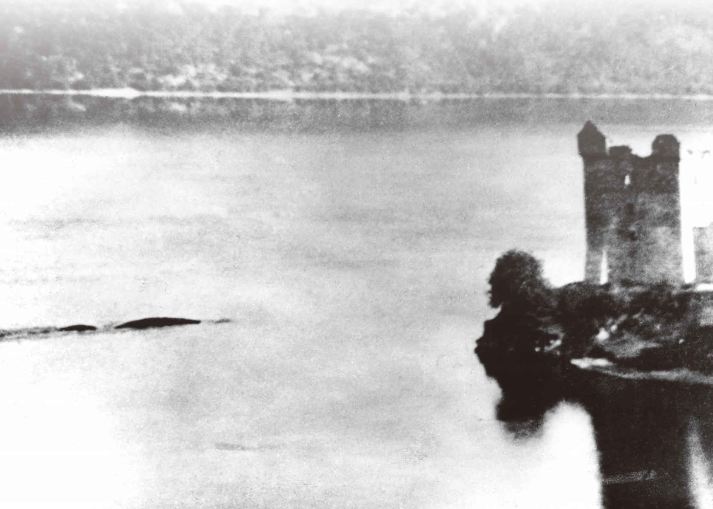

| ＴＨＥ ＮＥＳＳＩＥ ザ・ネッシー 湖底に眠る伝説の巨獣 上 (竹書房文庫) | |
| ボイド・モリソン | |
| 竹書房 (2016) | |
この作品は縦書きでレイアウトされています。
また、ご覧になる機種により、表示の差異が認められることがあります。
一部の漢字が簡略字で表示されていることがあります。

主な登場人物
タイラー・ロック ......世界有数の民間エンジニアリング企業〈ゴルディアン・エンジニアリング社〉の主任エンジニア及び特殊作戦チーフ。
グラント・ウェストフィールド ......〈ゴルディアン・エンジニアリング社〉の電気工学のエキスパート。タイラーの親友。
エイデン・マッケンナ ......〈ゴルディアン・エンジニアリング社〉の情報検索のエキスパート。
マイルズ・ベンソン ......〈ゴルディアン・エンジニアリング社〉の会長兼最高技術責任者。
メラニー・ハリス ......ＦＢＩ特別捜査官。
アレクサ・ロック ......タイラーの妹。研究で世界を飛び回る動物学者。
ガブリエル（ブリエル）・コーヘン ......遺物の探索を専門に行う調査会社の調査員。
ジャック・フルニエ ......フランスの内務大臣。
ウィル・プリマス ......ブリエルの同僚。
アンドレ・ラロッシュ ......フランス出身のユダヤ人大富豪。
マーロ・ダナム ......ラロッシュの第一秘書。
マイク・ディルマン ......一緒にネス湖探索に行ったアレクサの仕事仲間。
カール・ジム ......白人至上主義者。エッフェル塔を襲撃したテロ集団のリーダー。
ビクター・ジム ......ジムの兄。有罪判決を受けて服役中。
ハンク・プライヤー ......ビクター・ジムの手下。
チャールズ・ダーウィン ......イギリスの自然科学者。
ジョン・エドモンストン ......南アフリカ出身の解放黒人奴隷でダーウィンの友人。
ＴＨＥ ＮＥＳＳＩＥ
湖底に眠る伝説の巨獣 タイラー・ロックの冒険④ 上
ランディへ 愛を込めて

一八二七年六月
また船に何かがぶつかった。激しい衝撃で小さな手 漕 ぎボートは大きく揺れ、チャールズ・ダーウィンは船 縁 を握り締めた。冷たい水の中に投げ出されるなんて、悪夢以外の何ものでもない。体勢を変えた彼は、ランプの上に覆い被 さった。唯一の光源を土砂降りの雨から守るためだ。
「ありゃなんだ!? 姿が見えますか？」
オールを引き寄せながら、ジョン・エドモンストンが訊 ねた。解放奴隷の彼は恐怖で目を見開き、普段から強い南アフリカの訛 りがますます強くなっている。
ダーウィンはランプをもっと下の方に向けてみたが、無駄だった。どんなに晴れた日でも、ネス湖の泥炭 を含んだ水は濁っている。湖面を叩 きつける大粒の雨で水煙が上がり、ランプひとつでは靄 がかった周囲を照らすには不十分だった。現在地点を確認すべく、ダーウィンは辺りを見回した。
「湖岸すら見えない。針路から外れてるって可能性は？」
そう問いかけても、エドモンストンはこちらに渋い顔を向けただけだった。ダーウィンは、仕方なく、再び陸地の目印を探そうとした。しかしどうしても、十分ほど前に遭遇したあの異様な水中の影が気になり、湖に視線を戻してしまう。間違いなく、先ほど何かが船の下を通過していった。水面にできた波紋がそれを物語っている。しかも、かなり巨大なものだ。湖畔の村ドラムナドロッキットの明かりを見つけられなければ、この船は何時間も円を描いて回っていただけということになる。万が一ボートが転覆した場合、自分たちの運命は二つに一つ──死体が岸に流れ着くか、深い湖の底に沈むか、のどちらかしかない。
ダーウィンはゾクリとして身震いした。服はすっかりびしょ濡 れだ。彼が通うエジンバラ大学の医学校でエドモンストンは動物剝製術を教えていたのだが、故郷の熱帯地方の暮らしぶりについてもよく語っていた。ダーウィンは今、その気候が心から羨 ましいと思っていた。エドモンストンの剝製のレッスンは興味深く、熱心に聞き入っていたものの、医学校のアカデミックな講義内容は得てしてひどく退屈だった。それに、意識のある患者に施す手術を見学するのは苦手で、決まって胃が空っぽになった。せめて患者に亜酸化窒素を使用してくれれば──。イギリスの化学者ハンフリー・デービーは、この窒素酸化物に麻酔作用があることを突き止めていたのだが、〝笑 気 ガス〟と名づけられてしまったせいか、その効果を真剣に受け止める者はほとんどいなかった。そのため、患者は意識あるまま手術されていた。いくら勉学のためとはいえ、その様子を直視するのはダーウィンには厳しかったのだ。エドモンストンと一緒にいて外科手術見学と同様の吐き気を催させるものがあるとすれば、唯一、ソルトフィッシュ──故郷から輸入されたエドモンストンの好物の塩漬け魚──の悪臭だった。
エジンバラでは狩猟も楽しめなかったダーウィンは、自ら刺激を求めた。そこで、思いついたのが、スコットランド、ハイランド地方の探検だ。冒険の資金には、一方的に寄こされる父親からの仕送りを充 てた。旅のお供はエドモンストン。己の剝製店用に新たな品を調達できるならばと、二つ返事で参加を決めてくれた。現地の宿屋の主人におんぼろボートを借り、湖の反対側へ衝動的に探索に出かけたはいいが、この有様だ。
暗闇と悪天候と得体の知れぬ影の脅威に包囲され、湖面で立ち往生する中、ダーウィンは、ネス湖に繰り出したことを後悔した。死ぬのは悲劇。されど、救出されても待っているのは不 面 目 。もしこの禁じられた調査旅行が父の知ることとなったら、その先に何が待っているかは想像もつかない。
一瞬、降りしきる雨を切り裂き、厚い板で水を打ちつけたような音が聞こえ、ダーウィンはハッとして振り向いた。しかし、雨粒が湖面を叩く音は激しく、どちらの方角から聞こえたのかは定かではない。
「一体全体、あれはなんなんだ？」
彼の問いにエドモンストンは言った。
「ミスター・ダーウィン、あれは化けもんです。間違いない」
もちろん、ダーウィンはこの湖に棲 む生き物の話は聞いたことがあった。とはいえ、数少ない貴重な目撃談は、「友人の友人から聞いたんだが......」という前置きで始まるようなものばかりで、信頼に値 しないと即座に撥 ねつけていた。スコットランド東岸のフォース湾で海洋性無 脊 椎 動物の採集をしていたときも、耳に入ってくる似たり寄ったりの奇 聞 がいかにいい加減な話かはすぐにわかった。新種の生物を確認するには、直接、己の目で観察する以外に科学的な方法はなく、その生物の捕獲が存在を証明する唯一の術 なのだ。
エドモンストンは、奴隷として育ったせいなのか、何かと迷信を信じるたちだった。ダーウィンは思慮深くて知性にあふれた彼に一目置いていたが、迷信を重視する性格とはどうにも折り合いがつけられなかった。しかし、自分自身がこの異様な出来事の渦中にいる今、エドモンストンが生まれてこのかた抱いてきた信条がいかなるものか、理解できるような気がしていた。
ダーウィンは、薪 割り用の手 斧 を摑 み上げた。その刃物を武器として使用したことなど一度もない。しかも、自分たちを取り囲むように泳いでいる水面下の大きな獣に比べれば、寸法は滑稽なほど小さい。それでもやはり、いざとなれば、素手よりは手斧を振り回して対抗する方が賢明だろう。
消え入りそうな灯 の向こう正面に、不気味な影がヌッと現われ、心臓が止まりそうになる。しかし、その正体に気づいて安 堵 した彼は、エドモンストンに笑顔を向けた。
「あれは、アーカート城だ。どうやら我々は南の方角に進んでいたらしい」
十四世紀スコットランド独立戦争の舞台となった古城が、湖畔の高台に建っている。悪天候の中でも、朽ちた石塔は威厳を湛 えたまま、ネス湖を見下ろしていた。
「ああ、神よ。感謝します」
天を仰 ぐエドモンストンに、ダーウィンは命じた。
「右舷に舵 を取ってくれ。昨日訪れた際、小さな浜があった。着岸して、このひどい雨をやり過ごそう」
「了解です」
エドモンストンは漕ぎ舟を回転させ、猛烈な勢いで櫂 を動かし始めた。荷物が邪魔で加勢できなかったダーウィンは、身を引き、辺りに目を凝らす。ところが、あと数分で浜辺だろうという地点で、ボートは再び激しく揺れた。船の中に大量の水が入ってくる。このままでは沈没するのは時間の問題だ。彼は必死に縁 を握りながら、揺れの源を見極めようとした。だが、今回は探すまでもなかった。
巨大な姿が、いきなり水の中から出現したのだ。驚 愕 のあまり、ダーウィンは息をつくこともできなかった。直後、生物から放たれた強烈な生臭さが鼻をつく。大きすぎる輪郭は視界に入り切れず、即座に全体像を摑めなかった。
すると、その巨獣は首をグルリと回し、こちらを見た。エドモンストンは、訳のわからない言葉を叫び、魚捕獲用の手鉤 を生き物に向けて振り回した。ダーウィンは己を守るため、斧を持ち上げ、尻尾 と思われる部分に叩きつけた。考えるより先に、体が反射的にそう動いていたのだ。刃は肉を切り裂き、野獣の甲高い叫びが響き渡る。裁断された尾先がボートの床に落ち、しばらく跳ねていたが、やがて動かなくなった。ハッとして顔を上げた彼は、おそらく生きている限り絶対に忘れることができない光景を目 の当たりする。すぐそこにあったのは、とてつもなく大きな黒い目だった。ダーウィンのランプの明かりを反射し、猫の目のごとくギラリと輝いていた。
怪物が水の中に潜る直前のその一瞬、視線を合わせた彼は、相手の眼光に宿る気高さを感じ取った。しかも、尾を切られた痛みだけではなく、困惑も覚えたまま退散した気がしてならない。向こうは、傷つけられるとは思っていなかったのではないか。巨大生物はダーウィンとエドモンストンを攻撃していたのではなく、単に好奇心をそそられていただけだったとも考えられる。
盛大に水しぶきを上げ、巨獣は姿を消した。激しい雨音と、懸命に船を漕ぐ櫂の音が一定のリズムを刻んでいる。キツネ狩りの最中の猟犬のように、荒い呼吸をしながらダーウィンは寂 寥 感 に圧倒されていた。英国で馴 染 みの深いキジ狩りやライチョウ狩りは、彼が嗜 むスポーツだが、これはまるで違う。あの獣は、まだ科学的に何も説明されていない、おそらく唯一無二の存在だ。
確固たる証拠とともにダーウィンの目撃談が世の中に広がったならば、不安を覚えた近隣の町の民 は口伝えする度に、話をどんどん大きくするだろう。しまいには、彼が味わった恐怖は百倍にも誇張され、化け物など退治してしまえと皆が騒ぎ出すのは間違いない。捕獲すべき巨獣の話を聞きつけたアバディーンの捕鯨者たちは、銛 を持参し、大挙してネス湖に押しかけることになる。ダーウィンの望みは野生生物の調査であって、駆除ではない。これほどの発見をしたからには、徹底した科学的調査が必要だ。再びこの地に戻り、さらなる探索を続けると、彼は心の中で誓った。今は調査どころではないが、一旦落ち着いたら、この件をエドモンストンと話し合おう。あの調査対象について何をすべきか、諸々決めなければ。
降り始めと同じく、雨がやむのも唐突だった。エドモンストンが全力で漕ぐうちに、ボートは徐々に浜に近づいていった。ダーウィンは身を屈 め、船底に横たわる生物の置き土産を拾い上げた。スペード型をした尾の先端は、表面上は滑らかに見えたものの、触ってみると粘着質の皮膚に覆われている。まだ生温かいそれを、彼はコートのポケットにしまった。貴重なサンプルだ。できるだけ早く適切な保存処置を施すべきだろう。
ボートが横滑りをしながら浜に打ち上げられるや、二人は岩の上に転がり出た。ギザギザの石片で手を切ってしまい、ダーウィンは一瞬顔をしかめたが、夢中で木々の間を抜け、草の生えた丘まで一気に駆け上がっていく。こんな体力が残っていたとは、自分でも驚きだった。
丘のてっぺんに登り、安全を確信したところで、彼らは足を止めた。肩で呼吸をしながら、あの怪物の姿が見えないか、湖の方を振り返る。まるで、ダーウィンたちが目撃したのが幻だったかのように、湖面にはさざ波ひとつ立っていなかった。

ワールドニュース
イスラム教国首脳会議でパレスチナ問題の決着つかず
七月十二日、パリ──ガザ地区、ヨルダン川西部地区、南レバノンからの砲撃に報復するイスラエルの武力行使で緊張が高まる中、イスラム教国の首脳陣が国際会議を開催した。会議に出席した多くの首脳が抑制を求めたのに対し、シリアとエジプトは、イスラエル侵攻の要求を固持している。
「全ての報復攻撃は、イスラエル領土への侵攻がもたらした結果だ」とするイスラエルの強気の発言を受け、ヨルダン、サウジアラビア、インドネシア外相は、より好戦的な態度を取るイランとパキスタンに真っ向から対抗し、現在の緊張状態の緩和には、西側諸国による交渉及び外交干渉が望ましいとの声明を発表。イスラエルは公式に核兵器保有を宣言していないものの一般的に核保有国と考えられており、アメリカ合衆国と欧州連合は即時停戦を呼びかけている。
平和的解決を求める声が上がる一方で、イスラエルの対ヨルダン、対エジプト両国境線には軍隊が動員され続けており、エジプトとシリアの政情不安も相まって、同地域の緊張緩和の公算は限りなく不透明だ。しかも、他のイスラム教国からの紛争国への兵器供給が停止される気配もない。
話し合いの日程は全て消化され、今晩のエッフェル塔での晩 餐 会 をもって会議は終了する。ここ数日で、この問題の平和的解決が見込まれる可能性は限りなくゼロに近い。
（文責：マーガレット・シモンズ、イブ・ベグナウド）
１
現在
外見上は冷静さを保っているようでも、戦闘の瞬間が切迫すると、体内では決まってある変化が訪れる。大量にアドレナリンが放出され、血管内を駆けめぐるのだ。
「お偉いさんは、俺たちのことをクレイジーだと思っているだろうな」
エッフェル塔の見晴らしの利くポイントからパリの地平線を見渡しつつ、タイラー・ロックは、いかなる脅威の兆候も見逃すまいと目を凝らしていた。日没間際の薄闇に、街明かりがきらめく様は平和そのもので、危機が忍び寄っていることなど忘れそうになる。
グラント・ウェストフィールドは、隣でほぼ真下に臨むセーヌ川の輝く水 面 を見つめている。
「もちろん、そう思われてるさ。これだけ厳重なセキュリティが敷かれたパーティを攻撃するなんて、大胆にもほどがあるぞ」
「だが、俺たちはここにいる」
タイラーの返しに、グラントは破顔した。窓ガラスに白い歯がキラリと反射する。
「まあ、ここまでするのは確かにクレイジーだ。俺たちが正しければ、今にも荒れ模様になる」
「なら、俺たちの予想が間違っていることを祈ろう」
ビゼーの交響曲が流れる中、〈サール・ギュスターヴ・エッフェル〉は、四百人の来 賓 の談笑に満たされていた。ここは、エッフェル塔の設計者ギュスターヴ・エッフェルの名を冠した第一展望台の一角にあるホールだ。地上五十七メートルの壮大な景色を望む塔内のスペースは最近改装されたばかりで、晩餐後のカクテル交歓会の会場となっていた。晩餐会は隣接のレストラン〈58 トゥール・エッフェル〉で滞りなく行われたのだが、夜の帳 が降りつつある今、タイラーは迫る危機を予見し、筋肉が引き締まるのを感じた。攻撃には最適な時間帯だ。
フランス政府は、中東平和に対する関心を示すべく、イスラム教国首脳会議の主催を申し出、世界的に有名なロケーションで開催して、最高潮の状態で閉幕させると主張した。しかしながら、セキュリティの調整は悪夢のような状況を引き起こしていた。六月の晴れた木曜日にエッフェル塔が終日一般公開されないのは前例がなく、知らずに訪れた観光客は、大勢の警官と兵士に追い返されている。とはいえ、この結びの宴 には、各イスラム教国の大統領、首相、大使、宗教指導者らが出席しており、念には念を入れた万全のセキュリティで臨む必要があった。天井から床まで広がる展望ガラス窓には反射フィルムが貼られていたので、少なくとも出席者の誰かがスナイパーに狙われることはないはずだ。
それでも、タイラーの中には不安と胸騒ぎが渦巻いていた。自分たちが、まるで敵をおびき寄せる〝餌〟として配置されている気分だ。
「フランス人は、俺たちがそこまでイカれているとは思っていないはずだ」
グラントは肩をすくめた。「思ってたら、ここにいさせてくれてないだろう？」
「トルコ大使が元文化相だったから、俺たちは呼ばれた。例のノアの方舟の一件のおかげでパイプができ、彼らの出席者リストに俺たちの名前も加えてもらえたわけだし」
そう言ったタイラーを横目に、グラントはタキシードシャツの襟をグイと引っ張った。白い襟が、その太い首に食い込んでいる。
「パーティに出られたのはありがたいが、正装だけはいただけないな」
グラントの肩幅に合うレンタルのタキシードを見つけるのは、決して簡単ではなかった。百十キロを超える元プロレスラーは、陸軍除隊後、現役時代の体重にまで戻っている。身にまとった上着は限界ギリギリまで伸びており、今にも張り裂けそうだ。タイラーには、今のところそういった問題はない。陸軍退役から何年も経 つが、軍人時代どころか、大学生のときとスーツのサイズは同じだった。
「タキシードを着ていれば、俺たちは目立たない」
「俺なら正装で周囲に紛れられるだろうけど、あんたにはそれほど効かないんじゃないか」
グラントは小声で言いつつ、辺りに視線を向けた。会場には、アラブ人、アフリカ人、ペルシャ人、パキスタン人、アジア人があふれている。相棒のモカ色の肌とスキンヘッドは、この場にうまく溶け込んでいるが、タイラーのような白人はほんの数人しかない。アメリカでは、そのずば抜けた体格と過去の名声でグラントは人目を引くが、茶色の肌はここでは大勢の中のひとり。それとは逆に、会の出席者は、少し日焼けしただけの白い肌と無造作な薄茶色の髪のタイラーを横目でチラチラと見ている。さらに、ここの誰よりも高い百八十九センチの身長も注目を集めるのに一役買っていた。
「みんな、俺がフランス人だと思ってるさ」
彼は肩をすくめた。
「誰かと話さない限りはイケるかもな」
「ウイ、ムッシュー」
「うわ、ひどい発音。最悪のフランス語だ」
眉をひそめるグラントを、タイラーは「しょうがないだろ」と軽く肘で突いた。「知っているフランス語の単語は、料理名ぐらいだし」
「クロワッサン、シャトーブリアン、ベニエ......あとは？」
グラントは舌なめずりをしてにやけている。底なしの胃袋の持ち主に食べ物の話は禁物だ。
「わかった、わかった。ここでの仕事が済んだら、たらふく食わせてやる」
タイラーは苦笑した後、話題を変えた。「ところで、〝デッドアイ〟はまだスキャン中か？」
スマートフォンをチェックしたグラントは、コクリとうなずく。
「異状なし」
「よし。おそらく今回は、ガセネタだったのかもな」
そのとき、彼の前を横切る赤い色が目に止まった。深紅のシルクのカクテルドレスだ。
「すぐ戻る」
立ち去ろうとすると、グラントはこちらの視線の先を追い、小さく口笛を吹いた。
「うん。どこから見ても、彼女はイイ女だ」
やれやれと息を吐き、タイラーは言った。
「彼女の進 捗 状況をチェックしてくるだけだ」
「そうだ。戻ってくるとき、サーモンのオードブルをいくつか持ってきてくれよ。いや、面倒だから、トレイを持ったウェイターを見かけたら、俺のところに寄こしてくれ。腹が減って死にそうだ」
「すでにタキシードが破けそうなのに、それ以上腹を膨らませる気か」
グラントは片眉を上げてこちらを見た。
「いくら自分がガリガリで俺のたくましさが羨 ましいからって、妬 むなよ」
相手の物言いにタイラーは吹き出した。体重は九十キロで、身長はグラントより数センチ高い。そんなタイラーを瘦せすぎだと称する者はいないが、巨漢グラントと並べば小さく見えて当然だ。
「おまえと一緒だと俺の口には何も入りそうもない。俺は俺で食べてくるよ」
タイラーは友の肩を叩 いた。「変わったことに気づいたら、叫んでくれ」
「了解」
親指を立てる相棒にうなずき、タイラーは人混みをかき分けてバーへ向かった。豪華なパーティだが、バーラウンジはガラガラだ。理由は明白。ほとんどの出席者がイスラム教徒ゆえ、教義に従ってアルコールを口にしないからだ。ひとり酒を飲んでいるのは、真っ赤なシルクのイブニングドレスを着たブリエル・コーヘンだった。上半身を包む生地は控えめで露出度が高い。ドレスはまるで真空包装のごとく彼女の肢体にフィットしつつも、床に垂れるドレープはボリュームがあって華やかだ。自国ではなかなかお目にかかれない女性の曲線美と黄褐色のロングヘアは、男性陣の視線を集めていた。横にスッと滑り込み、タイラーは彼女を横目で見た。今朝できた腕の痣 は、うまく隠せているようだ。
ブリエルとの出会いは、仕事の依頼がきっかけだった。トルコ大使からゴルディアン・エンジニアリング社の紹介を受けた彼女は、こちらの専門知識を高く買い、調査を希望してきたのだ。彼女の会社は調査会社とのことだが、普通の探偵業ではない。ホロコースト期の紛失物や盗難品を専門に捜索し、主なクライアントは行方 知らずの遺物を探す人々だ。今回タイラーは、ある建造物の残骸の分析を行うべく呼び寄せられた。明らかに何かが建てられていたのに、原型をわからなくするため、故意に破壊されていた。その謎を解くため、彼はブリエルと一週間調査を行い、その流れで、彼らは今この場にいる。ともに行動したこの七日間で、彼はブリエルがなかなか侮 れない女性だということを身に染みて感じていた。
ワイングラスに手を伸ばした彼女の華 奢 な背に触れ、タイラーは顔を傾けて訊 いた。
「何かわかったか？」
三口でグラス半分のワインを飲み、ブリエルは首を横に振った。
「ここまでする必要があるの？」
彼女が話す英国アクセントの英語は怒りを帯びている。
「内務大臣はなんと言っていた？」
「フランス側は信 憑 性 のある脅威だとは受け止めていないようね。大臣は、万全の策は取ってあると断言したわ。この会議の成功はフランス政府にとってかなり重要だから、米軍のご隠居二人と女探偵の直観ごときで邪魔されるわけにはいかないそうよ」
自分もグラントもまだ三十代。〝隠居〟呼ばわりされ、タイラーは苦笑した。
ブリエルはワインをもうひと口飲んで、こう付け加えた。
「そして、私はここにいるべきじゃないとも言われた」
「で、君はどう返した？」
「まあ、私ごときのユダヤ人ひとりの力じゃ、この忌 々 しい会議をぶち壊せないでしょうねと言ってやったわ」
それを聞き、タイラーはニヤリとした。
「本当はなんて答えたんだ？」
「トルコ大使と仲良くするよう伝えたわ」
少なくとも、自分たちはここからつまみ出されてはいない。とはいえ、ジャック・フルニエ仏内務大臣は、このイベントを中止させる最後の望みだった。大臣を説得できなかった今、こちらの警告を無視してパーティ開催を推し進めた主催者を責めても意味がない。事の発 端 は、彼女の相棒探偵ウィル・プリマスが送ってきた謎めいたメッセージだった。ブリエルたちが探していた遺物が白人至上主義者の一派の手に落ちたと匂わせる内容で、ブリエルはそのグループの足取りを追ってノルウェーのオスロに飛んだ。そこで彼女は例の破壊された建造物を発見し、その分析にタイラーとグラントを呼んだのだ。現地入りした彼らは、予想以上のものを見つける。現場にあった証拠は、差し迫ったテロ行為を示唆しており、その後、プリマスは行方不明になってしまう。そして、タイラー、グラント、ブリエルの三人は直観に従い、わずかな手がかりをたどってエッフェル塔までやってきた、というのが、これまでの経緯だ。
しかしながら、プリマスが書き記した人物の名前を聞いたタイラーは愕 然 とし、脅威が本物だと認めた。カール・ジム──イスラム系移民を敵対視する悪名高き白人至上主義者──がテロリスト集団の指導者だったのだ。実は五年前、あるパキスタン人殺人事件の裁判でタイラーは証言台に立ったのだが、彼の証言が決め手となり、カールの兄が殺人罪で刑務所送りになっていた。その一件により、カールは憎しみの炎を燃え上がらせたに違いない。世界に拡大するイスラム教徒への大きな不安と激しい嫌悪感を増幅させた背景──それこそが、可能な限りのイスラム教徒を手にかけてやると目論むカールの明確な動機の裏づけだ。犠牲者の数が多ければ多いほど、規模が大きければ大きいほど、テロ行為は際立つ。エッフェル塔でのこの催しは、うってつけのターゲットだった。直接的な原因ではないものの、あの裁判がきっかけでカールが恐ろしい行動を起こそうとしているのなら、タイラーとて黙ってはいられない。自分も悲劇を未然に防ぐ責任の一端を担っていると痛感していた。政府関係者に説得を試みるも、危機が差し迫っていることを理解してもらえなかった今、己の手でなんとかするしかないだろう。
ブリエルの鳶 色 の瞳がタイラーを捉えた。
「今回の件がどんな終わり方をしようと、あなたと過ごせたこの一週間は楽しかったわ」
「楽しかった？ 二回も死にかけたのに？」
彼女に同行した今週、コペンハーゲンの造船所でカールの手下と銃撃戦を展開し、アムステルダムのバーでも一戦を交えた。いずれの場面でも、ブリエルは素晴らしい銃裁きを披露し、タイラーを驚かせた。なんでも彼女は、イスラエル国防軍の外国籍ユダヤ人志願兵として訓練を受けていたという。トルコ大使は、その事実を彼に教えてくれていなかった。
今度はゆっくりとワインをすすり、ブリエルはこう訊いた。
「あら、そっちこそ結構ワクワクしてたんじゃないの？」
「この一件が終わったら、休暇を取ろうという気にはなったね」
「休暇？ どこで？」
タイラーは白い歯を見せ、顔を彼女に近づけた。
「どこかオススメはあるかい？」
「マジョルカ島のいいホテルを知ってる」
「君のご両親は、俺が君に選ばれた相手だとは認めないだろうな」
「両親の関心は、私が誰と結婚するかってことだけ。付き合う相手はいちいち親に報告してないわ」
ブリエルは肩をすくめる。
「じゃあ、俺はお相手になるかな？」
こちらの問いに彼女はいたずらっぽい笑顔を浮かべた。しかし、それに答える前に、彼の背後に視線を滑らせたかと思うと、急に真顔になった。
「どうした？」
タイラーは彼女が目を向けている方に顔を向けた。フランス内務大臣フルニエが、若い男性に付き添われ、パーティ会場から出ていくところだった。隣を歩く男性は、身のこなしからすると、軍人だろう。
「あの付き添いの男性、大臣に何か耳打ちしてた」
ブリエルは小さく顎を動かし、二人の方を指した。「どうやらいい知らせではなさそうね」
タイラーは彼女の手からグラスを取り上げ、カウンターに戻した。
「何が起きたのか、探りに行こう」
移動する前、彼はグラントと目を合わせ、手話でこう伝えた。
トラブルが起きたかもしれない。そこで待機しててくれ。
グラントはうなずき、ポケットからスマートフォンを取り出すと、窓に向き直った。
ブリエルはタイラーと腕を組み、ドアに向かって歩き出した。新鮮な空気を吸いに行くカップルを装い、フルニエの後を追う。
会場の外に出るや、二人は警察官五人と話す大臣を認めた。暴動鎮圧用の装備をした警官たちは、展望デッキ東側で何かを説明している。タイラーたちはさりげなく近づいて聞き耳を立て、ブリエルが会話を翻訳した。
「エレベーターに不具合が生じたので、メンテナンス班が修理しに来るそうよ」
パーティ会場から一階に向かう一般客用エレベーターは、合計二基しかない。片方が故障して稼働するのが一基だけになってしまうと、来賓に長い階段を歩かせなければならなくなる。だが、問題はそこではない──。
「クソッ、そう来たか。奴ら、エッフェル塔に潜り込む気だぞ。行こう！」
彼はブリエルに声をかけ、ともに大臣のもとへ走り出した。突然駆け寄ってきた二人に、フルニエは目を丸くしている。
「大臣、連中の侵入を阻止しないと！」
タイラーは力強く言った。
「なんだ、急に。いいから、中に戻りたまえ」
大臣は流 暢 な英語で言った。フランス語の訛 りは耳障りがいいが、物言いは厳しい。「君が口出しする問題ではない」
「修理する人間をここに送り込んだのは、あいつらの策略です。きっと襲撃される」
タイラーの訴えも虚 しく、フルニエは眉をひそめて首を振った。大臣はすでにこちらの経歴──スタンフォード大学卒の機械工学博士で、元アメリカ陸軍兵の爆弾処理のエキスパートであること──を知っていたが、このパーティを中止すれば、フランス政府の面 目 は潰れる。タイラーが信頼できる人間だと向こうは承知しているはずなのに、政治的な事情が優先されていた。
フルニエはブリエルを一 瞥 し、目を細めた。
「彼女の入れ知恵か？」
「大臣、お言葉ですが──」
ブリエルは顎を突き出し、毅 然 とした態度で口を開いた。「これは、生死に関わる問題です。メンテナンス班のスタッフをきちんと調べてください。そうすれば、彼らが偽者だとわかるはずです」
「何を言う？ すでに身元は確認済みだ」
「兵器を隠し持っているに違いありません」
「聞いたか？ エレベーターの修理工が兵器を隠し持ってるだと！」
フルニエは警官たちに肩をすくめて見せた。警官たちも呆 れて首を振っている。だが、タイラーは引き下がらなかった。
「本物かどうか、確かめてみるべきだ。爆弾を持っているかもしれない」
爆発物に言及され、フルニエは顔をしかめたが、何も言わなかった。
そのとき、南側の小さなメンテナンス用の昇降機から、青い作業服を着た四人の男たちが姿を現わした。
「彼らがエレベーターの専門家じゃないことを証明してみせますよ」
タイラーはそう提案し、一歩前に踏み出した。
「どうやって？」
フルニエは渋い顔で問いただした。
「本物の修理業者なら、エレベーターが動く仕組みを熟知しているはず。そうでしょう？」
大臣は彼とブリエルを交互に見やっていたが、不 承 不 承 うなずいた。万が一の場合を考え、念には念を入れる方がいいと決断したようだ。フランス語で何か命じるや、警官たちは銃を上げ、作業員たちを取り囲んだ。四人は慌てて道具類を地面に置き、両手を上げた。いきなり銃口を向けられ、その顔はショックで引きつっている。
「通訳をお願いできますか？」
タイラーはフルニエにそう告げ、スマートフォンを取り出した。画面を叩いて、前の日にリサーチしておいたエッフェル塔の設計図を映し出す。
大臣はうなずいた。「何を訊けばいい？」
「質問はひとつだけ。このエレベーターの最大積載荷重は何キロか。実にシンプルな問題で、答えは明確な数字。しかも、思いつきで言い当てられるものではありません。エレベーターのメンテナンスを行う者であれば、即答できるはずです」
フルニエがその問いを通訳すると、いきなり奇妙なことを訊ねられたメンテナンス班の責任者は、戸惑いの表情を露 わにした。警官は銃を男たちに向けたままで、その場の空気は張り詰めている。
タイラーたちが見つめる中、責任者は何か疑問を呈し、大臣はこちらに顔を向けた。
「どのエレベーターのことかと言っている。塔には全部で九基設置されているらしい」
「これから修理しようとしている東側の塔 脚 にあるエレベーターです」
その言葉を受け、フルニエはまたフランス語に直す。すると今度は、すぐさま答えが返ってきた。
「九千四百二十キロだそうだ」
視線を落とし、携帯の画面を確認したタイラーは目を剝 いた。返答が正しかったからだ。
「どうした？ 当たっていたのか？」
問いかける大臣に返事をする前に、彼はブリエルをちらりと見やった。彼女は「冗談でしょう？」と眉 間 にしわを寄せている。
「──正解です」
そう短く返したタイラーは、正直、ショックを隠せなかった。これこそ敵の手口に違いないと自信を持っていたのに──。
フルニエは呆れ顔でこちらをにらみつけ、作業員たちに手振りで〝行っていい〟と指示をした。四人は無言で修理道具の入った荷物を摑 み上げると、東の塔脚へと進んでいった。
「ロック博士、ミス・コーヘン」
こちらに向き直った大臣の顔は非常に険しい。「よくも余計なことをしてくれたな。さっさとお帰りいただこうか」
タイラーは振り返り、男たちを見た。まだ胸騒ぎが収まらない。この状況......何かが引っ掛かる。心にモヤモヤとしたものを抱えつつ、彼は周囲を見回した。そしてそのとき、彼の目は不審な動きを捉えた。通路を挟んでサール・ギュスターヴ・エッフェルの向かいにあるギフトショップコーナーで、何かが微 かに動いたのだ。今夜はとっくに閉店しているはずだが──。
「伏せろ！」
タイラーは片手でブリエルの腕を引っ張り、反対の手で大臣を押し倒した。
自動小銃が火を噴き、警官ひとりを瞬時に射殺した。大臣は倒れる際、脚を撃たれた。
ブリエルは鉄柱の陰に隠れ、タイラーも負傷したフルニエを引きずって彼女の背後に逃げ込んだ。
大臣は衝撃で目を丸くしている。
「一体、どうなってるんだ？」
連続で放たれる銃弾が、鉄製の桁 に当たって乾いた連続音を立てた。警官がまたひとり倒れ、残りは猛攻を受けて身動きが取れない状態だ。
なぜエレベーターが故障したのか、タイラーはようやく理解した。警官たちを足止めするためだったのだ。数分の時間稼ぎさえできれば、その間に攻撃は終わるということか。パーティの出席者を一網打尽にするのに、狙撃者の頭数を揃 える必要などない。皆を会場内に閉じ込めておくだけでいい。そう、敵の本当の狙いはパーティ会場だったのだ。最初の爆発音が会場内から聞こえたとき、タイラーはようやく合点がいった。
２
グラントが床から起き上がると、タキシードの上をガラス片がパラパラと滑り落ちた。爆発の二秒前に、彼は窓の外からすばやく移動してくる影に気づいていた。そうでなかったら、まともに大量のガラス片を顔面に受けていただろう。
パーティ会場内は阿 鼻 叫 喚 の巷 と化していた。血を流している者もいれば、悲鳴を上げている者もいる。大勢が出口を求め、グラントの前を通り過ぎていく。だが、展望デッキでの銃撃戦と窓際の爆発の狭 間 で、どこにも安全な場所などなかった。とはいえ、ホール内での犠牲者はいなさそうだ。グラントは胸を撫 で下ろしつつ、現場の様子を観察した。敵はタイミングを見計らって吹き飛ばしたのだろう、ガラス窓にはぽっかりと大きな穴が空 いている。いつ次の爆弾が放り込まれても不思議ではない。
かつて窓があった穴から、ひんやりした空気が流れてくる。彼は瞬 きをし、どこから攻撃がなされたのか見極めようとしたが、すでにパリの街は暗くなっていた。携帯式ロケット弾であれば、炎を上げて標的に飛んでくるので目に付きやすいが、今回の敵は、よりステルス性の高いＵＡＶ（Unmanned Air Vehicle）、すなわち無人飛行体 を使用していた。その洗練された飛行物は、せいぜいゴミ箱の蓋程度の大きさだ。黒く塗装して夜空を背景にした場合、肉眼で捉えるのは非常に難しい。通常、小型ドローンは、プロペラ付きの多関節アームが数本あり、剝 き出しの骨組みの中央部に飛行装置を据えた単純なデザインになっている。それに爆薬を搭載させれば、空飛ぶ爆弾のでき上がりだ。
爆弾が飛んでくるという警告をグラントが直前に受けられたのは、他ならぬ、ある秘策のおかげだった。エッフェル塔近辺に借りたホテルの部屋で、彼とタイラーはある装置をセットしていたのだ。数ヶ所の窓を開けっ放しにしておいたので、彼らが独自開発した動作追跡システムは塔をはっきりと捉えていたはずだ。
携帯型ターゲットシステム〝デッドアイ〟は、タイラーが創設し、二人が勤めるゴルディアン・エンジニアリング社の製品だ。軍のために開発され、歩兵隊が狙撃者を発見するのに活用されている。デッドアイは、最新式の高解像度カメラで現地のスナップ写真を撮り続け、それを常時チェックしていく。もし何か変化があれば、ビデオをモニタリングしている兵に警告する。コンピュータの処理能力の都合上、固定しての使用に限られるものの、夜間でも使えるパワフルなツールだ。
ホテルに設置したデッドアイは、グラントがゴルディアンの研究所から借りてきたプロトタイプで、まさにこの瞬間も、エッフェル塔を見つめている。塔周辺の空中でなんらかの動きを感知した際には、グラントのスマートフォンにアラートが送られ、彼はモニター上でターゲットの画像を確認する、という流れになっていた。
これまで携帯電話には二度警告が届いたが、いずれも画面に写っていたのは鳥だったので、グラントは装置の感度を下げなければならなかった。三度目のアラートから十秒もしないうちに、彼は迫りくるドローンをその目で確認し、咄 嗟 に身を伏せた直後に爆発が起こったのだった。
敵は攻撃を開始した。ならば、反撃せねばなるまい。グラントは携帯をタップし、自分のドローンを始動させた。ゴルディアンが〝メイフライ〟と呼ばれる民間プロジェクトのために作ったもので、津波を被 ってメルトダウンを起こした日本の福島原発での調査といった、危険な状況下でのリサーチや救助活動用に開発された小型無人飛行機だ。彼のスマートフォンには、メイフライ前部のカメラからの映像が映し出される。非常事態を考慮し、タイラーと一緒にホテルの部屋に準備しておいたのだ。パーティ会場のガラス窓が吹き飛ばされ、その外で発砲が起きたのは、非常事態だと考えていいだろう。
普通、無人機の付属品といえば、カメラくらいだが、今回、タイラーとグラントは二日かけてメイフライを兵器化した。ちょっとした毒針 を取りつけたのだ。その即席の仕掛けの効果を、ついに実践するときが来た。
スマートフォンに表示された簡単な操作盤を用い、グラントはメイフライに離陸の指示を出す。機体がベッドから上昇するのに合わせ、画面にホテルの室内が映し出された。浮遊しながら進行方向を定め、開放しておいた窓から外に抜ける。表に出たのを確信し、グラントは飛行速度を最大限にした。電気モーターのドローンは滑らかに高度を上げ、エッフェル搭の姿がモニター全体に現われた。
デッドアイ・ターゲットシステムは、メイフライに搭載したカメラとリンクしている。二つの画像を重ね合わせると、新たな白い十字の照準線がグラントの電話に表示された。つまり、さらなる爆弾が近づいているという意味だ。マズい。今度こそ爆撃を阻止しなければ。
グラントは壁に背をもたれて座り、メイフライを操作した。ここからドローンを目視する必要はなく、立っていると、かえってコントロールする手元が揺れやすいのだ。
こちらに向かってくる敵のドローンのスピードからすると、その動きを止めるチャンスは一度きりだ。息を小さく吐いた彼は、発射ボタンに指を載せ、メイフライが目標を捕捉する瞬間を待った。照準線が画面いっぱいに広がれば、こちらのドローンが向こうに十分接近したということになり、まさに攻撃するタイミングだ。
その時は迫りつつあった。照準線が大きくなると同時に、エッフェル塔、すなわちグラントが座っている場所も画面の中でどんどん大きくなっていく。つまりそれは、敵のドローンがここに近づいていることを意味していた。サール・ギュスターヴ・エッフェルに到達するのは、あと数秒か。壊れた窓から会場内に飛び込み、パニックになっている客たちの頭上で爆発するのも時間の問題だ。
ターゲットは、モニターを埋め尽くさんばかりの大きさになっている。今だ！
グラントはボタンを押した。
次の瞬間、メイフライに設置したテーザー銃の二本のワイヤーが飛び出した。そのワイヤーは敵のドローンに命中し、五万ボルトの電流を放つ。
頼む。うまくいってくれ。
テーザー銃の電撃ショックで敵機の制御装置をショートさせる──それが、タイラーと彼の目論みだった。二人の狙い通り、ドローンは地面へと落下し始めた。メイフライのワイヤーは、ある程度の負荷がかかると自動的に機体から切り離されるようになっている。
なんとか成功した。胸を撫で下ろすグラントだったが、安心はできない。敵のドローンがあと何機あるかわからないからだ。メイフライが使えるテーザー攻撃は、残り三回。それ以上のドローンが攻めてきたら、かなりの苦境に陥ってしまうだろう。
安 堵 したのも束の間、新たな照準線がスマートフォンに表示された。彼は慌ててメイフライのアングルをターゲットに合わせた。こちらと相手のドローン二機がハイスピードで接近し、今度の照準線は瞬 く間に大きくなっていく。ためらう猶予はなかった。グラントは敵機が射程内に入るや、テーザー銃を撃った。
何も起こらない。どうやらスピードが追いつかず、ワイヤーが命中しなかったようだ。敵のドローンの立てる音が夜空の向こうから聞こえてくる。この猛進ぶりでは、十秒もかからず、エッフェル塔まで来るはずだ。
どうすべきか。グラントがふと見上げると、天井に何やら赤い点があるのを認めた。
レーザー照射！
自分の頭上を通り、赤いレーザー光線が外から放たれている。なるほど、敵のドローンはこうやって狙いを定めていたのか。地上で誰かがレーザービームを照射しているに違いない。陸軍でも爆弾の誘導に同じ方法を使う。しかし今は、感心している場合ではない。今すぐ手を打たなければ、グラントのすぐ真上に、爆弾を載せたドローンが体当たりする。肩越しに見ると、室内では、まだ数人が床でうずくまっていた。もう時間がない。
「逃げろ！」
グラントの野太い声で怒鳴られ、人々は慌てて出口へと駆け出した。そして、彼も部屋を横切り、バーカウンターの裏側へ潜り込む。一瞬、ドローンのプロペラ音が聞こえたかと思った直後、それは天井にぶつかり、爆発が起きた。爆風の衝撃とともに、爆弾の金属片が部屋中に飛び散る。しばらくすると、負傷者の泣き声やうめき声があちこちから聞こえてきた。バーカウンターの陰にいたグラントは無傷で済み、そろそろと立ち上がった。
爆発で火災が起きたわけではなかったが、充満した煙でスプリンクラーが作動し、会場は水浸しだ。さらなるレーザー照射がなされていないか確認すべく、彼はカウンターの外へと歩き出した。スプリンクラーの水が頭に降りかかり、携帯が濡 れないよう上着でしっかりと守った。
視線を上げたグラントは顔を歪 めた。天井で、また赤い点がゆらゆらと揺れていたのだ。少なくとも、爆弾ドローンをあと一機、阻止する必要があった。
３
タイラーは、死んだ警備員のひとりから拝借したサブマシンガンＭＰ５に装弾した。
「弾倉はこれで最後だ！」
彼はブリエルに叫んだ。
「私もよ！」
彼女も大声で返してきた。侵入者たちの猛攻に対抗するのに、すでに弾倉三個を消費している。相手はというと、遮 蔽 物 の多いギフトショップから銃撃を続けていた。
「敵のひとりには命中させたと思う。でも、こっちはここで屈 んでいなきゃいけないから、分が悪いわ。場所を変えないと」
タイラーは辺りを見やった。
「階段に行こう。高いところにたどり着ければ、優位に立てる。さっさと決着をつけよう」
襲撃者たちが場所を移動する気はないはずだ。タイラーは、連中の目的がパーティ客を会場内に留めておくことだとわかっていた。あとは、爆薬で皆を一掃できる。しかも、騒ぎを止めようと警官隊が地上から階段で押し寄せてきても、連中の位置からなら一網打尽にするのも可能だ。
一見、敵の計画通りに事が進んでいるように思える。それでもタイラーは、この状況が腑 に落ちなかった。彼の会社ゴルディアン・エンジニアリングは、飛行機墜落、石油プラットフォームの爆発、ビル倒壊といった大事故の調査分析の分野でよく知られている。だから、オスロで見つかった破壊された鋼鉄建造物を再現するのに、ブリエルは真っ先にタイラーに白羽の矢を立てたのだった。ゴルディアンの最新コンピュータ分析ツールによれば、その骨組みはエッフェル塔の一区間を模したものだろうという結果が出た。瓦 礫 の中からは、ドローンの残骸も発見されていた。そこでタイラーとグラントは、パリの最も重要な名所に対する攻撃準備だったのではないかと考えた。しかも、塔で開催される国際会議は、格好のターゲットになり得る。
しかし、テロリストがエッフェル塔の全壊を企てているとは思えなかった。もしそれが敵の意図だった場合、狙撃者やドローンの採用は適切ではない。加えて、これだけの塔を倒壊させるには、相当量の爆薬を正しい位置に何ヶ所も仕掛ける必要があるので、警備チームにとっくに感づかれていただろう。
タイラーは、何かを見逃しているという気がしてならなかった。だが、一体それは何だ？
ひとしきり発砲して再び身を屈めた彼は、背後で小さくなっている作業員たちをチラリと見た。そこには三人しかいない。
「もうひとりはどこだ？」彼はブリエルに訊 いた。
「え？ 誰のこと？」
「エレベーターのメンテナンス作業員だよ。ここに来たときは四人だった」
「気がつかなかったわ」
彼女は反撃の手を休めずに言う。「少しばかり忙しかったから」
「いなくなったひとりがどこへ行ったのか、彼らに訊いてくれ」
ブリエルがフランス語で作業員たちに質問すると、三人は東の支柱の方を指差した。
「階段を降りていったって言ってるわ」
「なぜ？」
「怖がって逃げ出したんだろうって」
タイラーは作業員たちが指差す方を見た。階段にたどり着くには、銃弾の雨が降り注ぐ中、何もさえぎる物がない広く開いたスペースを横切らなければならない。一発も当たらないのは、運が良すぎるにもほどがある。となれば、敵は故意に撃たなかったのか？
そのとき、彼はハッと閃 いた。敵の本当の狙いはエレベーターか。
「ブリエル！」
タイラーは肩越しに言った。「彼らに、エレベーターのどこが故障してたのか知っているかどうか質問するんだ」
一瞬困惑した表情を見せた後、彼女はその問いを通訳したが、男たちは一様に首を振った。
もし作業員たちが簡単に直せる不具合だったなら、客は、我先にと修理が済んだエレベーターを使って階下に向かうはず。連中は最初からエレベーターに爆弾を仕掛けるつもりだったに違いない。避難時の混乱の中、不審物があっても誰も気づかないだろう。ドローンを送り込んでいる人間が誰であろうと、敵は望遠鏡で誰が乗ったか監視しており、エレベーターが要人を乗せて動いたタイミングで起爆させるのだ。
「いなくなった奴は、他の作業員とどのくらい一緒に働いていたんだ？」
ブリエルを介し、答えはすぐに返ってきた。
「二週間だそうよ。彼のこと、詳しくは知らないって。でも、フランス語に変な訛 りがあったみたい」
「そいつの身元は、どうせデタラメだろう。顔は覚えてるか？」
ブリエルは首を振った。
「ヘルメットを被 ってて、よく見えなかった。でも、メガネをかけていて、口 髭 と顎髭を生やしていたのは覚えてる」
変装していた可能性が高い。タイラーは、メンテナンス班の責任者に気を取られていて、他の作業員には目を向けていなかった。
「俺は男を追って、東階段へ移動する。掩 護 射撃をしてくれ」
「でも──」
戸惑う彼女に、タイラーは畳みかけた。
「議論してる時間はない。三つ数えたら、行くぞ。一、二、三！」
彼は柱の陰から飛び出し、階段へと向かっていった。走りながら、ギフトショップにいる敵にありったけの弾をぶち込んでいく。相手が放った弾丸が、すぐそばを通過していくのがわかった。だが、タイラーの幸運は、階段まであと一メートルというところで尽きた。左腕に熱い衝撃が走る。飛んできた銃弾なのか、跳ね返った弾なのかは定かではないが、思わぬ激痛でサブマシンガンを落としてしまった。銃を拾っている余裕などない。どうせ弾切れだ。
鉄骨階段でよろめいた彼は、そのまま踊り場まで転がるように落ちた。頭を振り、左腕を抑える。上腕二頭筋の外側と内側、両方から血が流れている。どうやら弾は骨を外れ、筋肉を貫通したらしい。敵が比較的小さい九ミリ弾を撃っていたことが、不幸中の幸いだった。腕は使いものにならなくなったわけではないが、動かすたびにズキズキと傷が疼 く。それでも歯を食いしばって立ち上がり、タイラーはふらつきながら階段を降り続けた。
すると、何かが動くのが見えた。さらに五段分降り、第一展望台の下までやってきたとき、サール・ギュスターヴ・エッフェル真下の狭い鉄骨の上で、誰かが何かに覆い被さって屈んでいるのがわかった。陰に隠れるような体勢だったので、ややもすると見逃すところだった。
その男は、まだこちらに気づいてはいない。こっそり接近するチャンスだ。しかし、ＭＰ５を落とした今、相手の不意を突くしか勝ち目はないように思える。階段を覆っているフェンスは乗り越えられそうだし、銃撃の音や叫び声はタイラーが動くたびに立てる音を隠してくれるはずだ。それでも、成功するチャンスは低い。これが失敗した場合の代替策が必要だ。
タイラーは携帯電話を取り出し、グラントへのメッセージを急いで打ち始めた。
おまえの助けが必要だ。
４
タイラーのタキシードはひどい状態だった。袖口はフェンスに登ったときに裂け、上着の左袖は血でグッショリと濡 れている。生地は、黒と茶の絞り染めであるかのように、まだら模様の染みだらけになっていた。銃撃戦の最中にデッキを這 い回ったため、ズボンは破けて膝が露出していた。たった短時間でこの有り様だ。ジェームズ・ボンドのスーツはテフロン加工でもされているのだろうか。こんなときに自分の着衣の状態をあれこれ考えるのは、実は、腕の焼けつく痛みから気を逸らすためだった。通路を歩く際に音や振動をできるだけ立てぬよう、身を低くする度に悲鳴を呑 み込まねばならないことも幾度かあった。
しばし屈 んだ姿勢をとって腕を圧迫し、腕の止血を試みる。痛みを堪 えていると、多量の出血のせいか、次第に意識が朦 朧 としてきた。
フェンス裏の足場──と言っても、ただの鉄骨──は狭く、下手するとバランスを崩して地面に落ちてしまう。タイラーは墜落を恐れながら、膝をついてゆっくりと忍び寄っていった。男は人目につくまいとしているのか、しゃがんだ格好のままでいる。さっきまでの青い作業着から、忍者のような地味な黒 装 束 に着替えていた。
さて、次にどう出るべきか。タイラーは考えをめぐらせたものの、選択肢はあまりない。負傷したがために、長期戦は不可能に思えた。時間が長引けば長引くほどこちらには不利だ。はるか数十メートル下の舗道に叩 きつけられ、おぞましい血の海が広がることになる。現時点では、男の死角をついて体当たりし、通路から外に落下させるのが、一番妥当な策に思えた。一か八かの案だが、タイラーが生き残れる確率は最も高そうだ。
夜のエッフェル塔はまばゆくライトアップされているものの、通路上には格子状の鉄枠の影が縞 模 様 を描くように落ちている。足を踏み出す度、彼は光に晒 され、再び闇に紛れるという状態が繰り返された。それは方向感覚を失わせ、止血がままならぬのも相まって、タイラーは何度もヒヤリとした。弾丸が動脈を傷つけていたら、そう長くは持つまい。
頭を振ってネガティブな考えを払拭し、彼はジリジリと前進を続けた。二人の距離は四メートルもない。このまま行けそうだが、今にも敵に気づかれそうで、タイラーは神経を尖 らせた。
息を殺しつつ、あと二メートルのところまで近づいたそのとき、彼らの頭上で爆発音が響いた。グラントが再びドローンを撃墜したのか、あるいは的を外したか。どちらなのか、タイラーが気づく間もなく、続け様に衝撃波が起こった。黒衣の男は後ろに仰 け反 り、体勢を立て直すのにわずかにこちらに顔を向けた。相手の視界の隅で自分が捉えられたかもしれない。タイラーがしまったと思うと同時に、男はギョッとして動きを止めた。ところが次の瞬間、敵はさらに首を回して、こちらをしっかりと見据えた。そして、ほくそ笑んだのだ。眼鏡も髭 もないその男は、まさしくカール・ジムだった。
タイラーは粗い画像でしか奴を見ておらず、本人と直接対面するのはこれが初めてだった。ブロンドの癖っ毛と尖った鼻は、白人至上主義者が崇拝するアーリア人由来のものだ。
「タイラー・ロック博士」
カールは白い歯を見せた。「遅かったじゃないか」
「そうかな。タイミングはピッタリだと思うが」
相手はこちらの腕の傷を見、眉を上げた。
「ガブリエル・コーヘンのせいか？ ユダヤ人ときたら気まぐれだからだな」
「いや、こいつはあんたのお友だちの仕業だ」
タイラーはそう答え、さらにニヤリと笑って続けた。「アメリカ人にしては、頑張ってメンテナンス班との同僚とコミュニケーションを取ってたようだな」
自分の存在がバレては、不意打ち作戦はもはや効かない。彼は平然を装い、必死で代替案を頭の中でめぐらせた。
「Mon français est excellent .（私のフランス語は見事だ）。パリジェンヌの母親を持ったおかげかな」
にやけるカールを前に、タイラーはそろそろと鉄骨の上で立ち上がる。正面の相手も同じように腰を上げた。カールの黒い服は忍者のコスチュームではなく、黒のタキシードだった。なるほど、事を済ませた後、避難するパーティ客にさりげなく紛れても違和感がない。混乱に乗じて地上へ降り、誰かに悟られる前に逃げるつもりだったのか。
カールはタイラーより背が低いが、細く引き締まっており、いかにも俊敏そうだ。首の腱 がひくついているのがわかった。こちらの銃はとっくに手元にないが、相手も手荷物チェックを受けて塔に入っている。銃刀は持ち込めてはいないはずだ。となれば、拳だけが互いの頼みの綱。そして高所にいる二人にとって、重力は最後にして最強の手段だった。いずれにせよ、傷を負っているタイラーが有利とは到底思えない。
「俺の相棒がすぐにここに駆けつける。大きな顔をしていられるのも今の──」
その言葉は相手を萎縮させるどころか、逆効果だった。たじろいだり、振り返ったりすることもなく、カールはこちらの言葉をさえぎって飛びかかってきた。ここは細い鉄骨の上だ。横に飛び移って咄 嗟 に攻撃をかわす代わりに、タイラーは両の足を踏ん張り、身体を捻 る。ケガをかばうためだが、右腕がまともに衝撃を受けるだろう。それは、相手の勢いを逆手に取り、体当たりの反動で男を突き飛ばすという、苦肉の作戦だった。
ところが、思惑通りにはいかなかった。カールはぶつかる直前で立ち止まり、こちらの左上腕めがけて大振りのパンチを繰り出したのだ。反射的に上体を倒して負傷箇所を守ったものの、敵の拳が耳に当たってしまった。痛烈な一撃を喰 らって勝負はついたかに思えたが、タイラーは幸運にも敵の腕を握った。揉 み合う二人はバランスを崩し、危うくともに鉄骨から落ちそうになる。互いに上着の襟を摑 んで体勢を立て直し、彼らはにらみ合ったまま膠 着 した。
このままでは埒 が明かない。一陣の風が、地上五〇メートル以上に立つ二人の頰を撫 でていく。墜落の恐怖が脳裏をよぎるも、タイラーは残された唯一の武器 を使い、カールに頭突きを見舞った。鼻の骨が折れる嫌な音と感触がし、血がほとばしる。それでも相手は大きな笑みを浮かべ、真っ赤に染まった歯を見せた。この余裕の反応を見る限り、男は過去にも一度や二度、鼻を折っているに違いない。
次の瞬間、敵の膝蹴りがタイラーのみぞおちに命中した。彼がひるんだ一瞬で、カールは襟を摑んでいた右手を離し、こちらの左腕の傷口に指を食い込ませた。凄 まじい痛みに貫かれたタイラーは悲鳴を上げ、意識が今にも飛びそうになる。必死で堪えたが、もはや立ってはいられず、彼は鉄骨の上に仰 向 けに倒れた。後頭部をしたたかに硬い金属に打ちつけ、鈍い振動音が鳴る。
カールは血の塊を吐き、タイラーの胸部に足を乗せた。
「お前が転落すれば、さらに地上の騒ぎは大きくなる。私が無事にここから逃げるまで、人々の気を引いておいてくれよ」
男の言葉が遠のいていく。このまま気を失ってはダメだ。
「ロック博士。では、下で会おう」
相手が足に力を込めたそのとき、タイラーはカッと目を見開き、カールの足首をぐいと握った。しかし、敵を止めるには不十分で、彼は身体がジリジリと横に滑っていくのを感じた。不思議なことに、振動音はまだ続いていた。それだけではなく、音は大きくなっている気がする。タイラーは自分の意識が混濁し、頭の中で耳鳴りが響いているのかと思ったが、そうではないらしい。何かの影が降りてくるのが見えた。
──メイフライか。
グラントはタイラーのメッセージを受け取り、敵機撃墜作業を中断して駆けつけてくれたらしい。見知らぬドローンの異常接近に気づいた男はギョッとし、撃退しようと身構えた。メイフライはわずか重さ一キロほど。急降下してきたところを勢いよく手で払えば、簡単に鉄 桁 に叩きつけられるだろう。だが、メイフライはただ彼らの上で浮かんでいるだけだった。それが予想外だったのか、カールは困惑した様子でドローンを見ている。そしてやがて肩をすくめ、タイラーを再び見下ろした。強くひと押しして片づけてやる──男の目はそう言っていた。相手の足が上がりかけ、タイラーは目をつぶった。
すると、パチパチと乾いた音がし、彼はハッとして敵を見上げた。カールの身体は硬直していた。その首からは、火花を上げて光る金属のワイヤー二本が伸びている。電気ショックによる苦痛と驚 愕 で顔は醜く歪 んでいた。今だ。タイラーはありったけの力を振り絞り、両足で相手を押しやった。カールはまるでマネキンのようにグラリと傾き、足場から真っ逆さまに落ちていった。
タイラーは、敵が落下する一部始終を見ていた。途中、男は別の鉄骨に頭をぶつけ、その拍子で回転しながら墜落していった。下にいた観光客だろうか、女性の悲鳴が聞こえたと思った直後、重い強打音が続いた。地面に横たわるカールの身体は、四肢が奇妙な方向に曲がっていた。頭の周りには、赤い血 溜 まりが広がっている。おそらく生きてはいまい。
助かった。鉄骨の上に倒れ込み、タイラーは呼吸を整えた。気持ちを落ち着け、奴が何をやろうとしていたのかを思い返す。確か奴は身を屈め、何かの上に覆い被 さっていたはずだ。まさか。渾 身 の力で起き上がり、タイラーがよろよろと狭い鉄骨の上を進み始めたその刹 那 ──。
突然、目の前で閃 光 が走った。耳をつんざいた音が爆発によるものだと理解するより先に、彼の身体は後ろに吹き飛ばされていた。思考が停止する直前、タイラーは思った。カール・ジムと同様、自分も奈落の底に落ちていくのだと──。
５
シャワーから出たブリエルがタオルに手を伸ばすと、浴室のミラーが湯気で一気に曇った。身体をタオルで拭きながら、白くなった鏡に向き合う。敢 えて曇りを拭おうとはしなかった。薄くなり始めてはいるものの、醜い痣 は見たくない。広い洗面台の角に置いておいたシャンパングラスを手に取り、ひと口すする。熱いシャワーと美味なシャンパンは、筋肉痛を和らげるのにもってこいだった。
このような五つ星ホテルに泊まるのは、今回が始めてだ。高級志向に反発していたわけではない。単に、金銭的な余裕がなかったのだ。洗練された店舗が並ぶサンジェルマン・デ・プレ地区にある豪華ホテルの老舗〈ロテル〉のスイートルームは、エッフェル塔の大惨事を未然に防いだ感謝の印として、フランス政府が彼女たちに用意してくれたもの。もちろん、その厚意を拒む理由は何もなかった。ちょっとした贅 沢 な気分を味わいつつ、次の出方を考えるのも悪くない。
エッフェル塔襲撃事件からほぼ一週間、警察当局の調査は未 だ続行中だった。あの日、姿をくらました作業員をタイラーが追っていった直後、フランス空軍がヘリコプターからギフトショップの敵を狙撃し、事態を収束させた。警察官五人が犠牲になったが、内務大臣フルニエとパーティ会場の客たちは生き残り、爆発に巻き込まれた数人が負傷して病院に運ばれただけで済んだ。塔内にいた犯人は死亡したとはいえ、決して一件落着ではない。この事件の奇妙な側面に、ブリエルは頭を捻 り続けていた。
爆発物のエキスパートであるグラント・ウェストフィールドによれば、いずれの爆弾もそれほどの威力はなく、せいぜい客を二、三人殺せる程度のものだったらしい。送り込まれた爆弾全部が一斉にパーティ会場内で爆発したとしても、数十人の犠牲者は出たかもしれないが、特定の人物を狙うことはできなかったはずだ。そして、地上でドローンを操縦していた人間は、まだ捕まっていない。
解決されていないもうひとつの謎は、タイラーがカールと戦ったサール・ギュスターヴ・エッフェルの下の足場での一件だ。そこで爆発した爆弾は、塔の電気系統の一部を破壊したのだが、それ以上のダメージは与えなかった。連中がテロ攻撃を画策したのは、イスラム教国首脳会議を妨害するためだと考えられていたが、攻撃が行われたのは、会議終了後のイベントの最中だった。
犯行声明はいかなる組織からも出されていなかったものの、犯行グループを憶測する声は次々と上がった。タイラーたちの予想通り、カール・ジムが攻撃のリーダーだとされたが、本人はパリの死体安置所で横たわっており、もはや重要な情報を聞き出すことはできない。残りの殺し屋たちは、ネオナチ運動に共感する極右団体のメンバーであると確認された。今回のケースは、欧米に侵入するイスラム教徒たちを目の敵 とする狂信的な人間たちが、イスラム教国の代表者たちに怒りの矛先を向けて攻撃を起こしたという、明確な構図の事件だと思われた。
そして、ギフトショップの犯人たちが、どのようにして塔内に入って待ち伏せしていたのかも明らかになった。当日、第二展望台の内部、ちょうどギフトショップの真上に当たる場所では、エッフェル塔建築に関する貴重な写真を公開した特別展覧会が開催されていた。その会場設定を行う際、展示用の壁が三ヶ所に設けられたのだが、それぞれに人が隠れられる広さの空洞が開けられていた。攻撃の前日、犯人たちは銃とともにディスプレイの中に身を潜めていたらしい。そして、前もって決めておいた合図──おそらくメンテナンス班の登場──で、発砲を始めたのだろう。
もちろん、警察の一番の目的は、この抜け目ないエッフェル塔侵入事件の黒幕を発見することなのだが、どうにも難しい状況になっていた。金の流れを追ったところ、ディスプレイと写真の代金は、イスラエルの都市テルアビブにある企業によって支払われていることが判明した。捜査当局は証拠文書をふるいにかけ、会社所有者の洗い出しにかかっているが、架空会社が複数存在していることもあり、これといった有力な手がかりは得られていない。
犯行グループがイスラエルとつながっていた事実の発覚は、中東地域の不安定な状態を作り出した。イスラム教国は、今回の陰謀は、イスラエルを攻撃する国々を懲らしめるべくイスラエル諜 報 特 務 庁 〈モサド〉が画策したものだと訴えた。緊張は一気に高まり、対立する両サイドの軍隊は、イスラエル国境沿いに戦闘機、戦車、兵士を集結させた。まさしく一触即発の状態で、いつ戦闘の火 蓋 が切られてもおかしくない。両軍が核兵器を準備しているとの噂 が本当であれば、西欧諸国、ロシア、中国を巻き込んだ第三次世界大戦が勃発する恐れもある。
ブリエルはグラスを空 にした。来週になれば、シャンパンを嗜 んでいられる余裕などないかもしれない。今、楽しめることを楽しんでおこう。祖父から贈られたダビデ星のペンダントを着けた彼女は、タオルを床にハラリと落とし、つま先歩きで寝室に入っていった。ベッドカバーの下に滑り込み、タイラーの胸の上に頭を乗せる。彼の手が、まだ湿っているブリエルの髪を優しく撫 でた。
「君がシャワーを浴びている間に、朝食をオーダーしておいた」
「クロワッサン？」
「それと、マーマレード。まあ、オレンジの皮入りジャムだなんて、イギリス人の好みはいまだに理解できないが」
首をすくめるタイラーに、ブリエルは反発して言い返す。
「前の晩の残りの冷たくなったピザを朝に食べるアメリカ人こそ、理解できないわ。想像しただけでまずそう」
「午前六時の大学の宿舎で、他に何か食べ物が見つかるとでも？」
「エジンバラ大学には学食があったけど、マサチューセッツ工科大学 にはなかったの？」
「もちろん学食はあった。だけど、下着姿では食べられないだろう？」
「それが理由とは思わないけど？」
彼女は小さく笑い、何気なくタイラーの左腕の傷痕に触れた。彼の表情は変わらなかったものの、少し身体が強 張 るのがわかった。
「ごめん。まだ痛む？」
「利き腕でなかったのが不幸中の幸いだった。もしそうだったら、数週間はドクターストップがかかって、シアトル・マリナーズのマウンドには立てなかっただろうな」
物事を野球に例 えたアメリカ流のジョークは、イギリス人の自分にはピンと来なかったのでブリエルは何も反応しなかった。今のタイラーは、入院が必要な銃創と脳 震 盪 をジョークにするくらい余裕があったが、それは単に本当に運が良かっただけなのだ。カールが仕掛けた爆弾が爆破し、彼は後方に吹き飛ばされたが、奇跡的に狭い足場の上に着地して墜落死を免れることができた。三日間スイートルームで静養した今は、十分元気になっていた。自身の優れた回復力の賜 物 なのだろうが、彼は懸命に介抱したブリエルに感謝してくれている。
「グラントは無事に家に着いたと思うわ」
タイラーの腹筋の割れ目を指でなぞりながら、彼女は言った。「私が面倒を見るからと言っても、あなたをおいて帰国するのが嫌だったみたい」
「ああ、あの後、メッセージを受け取った。奴はもうシアトルだ。二日後には俺も戻る。俺が撃たれたと聞いた妹が、無事かどうか直接確かめたいとの一点張りで、結局シアトルで再会することになったんだ」
「妹さんとはよく会ってるの？」
「いいや」
タイラーは首を振った。「絶滅危惧種の調査とやらで、暇なしで世界中を飛び回ってる。妹は動物学者なんだ。世界のあちこちを移動するって点では、俺も似たような境遇だろう？ なかなかスケジュールが合わなくて、滅多に会えない。だから、今回は妹と久しぶりに顔を合わせるいい機会だと思ってる。君も一緒に来て、会ってくれればいいのに」
ブリエルはスッと手を引っ込め、タイラーは彼女の髪を撫でるのをやめた。
「その件についてはもう話し合ったでしょ」
彼女はタイラーをじっと見つめた。「私は、格別戒律が厳格なユダヤ教正統派のユダヤ人じゃないけど、宗教観抜きにあなたと進展するのは難しいわ。私がいいと思っても、両親は理解しないでしょうね。家族は私にとってとても大切なの」
「俺だって家族は大切だ」
「同じように宗教も大事。あなたが改宗しない限り、私たちは今を楽しむだけの関係よ」
タイラーは小さく息を吐いたが、再び彼女の髪を撫で始めた。
「──そうか」
彼に話していなかったものの、ブリエルはこの後、シアトルから車でほど近い土地に赴く予定になっていた。カール・ジムにつながる手がかりを知らせてきた同僚のウィル・プリマスは、専門分野に秀でた彼女の調査会社の唯一の同僚だった。新たに得られた情報によれば、プリマスが最後に目撃された場所は、カナダ国境に近い南端の小さな町のバーだったのだ。行方 不明になっている友人であり仕事仲間であるプリマスの足取りを摑 むため、奇 しくも彼女はタイラーと同じワシントン州へ向かう。アメリカでも一緒に行動したい気持ちは山々だったが、同僚探しの手伝いは彼の仕事ではない。タイラーは非常に魅力的だ。これ以上ともに過ごせば過ごすほど、別離が辛 くなる。彼の自宅を訪ねるなんて、もってのほか。一緒にいられる最後の一日を存分に楽しみ、潔く別れるのが一番いい。
そのとき、タイラーの電話が鳴った。
「おっと、噂をすればグラントだ」
彼は携帯の画面を見て微笑み、姿勢を変えずに応答した。「美女とベッドにいる最高の気分のときに邪魔をしてくるなんて、よっぽどの用件なんだろうな？」
しばし相手の話を聞いていたタイラーだったが、彼の笑みは消え、いきなり上体を起こした。
「それは確かか？」
そして、何度か「ああ」とうなずき、こうグラントに告げた。「わかった。明日の午前中にはそっちに行くと向こうに伝えておいてくれ」
電話を切った彼に、ブリエルは訊 ねた。
「何があったの？」
「シアトルじゃなくて、カリフォルニアに行くことになった。グラントがエールフランスの航空券をすでに予約してる」
「いつの便？ すぐ？」
彼女が上目づかいでタイラーを見つめると、タイラーは答えるより先に唇を重ねてきた。長く甘いキスが、ブリエルの背骨までしびれさせる。そっと身体を離し、彼は口を開いた。
「まだ少し時間はある。グラントは、出発は六時間後だと言ってた」
ディープキスの余韻を嚙 み締めながら、彼女は「なぜカリフォルニアに？」と問う。
「訪問先は、プレザントバレー州立刑務所。ＦＢＩの人間とそこで落ち合い、囚人と面会する予定だ。その囚人は、俺が同席するならＦＢＩに話をすると言っているらしい」
そう語るタイラーの表情には、困惑の気持ちがにじみ出ていた。
「どうしてあなたなの？」
「俺が協力したから、そいつをムショにぶち込めた。その囚人の名は、ビクター・ジム。カール・ジムの兄なんだ」
カール・ジムの兄ですって!? ブリエルも慌てて身体を起こした。
６
向かい風は、こちらに強烈な臭気を運んできた。シボレー・サバーバンで州間高速道路五号線を進んでいたタイラーは、コアリンガの町が近づく中、車の換気口が閉まっているのを確認した。サンフランシスコとロサンゼルのほぼ中間に位置する高速道路のこの一画は、旅行者の間で有名なハリス牧場の敷地だ。ハリス牧場は西海岸で最も大きな牧場で、カリフォルニアで最大規模の牛肉加工施設を有している。臭 いは別として、彼はどこまでも広がる緑豊かな眺めを楽しんでいた。ハリス牧場には小さな滑走路に加え、宿泊所とレストランも併設されているが、それらの建物は、十万頭の牛の臭いをどれだけ除去できているのだろうか。さらに、この牧場のニックネーム〝カウシュビッツ（Cowschwitz）〟を、ブリエルはきっと気に入らないだろう、と彼は思った。動物愛護運動家が、牛 （cow）とホロコースト時代の強制収容所アウシュビッツ（Auschwitz）をもじって付けたものだ。ハリス牧場が年間十万トンもの牛を食肉処理しているのがその理由だった。
カリフォルニア中部のセントラルバレーには、地上で最も肥 沃 な農業地帯が広がっている。湾岸エリアからドライブすること三時間、タイラーの視界に入ってくるものは、ほぼ牧草地や果樹園ばかりだった。ハンドルを握りながら、ＦＢＩ特別捜査官のメラニー・ハリスはずっとこの地域の歴史を説明してくれていた。苗字が同じでも牧場主とは無関係だそうで、養女になっても別に構わないと、彼女は冗談交じりに言った。
ビクター・ジムに面会に行くのは、自分と彼女の二人だけ。一体何を打ち明けるつもりなのか、本人は何も匂わせていなかったが、メラニーは、ビクターが刑期短縮と引き換えに取引に応じるだろうと考えていた。一方のタイラーは、そこまで期待はしていなかった。ビクターは計画殺人で懲役二十五年の刑が確定しているものの、判決前には司法取引に応じるのを拒否していた。弟が死んで気が変わったとも考えられるが、なんの罪もない六人もの命を奪った男の言葉に価値などない、とタイラーは思っている。
ハリス牧場を過ぎ、車は高速道路を降りてジェイン通りに入った。アーモンドやオレンジの農園を横目に、彼らはプレザントバレー州立刑務所を目指す。しかし、刑務所を「快適な谷」を意味するプレザントバレー（pleasant valley）と名づけるとは、ずいぶん皮肉な話だ。囚人であろうと看守であろうと、この刑務所内の人間で二十五年のムショ暮らしが快適だと表現する者は皆無だろう。
五号線から一キロ半も進むと農園は休耕地に変わり、無秩序に広がる刑務所の敷地が視界に飛び込んできた。刑務所には精神病院が隣接し、そこには、ロバート・ケネディ大統領暗殺犯サーハン・ベシャラ・サーハンを含む五千人の囚人が収容されている。
メラニーは病院の入り口を通過し、次の角を左折して刑務所の大きな駐車場へと入っていった。セキュリティゲートを抜けた後、サバーバンは停車した。ドアを開けるなり、熱い空気が身体にまとわりつく。さすがカルフォルニアだ。六月中旬のシアトルでは、こんな熱さは経験したことがない。空には雲ひとつなく、太陽がアスファルトを焦がしている。猛烈な熱波のせいで、あちこちに小さな蜃 気 楼 ができていた。
細く引き締まった体つきでブロンドヘアのメラニーは、この猛暑にもかかわらずスーツ姿で、上着を脱ごうともしない。ＦＢＩのプロ根性を見せつける彼女の努力に、タイラーは感心した。この尋問は彼女を担当にするよう、彼はＦＢＩ側に頼んでおいた。数年前にマイアミのクルーズ船でタイラーが彼女の命を救って以来、二人は連絡を取り合ってきた。
「覚悟はできてる？」
面会者受付所に向かいながら、彼女は訊 いた。
「もちろん」
緊張を見破られないよう、大げさに首をすくめて見せた。「当然だろ」
「あなたはビクターを刑務所送りにし、弟カールを殺してる。あなたに対する相手の感情は、相当激しいものでしょうね。だけど、そもそもカールがエッフェル塔を標的にした理由について、何か新たに思いついた？」
これまでの一週間、タイラーはそのことをずっと考えていたが、頭に思い浮かんだものは、どれも決定打に欠けている。カールが設置した爆弾は小さすぎて、塔に深刻なダメージを与えられる代 物 ではなかったのだ。
「まだわからない」
彼は眉 間 にシワを寄せる。「ゴルディアンのフランス支社が、何か手がかりがないか、現場の瓦 礫 や金属片などを調査中だ。フランス当局はカールの検死結果をすぐに発表するだろうが、果たして、それが助けになるかどうか」タイラーは小さく息を吐き、さらに続けた。「俺が知りたいのは、俺が弟を殺した人間だという情報を、どうやってビクターが入手したのかってことだ。俺が同行に承諾した場合のみＦＢＩ捜査官と面会する、とした理由もそこにあるはず。ムショ内の奴に外の事実が届いた経緯を探らないと」
メラニーはうなずいた。
「今から明らかにできるわ。フランスに情報網を持ってたのかも。カールの仲間は今もフランスに潜んでいるから、ビクターに情報を流していたってことは十分ありえるわね」
「エッフェル塔から離れてドローンを操縦していた奴とかか。そいつが望遠鏡を持っていたら、俺とカールが戦っているのを見ていたとしてもおかしくない」
「じきに本人と会えるわ。アンドレ・ラロッシュを追い詰め、拘束したら、カールの残りの手下も難なく見つけられるでしょう」
ラロッシュはフランスからのユダヤ人移民で、シアトル在住の男だ。エッフェル塔ギフトショップの上で開催された展示会に出資した架空会社をたどったところ、ラロッシュに行き着いた。ゆえに、あのテロ攻撃に資金援助をしたということで、最重要容疑者となっている。ラロッシュは襲撃の数日後に姿をくらまし、その疑惑はさらに深まった。
タイラーはその男と実際に会ったことはなかったが、名前は妹のアレクサから聞いていた。全くの別件で、彼女はラロッシュのために働いていたことがあったのだ。この偶然はあまり気分のいいものではなかったものの、エッフェル塔への攻撃とラロッシュの仕事をしていたアレクサが関連している理由は思い当たらない。妹の雇い主があのテロ攻撃の黒幕だった場合、驚 愕 の事実を彼女にどう切り出すか、タイラーはずっと悩んでいた。
「ラロッシュが関与しているとは信じられない。まだ行方 はわかっていないのか？」
「今頃、シアトルの彼の自宅は家宅捜索されているわ。逃してたまるもんですか。必ず捕まえてやる」
「奴は大富豪だ。逃亡資金には事欠かない」
タイラーは眉をひそめた。「追い詰めるのに、それなりの時間がかかるだろう」
きっと固く結んだメラニーの唇を見れば、強気の発言とは裏腹に自信がないことがわかる。彼女は足を止め、刑務所の入り口を見つめた。
「この面会でどう振る舞えばいいか、ちゃんとわかってる？」
その質問に彼は首肯した。
「俺は面会室で座ってればいいんだろう？ で、君に答えろと言われたときだけ相手の質問に答える」
一見、簡単そうに思えるが、内心は複雑だった。裁判でタイラーが証言した事実は、ビクターを圧倒的に不利な立場に追い込んだ。さらに、自分は奴の弟を殺した当事者でもある。そんな相手と顔を突き合わせて平静でいられるわけがない。
「いいわ」
メラニーは納得して言った。「尋問で相手をうまく誘導する必要がある。だから、会話の方向性の舵 取 りは私に任せて」
二人は建物内でさらに警備員のチェックを受け、メラニーは武器を預けた。その後、彼らは尋問室に案内され、椅子に座ってビクター・ジムを待つ。部屋は、タイラーの想像通りだった。コンクリートブロックの壁を補強する灰色の柵。無機質な金属のテーブル。その上に溶接された鋼鉄の手 枷 。コンクリートの床にボルトで固定されたテーブルの脚。三脚のアルミ製の椅子。室内は極めて質素だった。
錆 びたちょうつがいが耳障りな音を立て、ビクター・ジムの到着を知らせた。ここに奴を送り込む結果になった裁判が、タイラーの脳裏に蘇 る。
ビクターはオークランドのプラスチック工場に勤める優れた化学エンジニアで、カールは別の会社の現場監督だった。実は、彼らは三人兄弟で、末っ子のデイビッドは、アメリカ同時多発テロの貿易センタービル崩壊に巻き込まれて亡くなっている。二〇〇一年九月十一日のあの日、ニューヨーク大学の学費を稼ぐため、彼は百七階の高級レストラン〈ウィンドウズ・オン・ザ・ワールド〉でウェイターのアルバイトをしていたのだ。生き残った二人の兄は、９・11 後、陸軍に入隊しようとしたが門前払いを食らった。過激主義的思考の傾向があるとして、心理テストで不合格になったのがその理由だった。彼らは週末に民兵活動に没頭するようになり、シエラネバダの森にある民間施設を訪れるようになる。そこでジム兄弟は戦闘訓練を受け、兵器や戦略を学んだ。イスラム教徒を仮想敵にした軍事トレーニングを続けるうちに、彼らは次第に白人至上主義グループの中に取り込まれていく。
ビクターの鬱積した怒りと復 讐 心 はピークに達し、彼はパキスタン人の工場長に乱暴を働くに至った。結果、即座にプラスチック工場を解雇されたビクターは、三ヶ月後、工場に忍び込み、破壊工作を行う。その幅広い専門技術と工場内の詳しい知識を用い、複数ある処理タンクのひとつをオーバーヒートさせたのだ。当然のことながらタンクは爆発を起こし、パキスタン人の工場長を含む六人の従業員が死亡した。最初、警察は単なる事故だと考えていたので、タイラーが調査しなければ、ビクターの完全犯罪が明るみになることはなかっただろう。
ゴルディアン・エンジニアリングは、科学的、工学的に、重大事故を分析、予防する会社で、この分野では世界で最も抜きん出た存在だ。陸軍時代は戦闘工兵隊を導く陸軍大尉として、タイラーは爆発物を扱う豊富な経験を得た。除隊後、彼はゴルディアン社を創設したものの、日々の経営は大学時代の恩師で元教授のマイルズ・ベンソンに一任した。なので、現在ＣＥＯはベンソンになっている。
タイラーの役割は、同社の特別調査チームの責任者として、ひと筋縄ではいかない、世間の耳目を集めているケースの調査をすることだったので、そのプラスチック工場の爆発も彼の仕事の対象となった。破壊された現場を調べた結果、彼は、不具合を起こした温度調節装置が、それまであった装置とすり替えられていたと結論づけた。犯人が設置した機械は近年流通されるようになった新しいモデルで、外見で旧型と異なるのは、ブランドのロゴの字体のみ。タイラー以外、そこまで細かな違いに気づいた者は他にいなかった。
その後、温度調節装置の購入履歴からビクター・ジムにたどり着き、タイラーが経緯を証言したことで、ビクターは有罪判決を受けた。カールが共犯者ではないかという疑いも浮上していたが、弟の方を法廷に引っ張り出すだけの十分な証拠はなかった。そして、刑を軽減させるからと持ちかけられても、兄はカールに不利な証言をする司法取引には結局応じてこなかった。
ビクターの入念な計画力と暴力性。それが、カールが実行したテロ攻撃にも存在していたと、タイラーは感じていた。ジム兄弟は同じ資質の持ち主だ。二人の相違点といえば、ビクターはとてもそのような人間には見えなかったことくらいだろう。タイラーは被告人席に座る男の姿を覚えている。ずんぐりむっくりした身体。後退しつつある前髪。デスクワークをしながら際限なくドーナツを貪 り、民兵施設での訓練では、発砲するのに腹ばいになるとその腹が邪魔になっていた──そんな男だった。
面会室に、図体の大きな護衛二人が囚人を連れて入ってくると、金属の柵が音を立てて閉まった。ハッとして入り口に顔を向けたタイラーは、一瞬目を疑った。看守に挟まれた男は両脇の二人よりも大柄で、法廷で見たビクター・ジムとは大違いだったのだ。重ねた年齢が顔に刻まれ、だぶついていた身体の肉は消えている。まるで大理石の立像のような体格だ。贅 肉 は筋肉に変わり、囚人服の肩まわりはひどくきつそうだった。おそらく檻 の中のギャングたちから身を守るため、暇さえあればウェイトトレーニングにいそしんでいたのだろうと想像がつく。こんな筋骨隆々の大男と戦ってやろうなどと思う奴がいたら、よほど己の腕っ節に自信がある人間に違いない。髪型は電気バリカンで刈り込まれた坊主頭になっており、腕には、黒 髑 髏 と昇り龍のタトゥーが刻まれている。残りの人生の大半を刑務所で過ごすと知ったビクターは、塀の中で生き延びるための術 を早急に身につけなければならなかったはずだ。
その囚人は、まるでこの場を仕切っているのは自分だと言わんばかりに、肩で風を切って歩いてきた。鋭い眼光でねめつけてきたので、こちらも負けじとにらみ返す。それを見た相手は微 かな笑みを浮かべたが、タイラーは表情を崩さなかった。
看守がビクターの両手をテーブルの手枷にはめた。面会室での念には念を入れた防犯対策は大歓迎だ。失うものがない、絶望に駆られた人間が最も危険であることを、タイラーは知っている。元陸軍戦闘兵の彼は、いざとなれば戦う術は熟知していたが、今の体調は完璧とは言い難 い。こんな男と敢 えて一戦交えようとは思わなかった。
前もって打ち合わせしておいた通り、タイラーはメラニーに会話を任せた。
「私はＦＢＩ特別捜査官のメラニー・ハリス。隣はタイラー・ロック。もう知ってるわね？」
ビクターは彼女を一 瞥 しただけで、すぐにこちらに視線を戻した。
「本当にやってくるとはな」
「私たちがここに来たのは、あなたがエッフェル塔襲撃に関する情報を持っていると聞いたからよ」
メラニーは毅 然 とした態度で言った。「時間がないわ。さっさと始めましょう」
「時間がないってことはないはずだ。今日おまえらに、この面会以外にも大事な用事があるんだったら、驚きだね」
タイラーは横を向いたりしなかったが、彼女が苛 立 ちを募らせているのが感じられた。
「あなたの弟カールは、七日前に死亡した。パリで開催中の国際会議を妨害しようとしていてね。その計画について何か知っていたの？」
「目の前のそいつがカールをエッフェル塔から突き落としたってことは知ってる」
「どうやってそれを知ったの？」
「人の口に戸は立てられぬって言うだろ」
ビクターは肩をすくめた。
「ミスター・ジム、私たちがここにいる意味は？」
「俺は、こいつにだけ話す」
男は顎でタイラーを指したが、メラニーは首を横に振る。
「いいえ。私に話しなさい」
「なら、話は終わりだ。気に食わないなら、さっさと出ていってくれ」
こちらが動かないのを見ると、相手はさらに語気を荒らげた。
「おまえら、耳が聞こえないのか？ なんなら紙に書いてやろうか？ 出・て・い・けって」
メラニーはタイラーの方を向き、こくりとうなずいた。
それを見て、ビクターがせせら笑う。
「なんだ？ この女の許可がないと話せないのか？ 彼女はおまえの弁護士かよ」
タイラーは表情をピクリとも変えずに身を乗り出した。
「ビクター・ジム、俺に話したいことってなんなんだ？」
「おやおや、口は利けるんだな」
「本当はしゃべりたくもないし、あんたのその面も見たくはないがな」
男は再び声を立てて笑った。今度は高笑いだった。
「おまえ、法廷じゃそんなに面白くなかったぞ」
タイラーは相手に合わせず、単刀直入に訊いた。
「二週間前、なぜあんたの弟は塔にいたんだ？ 奴が到着するより先に、俺たちはその計画を察知していた。だから、テロ攻撃は失敗したんだ」
ビクターは椅子の背もたれに身を預け、ニヤリと歯を見せた。
「失敗したって？ 果たしてそうかな」
「どういう意味だ？」
タイラーは片眉を上げた。
「まるで全てを把握してるような口ぶりだな、頭脳明 晰 なエリートさん。マサチューセッツ工科大学卒業。スタンフォード大学大学院で工学博士号取得。イラク及びアフガニスタンに従軍。三十歳で会社を設立。実に素晴らしい経歴じゃないか。底辺の人生など到底理解できまい」
目を細めてこちらを見据える相手に、タイラーは訴えた。
「いい加減、俺たちに話してもいいだろう？ カールは死んだ。隠しておく理由はもうない。それに、ハリス捜査官があんたのために口添えすることもできる。二十五年の刑期を二十三年に減らせるかもしれないんだぞ」
「彼女からの見返りは要 らない」
ビクターの視線がタイラーを射抜く。
「じゃあ、何が望みだ？」
「仕返しをすると言ったときのおまえの顔が見てみたい」
「仕返しだと？」
「おまえは弟を奪った。同じことをしてやる。妹の名はアレクサだったな？」
「何っ!? 」
タイラーは思わず立ち上がり、後ろに倒れた椅子が柵に当たって大きな音を立てた。メラニーに腕を摑 まれなければ、相手に飛びかかっていただろう。彼女の指が治りかけの傷に食い込み、顔を歪 める。それでも怒りは鎮まらなかった。
ビクターはこちらのしかめ面に気づき、「その腕、カールにやられたのか？」と訊いてきた。「どうやら弟はやられっ放しではなかったらしい」
「あんたの弟の女 々 しい負けっぷり、見せたかったな」
タイラーはそう言い放った後、さらに言葉に力を込めた。「いいか。もしあんたの手下が妹に何かしたら──」
「どうするっていうんだ？ 俺をムショ送りに？」
相手は彼の言葉をさえぎり、挑戦的な態度で食ってかかってくる。「そっちの脅しなんぞ、怖くもなんともないね。それに、おまえの妹を殺 るのに、手下を使うまでもない。俺が直接手を下してやる」
失笑するのは、今度はタイラーの番だった。彼はメラニーの手を振り払い、胸を張って背筋を伸ばした。
「その言葉を聞いて安心したよ。あんたがここから出られることは万が一にもないと思うが、まあ、仮に出たとしても、それはあんたが老人ホームに入るときだろう。二メートル半四方の独房で壁を見つめるだけの日々が、ほぼ一生続くんだ」
「おまえは、俺の状況をわかってるはずだ」
ビクターは笑みを浮かべたままだ。「残された唯一の兄弟をおまえに奪われた今、俺には何も失うものはないし、何も恐れない」
「ここから出たら、あんたの戯 言 などすぐに忘れるよ」
「俺がおまえに手紙を書いたとしても、か？」
タイラーは何も答えなかった。こいつと話すのはもういい。「行こう」と、メラニーに告げる。
彼女は看守にうなずいた。タイラーはビクターに背を向け、鉄柵が開くのを待った。
「タイラー・ロック、俺はおまえのことを忘れない」
男のあざ笑うような声が背後から聞こえた。「毎日、毎時間、思いを馳 せるよ」
タイラーは歯ぎしりする思いで入り口が開くのを待ち、面会室から一歩踏み出すや、外に出るまで足早に歩き続けた。メラニーが追いついたとき、彼はすでに携帯電話を耳に当てていた。ビクターのあの脅しを聞いた瞬間から、それが本気だとわかっていた。奴はハッタリをかけるような男ではない。何かしら計画を立てているに違いない。そして、そのターゲットは、タイラーの妹アレクサなのだ。
７
タイラーの自宅は、シアトルの高級住宅地マグノリア地区に建っている。海に面した高台からダウンタウンを見下ろす邸宅の前で、グラント・ウェストフィールドは愛車シボレー・タホの荷台に顔を突っ込んでいた。何か着替えはないかと、さっきから荷物を引っ搔 き回している。二時間ウェイトリフティングをしていたのでトレーニングウェアの上下は汗に濡 れ、とてもかぐわしいとは言えない匂いを放っていた。久しぶりに親友の妹に会うというのに、さすがにこの汗臭い格好ではマズいだろう。確か、洗濯済みの古いＴシャツを置いておいたはずだと思い、必死に探しているのだが、どこにも見当たらない。しばらく探し続けたが、とうとう諦めたグラントはハッチを閉めてため息をついた。アレクサが男臭さに寛容であることを祈るしかない。
タイラーはカリフォルニアから電話を寄こし、ビクター・ジムとの面会について手短に説明してくれた。シアトルに戻るまで四時間はかかるということで、ビクターの手下がアレクサの後をつけてくるのではないかと心配した妹思いの兄が、自分が帰宅するまで見張りをしてくれ、とグラントに頼んできたのだった。落ち合ったら、今後、どう対処するかを話し合うことになっている。
もちろん、グラントは快く引き受けた。スポーツタオルで頭の汗を拭き取ると、それを運転席の窓から中に放り、玄関へと向かう。グラントがアレクサに会うのは数年ぶりになる。タイラーの妻カレンの葬式以来、顔を合わせていなかった。カレンは交通事故で命を落とし、頑固な父親と可愛い妹だけがタイラーに残された家族となった。カレンが亡くなって一週間は、彼ら全員が慌ただしく、なおかつ悲嘆に暮れていた。グラントはアレクサにありきたりのお悔やみの言葉をかけた以外、ほとんど言葉を交わしていない。それに当時の恋人が、彼女にずっと寄り添っていた。
それ以降、アレクサがシアトルに来たのは、たった一回きりで、ちょうどグラントが海外旅行で留守にしている最中だった。彼の中の曖 昧 な記憶では、彼女は美人というよりは可愛らしいタイプのぽっちゃりしたブロンド娘で、顔の輪郭、矯正でまっすぐにした歯、青い瞳がタイラーと同じだったはずだ。
合鍵を持っているため、いつもならそのままタイラーの家に入っていくのだが、妹がいるのに、何も告げずに足を踏み入れるのはよろしくない。特に、彼女が恋人と一緒なら、なおさらだ。彼は改まって玄関の呼び鈴を鳴らした。どうにも奇妙な感じだ。
少しして、硬いフローリングの床を裸足 で横切る足音が聞こえてきた。ドアが開き、そこにひとりの女性が立っていたのを見たとき、グラントは一瞬、訪ねる家を間違えたのかと思った。
玄関で微笑んでいたのは、ぽっちゃりしたブロンド娘ではなく、細身で上品な面持ちの赤毛の女性だったのだ。しなやかな身体にフィットしたＶネックのシャツとスキニージーンズといういで立ちの彼女は、グラントが覚えているアレクサとはまるで別人だった。つい相手を頭のてっぺんから足先までじろじろと見てしまう。彼女も同様に目を丸くしてこちらを見ていた。
「──グラント？ グラントよね！」
そう言うなり、彼女は両手を広げて飛びつき、驚きで棒立ちのグラントを抱き締めた。予想以上の強い抱擁に面食らい、彼はそっと抱き返すにとどめた。
身体を離したアレクサは顔を輝かせている。
「すごい筋肉！ 昔より身体が大きいわ。体重は？ 百五キロ？ うーん、百十キロかな」
自分が口をポカンと開けていたことに気づき、彼は慌てて口を閉じた。
「百十三キロだ。ごめん、アレクサ。俺、すぐに君だとわからなかった。髪の毛、染めただろ？」
「実は、この赤毛が本当の色なの。以前はブロンドに染めてただけ。いつも同じ髪色だと飽きちゃって。あなたも髪が違ってる。坊主頭も似合ってるわ」
「どうも」
面と向かって褒められると、なんだか落ち着かない。
「それと、私、瘦せたでしょ？ エクササイズのＤＶＤを買って、三ヶ月で十三・五キロも落としたんだから。だけど、最初の一週間は地獄のように辛 かったな。あなたは今もしっかり鍛えているみたいね」
アレクサが何を意味しているのか気づき、グラントは頭を搔いた。
「悪い。汗臭いだろ」
「そのくらい平気」
彼女は首を振った。「シャワーを浴びればいいことだし。とにかく上がって」
手招きするアレクサに従い、彼は家の中へと入っていった。廊下を先導しながら、彼女は肩越しにこちらを見ながら話し続けた。
「タイラーからゴルディアン社の人間を寄こすって言われて、私はベビーシッターなんて必要ないって断ったんだけど、それがあなただって聞いて気が変わったの」
そう言ってウィンクする彼女を見て、グラントはつくづく葬式のときのアレクサとは全く違うと思った。まだ調子を合わせられず、彼は弱々しく笑い返すのが精一杯だった。
「ビールでもどう？」
キッチンに来ると、彼女がそう訊 ねた。
「いただくよ」
アレクサは冷蔵庫から瓶ビール〈ファットタイヤ〉を二本取り出し、片方をこちらに差し出した。リビングルームに入った二人は、向かい合ってソファーに座る。腰を下ろした途端、きつい運動で酷使した筋肉と関節が痛み、グラントは思わず声を出しそうになった。だが、柔らかなクッションが心地よく、すぐに痛みは気にならなくなった。
タイラーの家を初めて訪れた客は、決まってリビングの大きな窓の外に広がる美しい景色に圧倒される。しかし、グラントにはすでに見慣れた光景になっていたし、今はアレクサにじっと見つめられ、正直景色を堪能するどころではなかった。視線を合わせないようにして、ビールをゴクゴクと飲み、ぎこちなく部屋の中を見回した。ドギマギするこちらの様子を楽しむかのように、彼女はニコニコ笑っている。黙り続けるのも気まずいので、グラントはこう質問を投げかけた。
「彼氏は一緒なのか？ えーっと、名前はバート だっけ？」
「バート よ。彼とはもう付き合ってないの」
「そうなのか。残念だったな」
「ううん、全然。性格はいいんだけど、退屈な人だった。彼に会ったとき、あなたも気づいていたはずよ。で、今はステディな関係の彼氏はいない。あなたは？」
グラントは首を横に振り、ビールをまた口に運ぶ。いつもの自分なら、調子に乗って会話を盛り上げるのだが、今日はなぜか言葉を呑 み込んでしまう。なんだよ、俺。意識してるのか。彼女はタイラーの妹だぞ。親友の可愛い妹。しかし彼女は、知らぬ間に、ずっと魅力的な女性に成長していた。
「タイラーの話だと、あなたは気楽な恋愛が好みだとか」
グラントは片眉を上げた。
「あいつ、そんなふうに言ったのか？」
アレクサは慌てて両手を振った。
「悪い意味じゃないと思う。兄なりの褒め言葉よ。それに、私も今はそんな気分だし」
ヤバい。彼女の視線がやけに艶 かしい。まさか、俺を誘ってるのか？ このまま妙な雰囲気になると、とんでもない展開になりそうだ。しかも、ここはタイラーの家。ダメだ、ダメだ。グラントは咳 払 いをひとつし、話題を変えた。
「ところで、タイラーからここに来るよう頼まれたんだけど、奴からその理由は聞いてるか？」
「自分が帰るまで、私の相手をするようあなたに頼んでおいたって言ってた。ここに着くのは、夕方近くになるからって。兄貴は心配性すぎるの。特に私のこととなるとね」
「うーん、そうか」
彼は曖昧な返事をするしかなかった。タイラーが彼女に迫る危険について何も話していないのなら、こちらからは何も明かせない。
「君はいつここに戻ってきたんだ？」
「二日前。一石二鳥だと思って」
「それは、どういう意味だ？」
「タイラーがちゃんと生活してるか確かめたくて訪ねてきたっていうのがひとつ。私、兄の性格を知ってるから。いつも仕事ばかりでしょ。仕事がひとつ済んでも、休む間もなく次の仕事に行ってしまう。フランスに長く滞在していたのも、ゴルディアンのフランス支社の別な調査を開始したんじゃないかと勘ぐっちゃったわ」
「違う、違う」
グラントは即座に否定した。「長時間の帰国便の前に、フランスで少しゆっくりしようと思っただけだ」
「わかったわ」
そう言いつつも、納得していないのか、アレクサは目を細めてこちらを見ている。「で、ゆっくりした後に、シアトルに戻る前にわざわざカルフォルニアに寄ったのね」
「カリフォルニアで大事な仕事があったんだ。だが、シアトルに帰れば、二週間ほどのんびり過ごすと言ってたぞ」
グラントはまたビールを飲み、こう訊ねた。「で、一石二鳥のもう一羽の鳥は？」
「本当は、シアトル在住の男性と会うことになってたの。名前はアンドレ・ラロッシュ。彼のこと、知ってる？」
アレクサの口から出た男の名に、グラントはハッとした。ラロッシュがエッフェル塔襲撃事件に関連していた可能性があることは、タイラーとの電話ですでに知っていた。しかし、やはり兄の口から直接聞くべきだと思い、グラントは「まあ、聞いたことがありそうな名前だな」と、お茶を濁すにとどめた。
彼女は姿勢を崩し、コーヒーテーブルの上に片足を乗せた。
「彼は材木業で稼いだ大金持ちで、マーサーアイランドに大邸宅を所有しているわ。あなたたちは、マイクロソフトやアマゾンの重役といったお偉方と顔見知りだから、彼とも面識があるのかな、と思って。私、ラロッシュと会う予定になっていたんだけど、彼の秘書のマーロ・ダナムから電話が来て、突然キャンセルされたの」
「会えなくなった理由は？」
「マーロは何も言ってくれなかった。ちょっと変よね。彼女はとても感じのいい人なんだけど、断りの電話をかけてきたときは、すごく素っ気なかった」
アレクサは不服そうに口を尖 らせた。
「そもそも、なんでその富豪と会うことになってたんだ？」
「一年前に彼に雇われて、ずっと調査旅行に行ってた。私が戻ってきたのは、この四月に私が撮った動画が理由なんだけど」
「動画？ 一体なんの？」
そう問われ、アレクサは目を丸くした。
「タイラーから聞いてないの？ あなたに話すのをためらうなんて、よほど恥ずかしいのね」
「あいつ、そんなことひと言も話してないぞ。俺とあいつの仲だ。遠慮とか恥ずかしいなんて気持ちは存在しないはずだ」
「科学界で私はすでに笑い者になってる。私だって恥ずかしいんだから、タイラーが恥ずかしくないわけがないわ」
「だから一体、なんなんだ？」
グラントは思わず身を乗り出した。
「ネス湖の動画。結構な話題になったから、先週、あなたもネットでその動画を見たんじゃない？」
アレクサにそう言われ、彼は肩をすくめる。
「どうかな」
「きちんと説明もするけど、百聞は一見にしかず、ね」
彼女は勢いよく立ち上がり、小走りでリビングを横切っていく。そして、ノートパソコンを抱えて戻ってくると、グラントの横にドスンと腰を下ろした。
「うわ、やっぱり汗臭い。これ見たら、すぐにシャワーを浴びるべきよ」
彼女は半ばからかうように言い、パソコンを開ける。ブラウザからＹｏｕＴｕｂｅのページを開き、ある動画を映し出した。タイトルは「ネス湖の伝説の生物、発見か？」となっている。
グラントは動画下のコメント欄に目をやった。
〈インチキ！〉
最初のコメントは、そう書かれていた。二番目には、〈スピルバーグは恐れる必要なし〉とあり、その下の三番目のコメントは、〈これがネス湖だってどうやってわかるんだよ？〉だった。動画の再生回数は、すでに三十万回を超えている。
「ネス湖の伝説の生物？ 君はあのネッシーとやらを発見したのか？」
「ラロッシュはそう考えてる」
「それで、君はこの動画をネットに上げたのか？」
こちらの質問に、アレクサは「まさか！」と大きく頭 を振った。「何の証拠もなしに、こんなことするわけないでしょ。仮にも私は生物学の博士号を持ってるのよ。それに、どこかで教 鞭 を取れれば、って考えてる。ネッシーハンターとして評判になることが、私のキャリアに役立つと思う？」
確かにアレクサの言う通りだ。ノースウェスタンのような一流大学卒の肩書きがあったとしても、〝変わり者〟のレッテルを貼られては、教授や講師の職を得るのはかなり厳しいだろう。
「じゃあ、どうやってネットに？」
「おそらく、私の仕事仲間がアップしたんだと思う」
「そいつは誰だ？」
大きなため息と一緒に、「マイク・ディルマン」と、アレクサは張本人の名前を吐き出した。「あの日、私のネス湖行きに同行した彼がビデオを撮影していたの。簡単な作業になるはずだった。あんなことになるなんて、私自身、想像もしていなかったわ。ラロッシュが申し出た報酬は大金だったし、研究の助成金の申請書を書いていたときだったこともあって、私は二つ返事でオーケーした。それに、陸水生態系について本を書きたいと考えていたから、そのリサーチも兼ねることができるって思ったの」
なるほど、ここでも一石二鳥か。グラントは肩を落とす彼女にさらに訊 いた。
「つまり、ラロッシュは君のパトロンってわけか」
アレクサはこくりとうなずいた。
「彼は未確認動物学に入れ込んでいるの。カスケード山脈で木材の調査旅行中にビッグフットを目撃したことがあって、それ以来、ずっと関心を寄せているんですって」
ビッグフット？ グラントは眉をひそめた。アメリカやカナダの山岳地帯で目撃例がある、巨大な二足歩行の獣人だ。やたらとでかい足跡が発見され、それが名前の由来になっている。しかし、ビッグフットやネッシーに熱を上げる大金持ちという肩書きとなると、ラロッシュという男はもはや〝風変わり〟という域を超えて、完全に〝頭のイカれた奴〟にしか思えない。
「未確認動物学ってなんだ？」
「正式な科学的専門分野の学問ではないの。いわゆる一種の似 非 科学ね。端的に言えば、謎の生物の研究。ビッグフット、イエティ、チュパカブラ、ネッシー、そういった未確認生物を調べることよ」
グラントは眉 間 にシワを寄せたままだったが、彼女は構わず先を続けた。
「さっきも言ったけど、かなり高額な報酬の仕事だったから、それに目がくらんで、とりあえず調べるふりでもしようかなって感じでリサーチを始めたわ。そしたら、これが起きた」
アレクサが動画の再生アイコンを押すと、彼女が画面に現われた。ウールのセーターを着てニット帽を被 り、小ぶりのボートの上に立っている。背後に見える水面は小さく波立っていた。第三者が録画しているのは明らかで、撮影者がマイク・ディルマンなのだろう。
〈私はアレクサ・ロック博士〉
彼女がしゃべり始める。〈これは十二回目の記録動画。録画開始時刻、午後七時三十分。グリッド座標、27 の３〉
「動画を撮影するときは、冒頭に必ず時刻と座標を入れなきゃならないの」
グラントの耳にささやくように、アレクサは小声で説明を入れた。「私たちは毎日この小さなモーターボートで出かけ、湖のマップを碁盤目状に分けたグリッド探索パターンでしらみ潰しにリサーチをしていった。それがラロッシュの指示だったから。異論はなかったわ。だって、彼が調査費用を全額出してるんだもの」
カメラのレンズは彼女から向きを変え、湖面を映し出していく。遠くには、森に覆われた丘が湖沿いに広がっているのが見える。一面灰色の空のせいだろうか、距離感が把握しにくい。画面には、他のボートは映っていなかった。これがネス湖だという彼女の言葉をグラントは信じているが、似たような光景の湖は世界にごまんとある。
すると、画面に映ってないどこかで鈍い音がし、動画の中のアレクサが声を上げた。
〈なんてこと！〉
突然、カメラマンの手がヌッと現われ、何かを指差した。
〈おい、一体あれはなんだ？〉
グラントは目をパチクリさせ、隣にいる彼女を見た。
「いいから、画面を見てて」
そう言われ、彼は慌ててパソコンに視線を戻した。カメラはスライドしながら方向を変え、位置を固定するやズームインしていく。レンズが捉えているのは、最初、湖面の黒い波紋だった。すぐにピントが合い、水面を割って出現するこぶのようなものが露 わになる。巨大生物の身体のどこかなのか。それは再び水の下に潜ったが、カメラは一部始終をしっかりと収めていた。光沢のあるこぶが二度目に姿を見せたとき、明らかに尾びれだとわかる部分が湖の上に飛び出した。揺れる尾びれは、まるでカメラに手を振っているかのような動きを見せている。
次の瞬間、謎めいた姿は水の中に消えていった。カメラの被写体は再びアレクサとなったが、彼女は今しがた目にした何かに言葉を失い、呆 然 と立ち尽くしている。動画から聞こえてくるのは、カメラマンの荒い呼吸音だけだった。そして二秒後、動画は終わった。
「過呼吸で気を失うかと思ったわ」
アレクサは画面を見つめながら言った。「この後も六日間、調査を続けたんだけれど、二度と遭遇することはなかった」
「ＣＧじゃないよな？」
こちらの問いに、彼女は首を振り、真 面 目 な顔で答えた。
「誓って言うけど、何も手を加えてないわ」
「アシカやアザラシの類 ってことは？」
「私の身長は一メートル七十六センチ。で、撮影当時はボートの上に立っていた。このとき、レーザー光学視差式距離計を使って距離を測定していたんだけど、私の計算では、尾びれの大きさだけでも、一メートルはゆうに超えてる。この生物がなんであれ、全長十メートルはあるはずよ」
十メートルの巨獣──。グラントはゴクリと唾を呑 み込んだ。
８
予定通りだ。刑務所の中庭で始まった乱闘騒ぎに、ビクター・ジムは笑みを浮かべた。ギャング集団アーリアン・ナイツの連中に対する見返りは、こっそり入手した煙草十カートンとウィスキー五本で済んだ。
タイラー・ロックとの面会を終えて五分も経たないうちに、ビクターは日課の運動時間で所内の中庭に引き戻された。彼が庭の隅からうなずくと、それを合図に、アーリアン・ナイツの二人が、敵対グループであるブラック・コブラとメキシカン・ボーダー・ディシプルズの男たちに殴りかかったのだ。そもそも塀の中は、血の気が多い奴らの塊だ。たちまち十人以上が喧 嘩 を始め、上空から舞い降りてくるパラシュートから看守たちの注意を引き離してくれていた。
不審な動きを悟られぬよう、敢 えて空は見上げない。さっき庭にブラブラと出てきたとき、さり気なく飛行機の姿を捉えていたし、遠隔操作でコントロールされているパラシュートが、いつ、どこに着地するかは正確に把握している。手の中には、洗濯屋の男から手に入れた小さなレーザーポインターが握られていた。然 るべきタイミングを待っている間、ビクターは皮肉な事実を思い、楽しくてしょうがなかった。この脱獄計画を行動に移したのは、タイラーに明言した件を実現するためだ。もちろん奴の妹は、計画の動機が自分にあるとは夢にも思わないだろう。
脱獄の難しさは銀行強盗などの比ではない。様々な障壁が行く手をさえぎり、ほんの些 細 なミスが綿密に練った作戦を一瞬で水 泡 に帰してしまう。失敗すれば待っているのは、さらなる罰、あるいは死だ。チャンスは一度きり。それでも、第一のハードルは乗り越えたとわかり、ビクターは少し気が楽になった。
暴動の開始前に高度四千五百メートルの飛行機から落とされた荷物は、数分かけて着地することになっていた。もし時間通りに騒ぎが始まっていなかったなら、地面に到達する前に、パラシュートが看守の目に留まる可能性が高い。だとしても、ビクターは荷物が届くや否や、迅速に反応するつもりでいた。とにかく、誰かに止められる前に、中身を取り出すことが必要不可欠なのだ。
囚人たちは暴徒と化し、あちこちでくんずほぐれつの取っ組み合いが繰り広げられていた。駆けつけた看守たちも怒号を上げ、興奮した男たちを引き離そうと必死だ。このような混乱の最中、近くの監視塔の看守が怪しい落下物を発見して叫んでも、庭にいる者の耳に警戒の声は届かない。何を言っているかはっきりと聞き取れなかったが、ビクターだけは、塔にいた看守がパラシュートに気づいて何かをわめいているのがわかった。つまりそれは、彼に残された猶予がほとんどないことを意味していた。
ビクターは指を二本、突き立てた。計画が第二段階に入るという合図だ。別のアーリアン・ナイツの男が、密 かに入手した瓶と少量の薬品で作った爆発物に引火した。爆発といっても、化学反応で圧縮された空気が勢いよく弾 ける音が響き、大量の煙が出るだけの代 物 だった。それでも、突然の破裂音と煙は、看守の目を完全にパラシュートから逸 らした。
このアイデアを思いついたとき、ビクターは自分の支援者に他の刑務所での過去の脱獄成功例をリサーチさせたが、どれもここの巨大施設でうまくいくとは思えなかった。トンネルを掘るのは何年もかかるし、掘っている途中で発見されるのがオチだ。かつてフロリダ州エバーグレイズ・マキシマム・セキュリティ刑務所では、頑丈なトラックでフェンス三枚と鉄の門を突き破った母親と友人が囚人を連れ出す、という正面突破が功を奏した。しかし彼らは、ほどなく御用となっている。また、ヘリコプターを使うという大胆な手口で三回目に脱獄を実現した囚人もいた。しかし、ヘリの回転翼の音は一キロ以上離れていても聞こえるため、リスクの高い賭 けだ。最初の二回は、看守によって阻止されたのではなく、便乗してヘリに駆け込んだ仲間が多すぎて定員オーバーとなり、離陸できなくなったらしい。あまりにも間抜けな展開だ。ビクターの場合は、より巧妙で、より洗練されたものにしなければならなかった。
音も立てずに降下してきたパラシュートは、地面に落ちる数秒前まで目にも留まらなかった。パラシュートのコードにぶら下がっているのが人間でないと気づかない限り、看守は、地元のサークルの勝手気ままなスカイダイバーだと思うだろうと、彼は踏んでいた。落ちてきた品が何かバレないためにも、どうしてもこの混乱状況が必要だった。
そしてついに、百五十センチほどの荷物がビクターの近くに着地した。すぐにパラシュート本体が被 さり、荷物が隠れる。彼は即座に駆け寄って、青い布の下に潜り込んだ。着地地点がこれほど正確とは思わなかった。ほとんど風のない日だったため、あらぬ方向に浮遊しそうになる荷物を追いかける必要は全くなかった。彼は幸運に感謝しつつ、留め金に手をかける。青い布にさえぎられ、監視塔の看守はビクターが何をしているのかわからないはずだ。
両サイドの金属の金具を外すと、硬めのプラスチック容器から中身が転がり出た。そこにあったのは、整然と重ねられた四機のドローンだった。エッフェル塔襲撃で使用されたのと同一の型だ。あとはボタンを押してドローンを飛ばし、レーザーポインターでターゲットを認識させるだけ。自律ロボット工学を駆使したドローンは、赤外線センサーを用いて標的をマークし、位置をメモリに記録、ひとりで任務を遂行してくれる。
ビクターがパラシュートを引き剝がして地面に放つと、周囲の視線が一斉に注がれた。騒動はやんでいる。青い布の下から現われた彼に仲間の囚人たちは魅了され、そうでない囚人らは呆 気 にとられていた。近づいてくるヘリコプターの音に、空を見上げる者はいたものの、ほとんどがビクターを凝視していた。
彼はレーザーで狙いを定め、二回ボタンをクリックした。続いて、〝ＧＯ〟ボタンを押した。ターゲットがロックされるや、一番上のドローンが唸 りを上げ、プロペラが回り始める。回転速度が最大に達すると同時に、ビクターはボタンから指を離した。機は勢いよく、だが滑らかに浮上し、重大任務を成し遂げに離陸していった。ビクターは同じ操作を繰り返し、次のドローンも前の機に続いて飛び出していく。瞬 く間に、四機が全て標的へと向かっていった。四つのターゲットとは、二つの監視塔にいるそれぞれの看守と、庭で乱闘を沈静化させようと躍起になっていた二人の看守だった。
いかなる射撃の名手でも、これだけの広範囲ですばやい反撃が可能な相手四人を一気に狙い撃ちするのは無理だろう。しかし、心配は無用だ。音を立てて飛んでいるドローンを呆 然 と眺めているだけの無防備な看守は、よもや防御することも忘れている。次の瞬間、従順なドローンたちは続けざまに牙を剝 いた。
最初の機は、一番近い塔内に窓から飛び込み、中で爆発した。そこにいた看守の身体が爆風とともに外に投げ出され、庭を超えてフェンスの脇にボロ人形のように落下した。二番目のドローンはもう一方の塔を目指し、同様に看守を黒焦げの塊にした。
監視塔がもはや脅威ではなくなると、上空にいたヘリコプター、ベル・ジェットレンジャーは外のフェンスの方へと移動していく。その間に、残りのドローン二機が庭にいた群衆を縫うようにして進み、標的の目の前で爆発した。爆発音と絶叫がほとんど同時に響き渡る。辛くも爆死を逃れた連中は、さっきまで殴り合っていた敵味方が入り混じり、蜂の子を散らすように四散した。
よし、出発の時間だ。
ジェットレンジャーが庭に降下するのを確認し、ビクターは駆け寄っていく。遠い監視塔にいた無傷の看守なのだろう、突如、自動小銃の弾丸の嵐が降り注いだ。弾を避 けながら、必死の思いで彼は機内に飛び乗った。ヘリが離陸すると同時、背後で煙が噴き出す。黒煙を目にしたビクターは眉をひそめ、銃弾が飛んできた監視塔の方をにらみつけた。
タイラーとメラニーの車が角を曲がり、州間高速道路五号線の進入ランプに差しかかったとき、彼女の電話が鳴った。
「はい、こちらハリス捜査官です」
応答していたメラニーは黙って話を聞いていたが、突然「なんですって？ どうやって？」と、声を上げた。彼女は電話を膝の上に落とすと、思い切りブレーキを踏んだ。急停車した勢いで、タイラーの身体にシートベルトが食い込む。ギアをチェンジし、車をバックさせ始めたメラニーに彼は訊 ねた。
「一体、どうした？」
「刑務所で脱走騒ぎよ」
その答えに、彼は胃袋が締めつけられた。
「まさかビクター・ジムが？ どうやって？」
「中庭にヘリコプターを着陸させ、それに乗って逃げたらしいわ。看守のひとりが撃った弾がヘリに命中して、機体から煙が出てるとか」
「ヘリはどっちに飛んでいった？」
「北の方角だそうよ。郡保安官事務所が追跡ヘリを飛ばしてる」
「で、君が車をバックさせてる理由は？」
「刑務所の北西にコーリンガ市営空港があるわ。ヘリはそこへ向かうはずだわ」
メラニーはハンドルを切りながら言った。「陸路で逃げた場合、刑務所の数キロ四方の道路が封鎖されることは、ビクターには計算済みだった。だから、最善の選択肢は空から逃げることだと判断したのね。でも、ヘリなら目立つから、すぐに見つかる。特に機体から煙を上げているならなおさらね」
タイラーは彼女の言葉を聞きながら、その筋書きに違和感を覚えた。ビクターほどの用意周到な男だったら──。
「コーリンガ空港に行くのは、あまりにも安直だ。あいつなら、警察が急行し、空港に厳重な警戒態勢を敷くことくらい容易に想像するだろう」
「じゃあ、奴はどこに行く気？」
タイラーは少し考え、ハッとして顔を上げた。今しがた通り過ぎたあの広大な土地──。
「ハリス牧場！ 宿泊施設の近くに滑走路があった。ビクターはあそこで誰かと落ち合うに違いない」
窓を下げ、顔を突き出して外を見ると、高度を落として着陸態勢に入るセスナ機が見えた。
「行こう！」
彼は叫んだ。「まだ間に合うかもしれない。奴を捕まえるぞ」
サバーバンの向きを変えたメラニーは、サイレンと警告灯をオンにし、アクセルを思い切り踏み込んだ。二人のＳＵＶは猛烈な勢いでスタートし、高速道路に乗る頃には時速百キロのスピードを出していた。
セスナ機が音を立てて、上空を通過していく。滑走路まではわずか数キロ。もし連中が落ち合うまでに到着できなければ、ビクターはあのセスナに乗り、シエラネバダ山脈の向こうに飛んでいってしまうだろう。レーダーに捉えられない低い高度で逃げたら、追跡は不可能だ。あとはそれなりに広い平地に着陸し、車に乗り換えるだけ。一度奴が自由になったら、再び捕まえるか、息の根を止めない限り、妹アレクサの命は危険に晒 され続ける。
タイラーは左方向の空に視線を上げ、ヘリコプターの姿を探した。オレンジ農園の上に低空飛行で現われるかもしれない。一分ほど目を凝らしていたが、何も見えてこない。しかしそのとき、彼の耳が何かを捉えた。西から、振動にも似た低音が響いてきたのだ。
唸りを上げて回転するヘリのローターが、木々の向こうから顔を出した。後部からは煙が上がっている。高速道路に近づくと、ヘリが不安定な動きをしているのがわかった。激しく上下し、揺れも大きい。操縦士は機体をコントロールできていないようだ。
サバーバンは宿泊施設とレストランへ続くハリス牧場の出入り口に到着し、一気に丘を駆け下りていった。セスナ機は頭を南に向け、すでに滑走路の端の駐機場にいる。ビクターは、着陸するや否やヘリを捨て、急いでセスナ機に乗り換えるだけでいい。
回転翼の音が背後から響いてきた。メラニーは急ハンドルを切り、タイヤがきしむ。滑走路の入り口に到着するまでに、さらに三回カーブを曲がった。レストランの隣にはガソリンスタンドがあり、牛を乗せた家畜運搬トラックがガソリンを補給していた。ヘリの機体はグルグルと回りながら、滑走路を超えて飛んでいき、ガソリンスタンドへまっすぐに向かっていく。
「危ない！」
メラニーが慌ててブレーキを踏むと同時に、ジェットレンジャーはトラックに激突した。ヘリが迫ってくるのを見たトラックの運転手は、車が炎に巻かれる直前に道路を渡り、向かい側の溝にジャンプしていた。ヘリもトラックも瞬く間に火の玉と化した。
「伏せろ！」
タイラーは叫び、車内の二人はできるだけ身を低くした。
ガソリンスタンドの地下にある燃料タンクに火が点 き、猛烈な衝撃波がサバーバンの窓ガラスを吹き飛ばした。安全ガラスの粒が大量に降り注ぎ、熱風が車の中に吹き込んでくる。爆発は一瞬で終わったが、数秒後、家畜運搬車に乗っていた牛の肉片が屋根やボンネットに雨粒のように落ちてきた。
彼らはゆっくりと頭をもたげ、かつてガソリンスタンドだった場所を見た。給油所は根こそぎなくなり、店はくすぶる瓦 礫 の山となっていた。周辺に散らばる無数の肉の切れ端は、人間なのか牛なのか区別がつかなくなっている。より分けるのに数週間はかかるだろう。
メラニーは携帯を摑 み、番号を押した。
「もしもし......ハリス捜査官よ」
彼女の声は震えていた。「州間道路五号線近くのドリス・ストリートに消防車と救急車を送って。鑑識もお願い。ビクター・ジムの遺体を探し出さないといけないわ」

ワールドニュース
エジプト外相、急病で死去
六月十九日、カイロ──パリで行われた国際会議からエジプトに戻ったわずか一週間後、カリム・アブサール外相は急病で倒れ、ガザのダール・アル・ファウアド病院に搬送されたが、死亡した。八十七歳だった。病名は未発表。
アブサール外相の急 逝 により、エジプトは重大な転換点を迎えることになる。アブサール氏は、イスラエルとの関係が悪化し続ける中、大統領に同国との衝突を控えるよう勧める内閣メンバーのひとりであった。六月十二日に起きたエッフェル塔襲撃事件では、国際会議出席者にひとりの犠牲者も出なかったが、現在も、そのテロ行為は中東全土に大きな波紋を広げている。イスラエル政府は関与を否定しているものの、アラブ諸国の指導者たちは、あの事件の裏にイスラエルがいるとの見解を崩していない。
すでにエジプト軍の六個機甲師団、八個歩兵隊がシナイ砂漠に進行し、シリア部隊がゴラン・ハイツに集結しており、同地域は、全面戦争が勃発する危険性が過去四十年で最も高まっている。
今回の非常事態は、外相の突然死が起因しているのではないかという見方が強まっている。エジプト政府はアブサール氏の病気に関するコメントは一切出していないが、内閣の情報筋によれば、犯罪の可能性も未 だ否定できていないとのことだ。
（文責：ガマール・ハッサン）
９
ゴルディアン本社のグラントのオフィスに現われたタイラーは、目の下にクマを作っていた。カリフォルニア州サンノゼ発シアトル着の朝一番のフライトだったはずだが、その前に二、三時間しか寝ていないのだろう。
意外な展開だったとはいえ、ビクター・ジムの脅威がこんなに早く去ってくれて本当に助かった。脱走犯を乗せたヘリが墜落したとの知らせを受けたとき、グラントは胸を撫 で下ろした。脱獄事件が長引けば、タイラーは現地で足止めを喰 らい、相棒はアレクサの身を心配し、自分に一晩自宅に泊まって妹の用心棒になってくれと頼んできただろう。そうなった場合、グラントとアレクサに何が起こっていたか、想像に難 くない。
昨日の午後、ビクターの脱走計画は本人死亡で事が収束した、とタイラーが連絡してきてすぐにグラントは彼女にいとまを告げた。そそくさと帰宅して長く冷たいシャワーを浴びた後、夜は早く床に就き、十二時間ぐっすりと寝た。そんなに長い時間熟睡するなど、ここ何年もなかったことだ。リングで激闘を繰り広げていた現役プロレスラー時代も、戦火に晒 されていた陸軍時代も、常にマラソンをしているような気分でずっと過ごしていた。除隊後も、タイラーと一緒にゴルディアン社のエンジニアとして忙 しなく世界を駆け回り、それなりの睡眠時間を取っても心身の疲労が完全に取れないことが多かった。これだけすっきり目覚めたのはどのくらいぶりだろう。今朝の気分の良さは格別だった。
空港に到着したタイラーは車を運転しつつ、こちらに電話をかけてきた。家に寄ってアレクサを会社のオフィスまで連れてきてほしい、という内容だった。タイラーが自宅に戻るよりも早く会えるから、という理由だ。グラントがロック宅に立ち寄ると、アレクサはまた大胆な抱擁で彼を出迎えた。今度は頰ずりまでプラスされて柔らかい頰の感触がしばらく残り、ますます彼を動揺させた。どこまで本気なのかはわからないが、明らかに思わせぶりな態度だ。もし彼女がタイラーの妹でなかったら、その誘うようなしぐさにまんまとほだされてしまっていたかもしれない。グラントは大好きなおしゃべりを封印し、必死に自分を抑えた。気のあるそぶりを見せぬよう、口をつぐみ、ひたすら車をダウンタウンへと走らせた。こんな自分の胸の内をタイラーに知られるわけにはいかない。絶対にダメだ。
「よっ、おかえり」
グラントはぎこちなく笑いつつ親友を出迎えた。「ビクター・ジムの欠片 は発見できたか？」
タイラーは向かい側の椅子に沈み込み、ケガをした方の腕をさすった。
「まだだ。現場はひどい状況だからな。身元確認は数週間かかるだろう。ＤＮＡ鑑定ができないとなれば、見つけた証拠品からパイロットの特定をしないといけない。フランベされていないものは、牛の肉片まみれだ」
「フランベって......あれか、材料にアルコールかけて一瞬火を点 けるやつだな。さしずめ料理名は、炙 り瓦 礫 の子牛の臓物添えってところか。うえっ、ずいぶんと食欲をそそるねえ」
グラントは皮肉交じりに言い、顔をしかめた。想像もしたくない現場だ。
「しばらくは、パスタを食べるよ。フレンチは十分堪能した」
「とにかく、これでアレクサは安全だ」
その言葉にタイラーはうなずき、「ああ、そうだな」と、安 堵 のため息とともに同意した。「奴の痕跡が見つかれば、さらに安心だ。それで、妹はどこに？」
「大丈夫。マイルズがお目付役になってるよ」
「マイルズは今日会社に来てるのか？ まだフェニックスにいるのかと思ってた」
「あんたの一件を聞いて、早目に戻ってきたらしい。事件の詳細を聞きたくて、今頃ウズウズしているぞ」
「すぐに話しに行くよ。ところで、アレクサだが、何か問題はなかったか？」
グラントはドキリとし、思わず真顔になる。普通、タイラーの言動は大 概 わかりやすく、先読みしやすいのだが、家族のこととなると、なぜか感情が読みにくくなるのだ。
「問題？」
彼は平静を装いつつ訊 ねた。「どういう意味だ？」こちらの胸中を見透かされているようで、ドギマギしてしまう。
「不審者を見かけたりしなかったか？ 近所に場違いな感じの男がうろついていたとか」
なんだ、そっちかよ。グラントはホッとして息を吐き、首を横に振った。
「変わったことは何もなかった。彼女、兄貴は心配のしすぎだと言ってたぞ」
「ジム兄弟がいなくなった今、もう危機は去ったと考えていいだろう。俺の留守の間、おまえが一緒にいてくれて良かったよ」
「いや、お安い御用だ」
そう謙 遜 すると、タイラーは笑顔を見せた。相手の顔に浮かんだ笑みを見て、グラントは頭を抱えたくなった。次に何を言われるか容易に想像できたからだ。
──頼むから言うなよ。言わないでくれ。
「おまえなら、安心して妹を任せられる」
──言っちゃったよ。
実際には何も起きていなかったものの、グラントの中で罪悪感が広がっていく。不純な気持ちを抱いただけでアウトだ。複雑な思いを払拭するよう彼は咳 払 いをし、話題を変えた。
「ゴルディアンのフランス支社から報告書が届いた。あんたを吹き飛ばした塔の爆弾が、パーティ会場だったサール・ギュスターヴ・エッフェルのスプリンクラーに給水する水道管を破壊していたことがわかった」
それを聞いたタイラーは眉をひそめた。
「カール・ジムは、スプリンクラー・システムを破壊しようとしていたのか？ パーティの出席者を火事で焼き殺すために？」
「おそらく。しかし、もしそうだったなら、タイミングが悪すぎだ。スプリンクラーは、カールの爆弾が爆発するずっと前に作動していたぞ。俺を含め、部屋中びしょ濡 れだった。あれじゃ火事など起こるわけがない」
「なのに、なぜ爆発を起こし、水道管を破壊した？」
タイラーの疑問を受け、グラントは肩をすくめた。
「スプリンクラーは最終的な標的ではなく、単なる巻き添えだったのかもしれない。というのも、ゴルディアンのチームが、瓦礫から珍しいものを部分的に再現することができたんだ」
「珍しいとは？」
「もはやＸ－ファイルのレベルだ。円筒形のアルミニウム製の物質で、ねじれている。バゲットのサンドイッチくらいの大きさだ。一番大きな破片は地表で見つかったんだが、あんたがカール・ジムと格闘していた鉄骨の部品と一致した」
「それの何が珍しいんだ？」
グラントはパソコンの向きを変え、相棒に画面が見えるようにした。タイラーが椅子を引き、デスクに近寄ろうとしたとき、携帯が鳴った。発信元を確認した親友は、「メラニー・ハリス捜査官だ」と言って、電話に出た。
「メラニー、何か最新情報は？」
しばし話を聞いていたタイラーだったが、うなずいてこう続けた。「わかった。君が着いたらマイルズのオフィスへ案内させるよう、玄関で人を待たせておく」
電話を切ったタイラーには、困惑の表情が浮かんでいる。
「彼女、ここに来るのか？ 一体なんで？ てっきり向こうでビクターの脱獄の協力者を捜してるんだとばかり思ってた」
「俺にもわからない」
タイラーは首を横に振った。「彼女には、エッフェル塔襲撃に関する件でここに来るとだけ言われた」
グラントは背筋に冷たいものを感じ、ゾクリとした。
「まさか、この珍品 に関することじゃないよな？」
彼はモニター上の写真を拡大した。そこには、五つの金属片が横一列に並べられていた。どれもねじ曲がり、裂けている箇所もあったが、五つの破片の端は互いにピッタリと組み合わさっている。というのも、側面に彫られた文字がきれいに揃 うからだ。
タイラーは、その文字を声に出して読んだ。
「Ａｌｔ ......ｗａｆ ......ｆ ｅ ？」
「ひとつの単語だ。Ａｌｔｗａｆｆｅ 」
「ドイツ語か？」
その問いに、グラントはうなずいた。
「英語に直すと、オールド・ウェポン。さしずめ〝古 の武器〟ってところか。訊 かれる前に答えておくが、俺にはこれが何か見当もつかない。社内の分析班が調べてみたが、これに関する資料は存在していないそうだ。暗号の可能性もある」
「見たところ、こいつ自体が爆発したわけではなさそうだな」
「あの襲撃で、たぶんカールはこの武器も起爆させ、もっと大きな爆発を起こす予定だった。ところが文字通り、古い武器だったため不発に終わった。それで爆発の威力は予想をかなり下回ったって考えるのはどうかな？ 実際にエッフェル塔は吹き飛ばなかったわけだし」
そう推測する彼に、タイラーは訊ねた。
「この金属製の筒の中に、何が入っていたかもわかっていないのか」
「ああ、謎のままだ。爆発の熱で破壊され、他に部品は残っていない。だが、お楽しみはこれからだ」
タイラーは片眉を上げた。
「ほう、興味をそそるな」
グラントが別のサムネイルをクリックすると、同じ金属の別の箇所が大きく映し出された。
「これは、円筒の裏側だ」
タイラーは目を瞬 かせ、写真とグラントを交互に見ている。彼の口は固く結ばれていた。
「──あり得ない」
絞り出すように言った相棒に、グラントはうなずいた。
「それがあり得たんだよ。分析班によれば、こいつは本物だとさ」
タイラーは再び画面を見つめ、信じられないと言わんばかりに首を横に振っている。黒くなった金属の表面に見える印は決して鮮明ではなかったが、ひと目見ただけで、何かは明らかだった。それは、ナチスの鉤十字 だったのだ。
10
いろいろ情報収集を試みたが、あのナチスの遺物に関してはあまり多くを得られなかった。どこからもたらされたのか、なんのためのものなのか、手がかりは皆無だ。写真ではなく、実物を直接見ることができれば、とタイラーは思ったが、フランス政府が国外持ち出しの許可を出すとは思えなかった。
メラニー・ハリス捜査官からは、金曜日の朝のラッシュアワーに捕まったので、あと五分はかかるとメールが来ていた。彼は案内係を玄関に待たせておき、ひと足先にグラントと一緒に本社ビル最上階のマイルズ・ベンソンのオフィスに向かうことにした。
社長室のドアが開いていたので、タイラーたちはノックもなしに中へと足を踏み入れた。すると、視界に飛び込んできたのは、ｉＢＯＴ車椅子を背後から思い切り押しているアレクサの姿だった。元海兵隊士官で、足の自由が利かなくなった今でも上半身を鍛えているクルーカットのマイルズは、満面の笑みをこちらに向けた。社長の車椅子は通常の椅子に座る姿勢と、座席が持ち上がり、まるで立っているような体勢になる優れものだ。しかも、ジャイロスコープ搭載で抜群の安定性を誇る。事実、アレクサが肩を押しつけて渾 身 の力を込めても、なみなみとコーヒーが入ったマグカップを手にしたマイルズは、涼しい顔をしている。
「好きなだけやってみてもいいが──」
タイラーは妹に向かって言った。「マイルズを押し倒そうなんて無理な話だ」
アレクサは車椅子から離れて姿勢を正した。
「押し倒そうとしてたんじゃないわ。コーヒーをこぼせるかどうか、二十ドル賭 けたの」
「おまえの負けだ。マイルズの動きに合わせ、モーターとギアがその都度修正されている。フォークリフトにでも乗っていない限り、何もできないよ」
兄の言葉に目を丸くした彼女は、不 承 不 承 ポケットから二十ドル紙幣を取り出し、マイルズが差し出した手のひらを叩 くように手渡した。
「妹君がこんなにいいカモだとわかっていたら、百ドルを賭けたんだがな」
マイルズは金をシャツのポケットにしまい、満足げにマグカップからコーヒーをすすった。
アレクサはヘソを曲げるかと思いきや、タイラーのもとに駆け寄り、きつく抱き締めてきた。ひとしきり抱擁した後、彼女は一歩後ろに下がり、こちらの腕をマジマジと眺めている。
「もっとひどいケガだと思ってたのよ」
「意外と軽傷で済んだ」
「意外と軽傷 ですって？ 撃たれた上に爆弾で吹き飛ばされて、もう少しで四十五メートルの高さから墜落死するところだったって話じゃない！」
「その通り。危うく死ぬところだった。それにしては軽傷で済んで良かったってことだ」
「ああ、タイラー。無事で本当に良かった」
アレクサは再び彼に抱きついた。「それで、私は晴れて自由の身？ それともまだ婆や を付けるつもり？」
タイラーから離れ、彼女はグラントを横目で見て片眉を上げている。
「常に世話係を付けておきたいところだが、もう危険は去った」
不快な詳細は明かさず、タイラーは、ビクター・ジムの脅迫や本人が死亡した事実をアレクサに話して聞かせた。彼女は最初、不安げな顔で聞き入っていたが、瞬 きをする度に事態を理解し、苦笑いの表情になっていく。
「ふーん。だから、汗だくでうちまで駆けつけてくれたのね」
彼女が目を細めてグラントを見、タイラーが眉 間 にシワを寄せると、親友は早口に言った。
「あんたから電話をもらったとき、トレーニングジムにいたんだよ」
アレクサは声を上げて笑う。
「彼が来たら、家のリビングがロッカー室になった気分だったわ」
それから、妹はこちらを向いた。「もう私は自由の身、ってことでいいわね？」
タイラーが返事をためらっていると、グラントが横から口を挟んだ。
「ビクター・ジムがゾンビになって蘇 らない限りはな」
「それにカリフォルニアからだと相当な距離を歩いてこないといけないわね。もうその件について心配はなさそうだし、これ以上兄貴たちの仕事の邪魔もしたくないから、私は出かけるわ」
「どこに行くんだ？」
タイラーの問いにアレクサは「友だちと会うの」と答えた。「パイクプレイス・マーケットでお茶するつもりよ」
「マイク・ディルマンか？」
グラントが訊 ねると、アレクサはうなずいた。
「さっきメールが来た。今日はちょうど外に出てるから、そこで会おうって」
「そいつは、おまえと一緒にネス湖にいた奴か？」
タイラーのその質問に、妹は「ええ、そうよ」と答える。
彼はアレクサを行かせることに躊 躇 した。ビクター・ジムの脅威は去ったように思えるが、妹とラロッシュのつながりは厄介だ。彼の直感が、アレクサをここに留めておけと訴えている。
「ちょっと、すまん」
タイラーはグラントとマイルズに断りを入れ、アレクサを部屋の隅に引っ張っていった。
「ディルマンと会った後、俺の仕事が済むまで待っててくれないか」
声を低めて告げると、妹は「いつまで？」と返してきた。
「パイクプレイスで昼飯を食べよう」
アレクサの手が、彼のケガをしていない方の肩を叩く。
「四六時中、私を監視しようとしても無理だから。それに、私はこれまで二十一ヶ国も兄貴の同伴なしで旅してきたのよ。シアトルくらい、自分で歩けるって」
「だが、もしもビクターが誰かを雇っておまえを付け狙ってきたら──」
「だったら、どうする気？ そっちこそ誰かを雇って一生私の身を守らせるってわけ？ その男は死んだんでしょう？ 私は大丈夫！」
アレクサにまくしたてられ、タイラーはため息をついた。妹を守るのは兄としての役目だとずっと信じ、そうしてきた。確かにアレクサの言う通り、彼女はすでに立派な成人女性だ。とはいえ、兄の大きな役割が終わりだと認めるには躊躇してしまう。
「じゃあ、こっちの仕事が済んだら、シーフード・レストランのエッタズで落ち合うっていうのはどうだ？ そこで、これまでの話をしよう」
「それならいいわ。二人にはクラブ・ケーキをご馳 走 してもらおうかな」
「二人って、俺とディルマンか？」
「いいえ、兄貴とグラント。二人がフランスで何してたかも聞きたい」
タイラーは首をすくめた。
「それほど面白い話はないと思うが」
彼女はこちらの手を取り、心配そうな顔つきになる。
「兄貴が誰かを殺したのは、これが初めてじゃないってわかってる。それでも、決して簡単なことじゃなかったはずよ」
「そうする必要があったんだ」
「話がしたいって、そのことについてじゃないの？」
「おまえは知らなくていいことだ」
アレクサは人殺しの醜悪さとは無縁の生き方をしてきた。だから、タイラーはイラクとアフガニスタンで自分が行ってきた軍務も話してこなかった。戦争と今回の事件では毛色が違うかもしれないが、自分が取らなければならなかった行動を、妹が理解できないことも十分に考えられる。
「いいわ」
彼女は顎を突き出して言った。「でも、話したいことはなんでも話していいのよ。私たちは兄妹なんだから」
「ああ」と、タイラーはコクリとうなずき、思い出したようにこう続けた。
「そうだ、訊 きたいことがある。最近、アンドレ・ラロッシュに会ったか？」
ＦＢＩの捜査は現在進行中なので、ラロッシュに嫌疑がかけられていることは伏せておく。唐突な質問に、アレクサは眉間にシワを寄せた。
「いいえ。会おうとしたんだけど、マーロ・ダナム......彼のアシスタントがラロッシュは会えないと繰り返すだけだった」
「彼がおまえに直接連絡してきたことは？」
「なぜ？」
「いや、単に気になっただけだ」
「ラロッシュから最後に連絡があったのは、二日前。ネス湖の生物のリサーチについてメールを寄こしたわ」
「彼がどこに行くつもりだったのか、そのメールに手がかりはなかったか？」
「いいえ。でも、それがなんなの？」
立て続けにラロッシュのことを訊ねたせいか、妹は何か怪しいと感じたらしい。
「おまえの雇い主に会いたいんだ。彼が俺のことを訊いたりしたことは？」
「ああ、そうそう。話す度に兄貴の名前が出てたっけ」
皮肉たっぷりな物言いに、タイラーは、「それは〝ノー〟という意味だな」と頭を搔 いた。
「ねえ、さっきから変よ」
「とにかく、ラロッシュから連絡が来たら教えてくれ」
彼女は疑わしい目つきを向け、「わかりました、お兄様」と、わざとらしく返事をした。
タイラーは妹の天真爛 漫 さが大好きだ。彼はこれまで、見かけによらず恐ろしいことをしでかす人間を何度も見てきた。人は外見では判断できない。善人そうに見えた誰かが猟奇殺人鬼だったとしても、もはや驚かないだろう。だが、妹は、そんな歪 んだ現実から遠ざけておきたかった。
アレクサに微笑み、彼は話題を変えた。
「じゃあ、正午に落ち合って、俺とグラントと昼飯を食うってことでいいかな。その後、飛行機でシアトル観光をしよう」
「片腕をケガしてるのに、操縦できるの？」
「二本指だけでも飛行機は飛ばせられる。それに、今日は絶好の遊覧飛行日和 だ」
「素敵！」と、彼女は破顔した。
「マーケットまで歩いていく途中、くれぐれも気をつけるんだぞ。三番街には怪しい男もいるだろうから」
「誰かにちょっかい出されたら、声の限り叫んでやるわ」
アレクサはマイルズのデスクの上のバッグを取り、手を振って部屋を出ていった。途中でグラントに小声で何かをささやく妹に、タイラーは気づいた。そのとき相棒は小さく笑っていたが、妹とは目を合わそうとしなかった。
「アレクサの奴、なんて言ったんだ？」
彼女が退室した後、彼はグラントに訊いた。
「もうロッカー室の臭 いはしてないってさ」
それを聞き、タイラーは鼻を鳴らして笑った。
「彼女の言う通り。今は、花のようにかぐわしいぞ」
「え、コロンを付けすぎたか？」
身体の匂いを嗅ぐ仕草をする相棒を見て、タイラーはさらに吹き出した。
すると、マイルズが咳 払 いをし、こう切り出した。
「ジェントルマンたち、そろそろ事の詳細を聞かせてくれないか」
社長は車椅子を通常の位置に戻し、デスクにつく。「先週の君たち二人の一件で、私の広報担当は、連日残業までして働き詰めだ」
タイラーはプレザントバレー刑務所近くで起きたヘリコプター墜落について説明し、グラントはフランス支社からの報告書を簡潔に述べた。
例の鉤 十 字 の遺物の写真を見ると、マイルズは渋い顔になった。
「ナチスか？ 七十年前に連中の件は終決したと思ったんだがな」
息を吐く社長に、グラントはこう告げた。
「報告書を見て、エイデンにＡｌｔｗａｆｆｅ の情報を探すよう頼んでおきました」
エイデン──エイデン・マッケンナはゴルディアン社が誇るコンピュータのエキスパートで、いかなるデータも掘り当てる天才だ。
「『Ａｌｔｗａｆｆｅ』という単語に関しては何も見つけられなかったみたいですが、今日でも、『ナチス』と入れれば、山のような情報が出てきます」
そこまで言うと、グラントは息を吐き、次のように続けた、「最近では、ヨーロッパでネオナチの動きが活発になってきている。彼らの憎悪の対象は、目下のところ、中東やアフリカ諸国からの移民ですが、今もユダヤ人も嫌っています。まあ、とにかく、俺のような見てくれの奴は連中の脅威になっていると、考えられているらしい」
「確かに。だが、おまえは全く別の理由で脅威だ」
タイラーの言葉に相棒は反応し、「俺様の肉体美のことか？」と力こぶを作ってみせる。
「体臭だよ。巨大なヘラジカもノックダウンできそうだ」
「男性ホルモン分泌しまくりって証拠で、男らしさの勲章だよ」
すぐさま強がって切り返してきたグラントだったが、「そんなに臭うかなあ」と、ブツブツと言いながら再び服の匂いを確かめ、タイラーの失笑を誘った。
そのとき、デスクの上のインターホンが鳴り、マイルズが応答した。
「よし。彼女をここに通したまえ」
電話を切ると、社長はタイラーとグラントを見た。「メラニー・ハリス捜査官だ。同性愛臭がするやり取りは、彼女がここに来る前に済ませておいた方がいいぞ」
マイルズの冗談交じりの言葉に、グラントは急にしなを作り、こちらにすり寄った。
「ねえ、タイラーは私が一日二時間トレーニングジムで過ごすのは、そんなに嫌？」
彼は応戦しようと口を開いたが、考え直した。
「続きはまた後でにしよう。メラニーが来る」
タイラーが笑いを堪 えて言うと、「それがいい」マイルズも納得しように同意した。
ほどなくして、メラニーが社長室に入ってきた。想像以上に厳しい表情だったので、部屋の空気が一変する。彼女は最初にグラントに視線を向け、品定めするかのように相棒をじろじろと見ていたが、やがてうなずき、タイラーに会釈した後、マイルズに向き合って握手をした。
「ベンソン博士、突然の訪問にもかかわらず快く対応していただき、感謝いたします」
「いつでも歓迎するよ。さあ、かけてくれ」
メラニーは勧められた応接セットのソファに腰を下ろし、車椅子のマイルズもデスクの後ろから出て、彼女の向かい側に移動する。
「ハリス捜査官、ここまでわざわざやってきた理由を訊いてもいいかね？」
マイルズに単刀直入に訊かれたメラニーは首肯し、再びグラントをチラリと見た。タイラーは彼女がどこか落ち着かないことに気づいていた。しかし、何が問題なのかは見当がつかない。
「実は、ゴルディアン社の分析チームが見つけた例の遺物とパリの事件は関係しています」と、彼女は認めた。「できるだけ早く訪ねて来たかったんです。今日はＦＢＩの指示で来ているのではありません。マイアミの船で起きた事件でタイラーに助けてもらった私は、ずっと彼に借りがあると感じてきました。それで、このことは、タイラーにも聞く権利があると思って......」
メラニーとの出会いは、数年前、ノアの方舟の調査をしていたときにさかのぼる。生物兵器が仕掛けられた豪華客船ジェネシス・ドーン号で、タイラーは悪党たちに監禁されていたメラニーを間一髪、救出したのだった。
「一体なんだ？」
含みのあるメラニーの言い方に一気に不安になり、タイラーは思わず身を乗り出した。「まさかブリエル・コーヘンに関することか？」
「いいえ、彼女は全く関係ないわ。まあ、ある意味、関係があると言えなくもないけど。実は、パーティの出席者に関することなの」
「出席者だと？」
「今朝、報告を受けた。私がカール・ジムの兄の件で動いていたこともあり、あのテロ攻撃の脅威に関する情報が更新された場合には、私も報告を受けるようになっていたから」
グラントが眉をひそめた。
「さすがにもう脅威はないだろう？ ジム兄弟はすでに死亡しているし、我々はパーティの出席者を全員助けた」
「そうかしら？」
メラニーの反応に驚き、タイラーが聞き返す。
「どういう意味だ？」
「あなたたちの報告書によれば、ドローン爆弾は規模が小さく、たとえ会場内で爆発していたとしても、わずかな出席者しか殺せなかっただろうという結論になっているわね」
「そうだ。だが、犯人たちの本当の最終目的がなんだったのか、わかっていない。ただ単に会議を妨害したかった可能性もある」
「あるいは、暗殺計画だったのかも」
そう言ったのは、グラントだった。
メラニーはその意見にうなずく。
「ＦＢＩはそうだと思ってる」
「暗殺だとしたら、一体誰を狙っていた？」
タイラーの問いに、彼女は「あそこにいた全員よ」と答え、彼はグラントとマイルズと視線を交わした。二人とも困惑の表情を浮かべている。タイラーはメラニーに向き直った。
「でも、ドローン爆弾じゃ、あそこにいた全員を殺すには不十分だったと言ってるじゃないか」
「違うの。爆弾は単なる仕掛けの一部に過ぎなかった。あるものを使用するための」
「そいつはなんだ？」今度はマイルズが口を開いた。
「──古 の武器、アルトヴァッフェ」
タイラーがぽつりとつぶやく。そして、メラニーを見つめて言った。「あれが何か、君は知っているんだな」
「ええ、そうよ。十八ヶ月前、ドイツのドレスデンの地下から、秘密の実験室が発見されたの。第二次世界大戦末期の一九四五年、ドレスデンは無差別爆撃を受け、一般市民十五万人が犠牲になったとされているけれど、その攻撃をものともしないほど、実験室は地下深くに造られ、アルトヴァッフェも破壊されずに残った。で、今、アンドレ・ラロッシュの手にその武器が渡ったと、私たちは考えているの」
「なんてこった！ そんな偶然の一致があるかよ」
グラントが声を上げた。
「どういうこと？」と、メラニーが片眉を上げた。
「ラロッシュは、タイラーの妹アレクサの雇い主だ。彼女にネス湖を調査させたらしい」
「冗談だろ？」
唐突に突きつけられた事実に、マイルズも目を瞬 かせている。
「昨日、アレクサが録画した動画を見せてもらった。怪物は本物だった、と彼女は言っている」
怪物という言葉が相棒の口から飛び出し、メラニーの眼光が鋭くなった。
「わかってる。ラロッシュはアマチュアの未確認動物学者よ。彼の邸宅にある品々を見るといいわ。昨日の朝から家宅捜索をしているんだけど、彼の居所の手がかりもアルトヴァッフェに関する資料も見つからないの。タイラー、あなたの妹さんは最近ラロッシュと連絡をとっているかどうか言ってなかった？」
タイラーは首を横に振った。
「しばらく会ってないそうだ」
「家宅捜索は今日中に終わるから、その後、妹さんと話がしたいわ」
「今、彼女は友人と会っているが、今日の午後、君のオフィスに連れていくよ」
彼はそう提案し、こう続けた。「だけど、ここで今一度整理させてほしい。ラロッシュはアレクサの雇い主で、妹にネス湖の伝説の生き物を調べさせた。一方で、エッフェル塔襲撃事件の黒幕として、カール・ジムに計画を実行させ、ゴルディアンが見つけたナチスの武器を使わせた。それでもって、カールは、俺が刑務所にぶち込む手助けをしたビクター・ジムの弟。そういうことだな？ ここまで来ると、もはや単なる偶然の一致では片づけられない」
「あなたの言う通りね」
メラニーは同意した。「事実、あなたの妹さんとのつながりが、ラロッシュがあなたを雇った理由かもしれない」
タイラーは眉をひそめた。
「──俺を雇った？」
「エッフェル塔で展示会があったでしょ？ あそこにカールの手下の殺し屋たちが身を隠していた。あの展示会に資金を出していた持ち株会社が、ブリエル・コーヘンを雇った会社と同じだったという事実をＦＢＩは突き止めたの。それだけじゃない。その会社は、ゴルディアン社にも仕事を頼んでいた。その依頼された調査で、あなたはカール・ジムにたどり着くことになったのよ」
彼はメラニーの言葉が信じられず、首を横に振った。
「筋が通らない。もしラロッシュがテロ攻撃の背後にいたのなら、なぜ俺たちとブリエルを雇って襲撃を阻止させようとした？」
「あなたは彼の予想以上に有能だったのかもしれない。カールは、あなたがそうだったように騙 され、知らず知らずのうちに自分の嫌いな類 の人間に雇われていたと、私たちは考えている」
「嫌いな類？ イスラム教徒か？」グラントが訊ねる。
「ユダヤ人よ。ラロッシュの母親は、強制収容所に収容されていたホロコーストの生き残りだったの。なのにその後、エルサレムで起きたパレスチナ人の自爆テロに巻き込まれて死んでしまう。今回のケースは、パレスチナの大義を支持するイスラム教国への復 讐 だと、私たちは確信しているわ」
メラニーはきっぱりと言った。「最悪なのは、ラロッシュがイスラエル政府と通じていたということ。イスラエル諜 報 特 務 庁 とのコネを使って例の会議の情報を得、攻撃を可能にしていたんだわ」
自分は欺かれていたのか。タイラーは、それが非常に気に食わなかった。テロの片棒を担がされていたようでたまらなく不快だった。
「ラロッシュは、全てを白人至上主義者のせいにしようと、俺たちを利用したんだな」
「だとしたら、そこはうまくいかなかったわね。会議参加国の指導者たちは、あの攻撃はイスラエル政府による制裁措置だと決めつけているから」
「イスラエルがナチスによって設計された武器を使うなんて、信じられないな」
タイラーの指摘に、メラニーはこう返してきた。
「イスラム教国だった場合、そうでもないの。彼らは、不 倶 戴 天 の敵だったらなんでもやりかねないと思ってる。そもそも彼らの中には、ホロコーストなんてなかったと信じている人もいるくらいなんだから、ユダヤ人がナチスの武器を使って何が問題なんだ、と考えていてもおかしくないのよ」
「君は、その遺物がドレスデンの実験室で発見されたと言っていたな。そもそも何を実験していた施設だったんだ？」
「化学兵器開発のために造られた、秘密の研究所だった。アルトヴァッフェは毒物の一種なの」
毒。タイラーは唇を一文字に結んだ。これは只 ごとではない。胸の中に不安の暗雲が広がっていく。傍 らで話を聞いていたグラントもマイルズも顔を強 張 らせていた。
「メラニー、教えてくれ。何が起きている？」
彼女は大きく息を吐いた。
「フランス側は、あの日、エッフェル塔のパーティに三百九十四名が参加していたと発表していて、参加国からの報告によれば、うち三名が現時点で亡くなっているわ」
「なんてことだ。他に健康被害は出ているのか？」
「ええ、高齢の参加者にね。死亡した三人は、いずれも八十代後半。エジプト外相もそのひとりよ。アルトヴァッフェの毒がどのように作用していくのか、まだ科学者は解明できていない。犠牲者は、人体のあらゆる臓器が機能しなくなって衰弱死したと考えられているわ。若い人や体力がある人だと、毒の効果が出るのにもっと時間がかかるようだけど、あの化学兵器に晒 されたら、百パーセントの確率で死に至るというのが専門家の見解よ」
恐ろしい説明に、タイラーはゴクリと唾を呑 み込んだ。
「最長で死に至るまでどのくらいだ？」
「一週間。あるいは、それ以下かも。一度体調を崩したら、あっという間よ。一刻も早く解毒剤を見つけるか、開発しないと、パーティに出席していた全員が次々に死んでしまうわ。今生きながらえているリーダーたちは、イスラエルに侵攻する言い訳ができたし、彼らの意見は大勢に支持されるでしょうね。イスラエルが侵攻され、敵軍を撃退できなかった場合、彼らは核兵器を使って対抗する。そうなったら、第三次世界大戦勃発だわ」
「死んだ爺 さんたちは、食中毒だったんじゃないのか？」
タイラーたちの会話を聞いていたグラントが口を開いた。「キャビアのサルモネラ菌とかが悪さして」
「グラントと俺は、会場を見張るのに精一杯だったから飲み食いをしている余裕はなかった」
タイラーは当時の記憶を思い返した。「それに、どこも気分は悪くない」
「あなたは毒に晒されていないはず」
「パーティ会場にいた全員が死ぬって言ってなかったか？ ちょっと待て。食べ物や飲み物に毒が混入されたわけじゃないとなると......。で、カール・ジムは、化学兵器アルトヴァッフェ入リの円筒を持っていた......」
そのとき、タイラーはハッとした。「スプリンクラー・システム！ カールが給水パイプを破壊した理由は、それか。奴は俺たちにあそこにいた理由を知られたくなかったんだ」
メラニーは首を縦に振った。「この兵器の開発に関わった毒物学者は、毒が皮膚から吸収されるようにしたんだわ。だから、あなたは問題ないのよ」
「スプリンクラーが作動したとき、俺は部屋の中にいなかった......」
全てを悟ったタイラーは背筋がゾッとした。「それが爆弾の目的だったのか。爆弾は、スプリンクラーを作動させる手段に過ぎなかったんだ！ カールがあそこにいたのは、アルトヴァッフェをスプリンクラーの給水管に注入するためだった──」
そこまで言って、タイラーはハッとした。恐ろしい事実に気づいたからだ。なぜメラニーがあんな目でグラントを見ていたのか、今ならわかる。この部屋に足を踏み入れる前から、彼女は相棒が毒に冒されていたことを知っていたのだ。
11
ワシントン州ライマン近くにあるオートバイ乗りたちが集まるバー〈グレイディーズ〉は客が少なく、室内の照明はひどく控えめだった。入店してしばらくすると、ブリエルの目はその暗さに慣れた。いかがわしい安酒場にまで足を運んだのは、仕事の同僚ウィル・プリマスの足取りを摑 むためだ。プリマスがカール・ジムの名前をブリエルにメールする直前、最後のＧＰＳデータが示した彼の居場所がここだった。同僚はこのバーで何かを見つけたに違いない。そして、それが原因で行方 知れずになった。プリマスの身に何か起きたのか、絶対に見つけてやる。ブリエルはそう心に決めていた。
パンツスーツを着こなし、イギリス訛 りの英語であれこれ質問するのでは、朝までバーにいる類 の男は口説き落とせない。そこで彼女は、酒場に出入りする女性の格好を観察し、リサイクルショップとドラッグストアに出向いて必要なもの──デニム地のカットオフのショートパンツ、カウボーイブーツ、胸元が広く開いて谷間が見える黒いＴシャツ──を手に入れた。プッシュアップ・ブラでさらに胸を強調する。この格好なら地元民に溶け込める。こういったバーでは、客の服装は似たり寄ったりで、まるで制服を着ているかのようだ。とはいえ、彼女がイスラエル軍で着ていたユニフォームとは違い、機能性のかけらもないが。とにかく、これで右肩にドラゴンのタトゥーシールを貼れば外見は完璧だ。彼女のダビデの星を象 ったペンダントはよそ者の決定的証拠なので、首から外し、胸ポケットにしまっておく。
あとは、英語の訛りを偽ればいい。テネシー州ナッシュビルのバンダービルト大学に一年間留学した経験のあるブリエルは、当時しょっちゅう酒場に出かけ、アメリカ英語のアクセントをマスターしたのだった。彼女の正統派のイギリス英語は、大学の友人たちにとっては物珍しさからか好評だったものの、得てして、大衆酒場にいるアメリカの男たちをひどく苛 つかせた。どちらの訛りでも自在に話せるようになっていたブリエルは、場所をわきまえて使い分けるようになった。
〈グレイディーズ〉の店内は、こぼれたビールや深 酒 した客の吐 瀉 物 を消毒する液体の臭 いが混じり合っていた。長いバーカウンターの上にバドワイザーのネオン看板がぶら下がっているが、電球の半分は切れて暗くなったままだ。反対側の薄汚い壁沿いはボックス席になっており、使い古しの椅子とテーブルが一定の間隔で並んでいる。片隅に置かれた年代物のジュークボックスから流れてくるのは、小気味良いリズムのカントリーミュージックだ。午前十一時半という昼前の時間のせいか、埋まっているテーブルは二つ三しつかなかった。
ブリエルがゆっくりした歩調でカウンターまで進んでいくと、数少ない男性客の視線がこちらに注がれるのがわかった。連中の目は、彼女の身体を頭から足先までなぞっているに違いない。飢えた捕食者が獲物を見つけ、舌なめずりしている──そんな過激な感覚すら覚えた。
カウンター中央の席に腰を下ろし、バーテンダーに顔を向ける。真っ白な顎 髭 をたくわえ、左小指が欠けたごつい顔の彼は、やはりこちらを上から下まで眺め、こう訊 いた。
「何にする？」
「ウィスキー」
ブリエルも短く答える。
バーテンダーは黙ったまま、タンブラーグラスにジャックダニエルをツーフィンガー分注ぎ、彼女の前に置いた。それを一気にあおってグラスを置き、「おかわり」と、告げる。
バーテンダーは片眉を上げ、無言でウィスキーを再び注いだ。
最初の男が近づいてくるまで、それほど時間はかからなかった。でっぷり太った革ジャンのバイク乗りで、両腕に〝Ｍｏｔｈｅｒ 〟という文字が彫られている。彼はブリエルの方ににじり寄り、カウンターに身をもたれかけた。
「やあ、俺の名はビッグ・ジョー」
男はビールをチビチビ飲んでいる仲間二人の方を見、この女に唾を付けたのは俺だぞと言わんばかりにニヤリとしてうなずいた。
ブリエルは男を一 瞥 し、「ふうん、ビッグ......ね」と、物憂げな態度でつぶやく。
「俺と一緒にパーティに繰り出そうぜ」
「無理よ、ジョー。あたし、人を待っているの」
「ああ、君はこれまでの人生、俺を待っていたんだよ」
歯が浮くようなキザな台詞 に失笑しそうになったが、ブリエルは表情を崩さず答えた。
「そうは思わないけど」
「俺が運命の相手かどうか、付き合ってみなきゃわからないだろう？」
さっき相手にされたように、今度は彼女がビッグ・ジョーを上から下までジロジロと見回し、自分の待ち人ではないと改めて確信した。こんな不 躾 な奴がカール・ジム一派のメンバーだとは、到底あり得ない。ブリエルはグラスに顔を戻し、ウィスキーをすすった。
「前にもここに？」
ビッグ・ジョーの質問に、彼女は「私の彼なら来たことあるわ」と、答えた。
「でも、彼氏は今ここにいない」
「ねえ、ジョー。あたしは落ち着いてウィスキーを飲みたいだけなの」
すると、男はブリエルの肩に手を置き、彼女をこちらに向かせた。
「あんたが待っているそいつを脅したら、どうする？」
どうやら面倒な展開になりそうだ。しかし、万が一暴力沙汰になっても、ブリエルは自衛するための武器を携帯していた。前ポケットには飛出しナイフが入れてあるし、右のブーツの中にはコンパクトモデルの拳銃を隠してある。しかし、目の前のバイク野郎や二人の仲間と諍 いになると、相手にもこちらにも、良い結果にはならないだろう。そうなったら、彼女は何も得られずに立ち去ることになってしまう。
ブリエルはビッグ・ジョーの手を払い、声を上げた。
「触らないでよ」
しかし、ビッグ・ジョーはしつこかった。
「あんたの男の名前を教えろよ。ここに来るなり、俺が捻 り潰してやるからさ」
「──カール・ジムよ！」
すでに酔いが回ったかのように、彼女は大きな声で叫んだ。
その名前を聞いた途端、バイク乗りは目を剝 き、パッと手を挙げた。
「マジかよ。あんたがカールの女だとは知らなかったぜ」
そう返しながら、男は後ずさりを始めた。
ブリエルは相手の反応に驚いた。カール・ジムとその一派は、この近辺ではかなり怖がられている存在のようだ。
「じゃあ、覚えておきな」
ビッグ・ジョーは仲間を見ると、首を傾 げてドアを指した。「ずらかるぞ」の合図だろう。彼らの慌てぶりは相当のもので、逃げ出すときにひとりがボトルを床に落としてしまい、店内のアルコール臭はさらに強くなった。
やれやれという思いで、ブリエルは再び自分の飲み物と向き合ったが、視界の隅で常にバーテンダーを捉えていた。彼は、後方のボックス席にずっと目をやり続けているのだ。その視線の先を追ってみると、バーの中には他に二人の客が残っているだけだった。その二人は静かに話し込んでいる。うちひとりは、こちらに顔を向けていた。歳の頃は二十代。ブロンドの長髪で顎が小さい若者だ。チラリとこちらを一瞥するも、すぐに向かいに座る話し相手に目を戻し、肩をすくめたり、首を振ったりしている。
ブリエルはグラスを摑み、彼らの方へと歩いていった。もうひとりはやや年長の黒髪の男で丸い頰をしていた。異様にゴツゴツした鼻柱は、数度は折れた過去を匂わせている。彼らはカール・ジムを知っているはずだ。だが、カールの女にどう対処すればいいかはわかりかねている様子だった。
彼らは、カールとのつながりを猛烈に否定するか、さもなければ、自分らがカールのグループのメンバーだと打ち明けるか、どちらかだろう。いずれにせよ、ブリエルは、手の中にある極小の追跡装置をどちらかに設置することになる。あとは、カスケード山脈の森林内のアジトに戻る彼らを尾行すればいい。アジトの位置さえわかれば、侵入してウィルを捜すこともできるし、ＳＷＡＴチームの応援を呼ぶことも可能だ。カール・ジムがそこにいた形跡があり、ウィルがまだそこで人質に取られている証拠を摑めたら、後者の方がいいだろう。同僚がすでに死んでいる可能性は、今は考えたくない。
「あんたたち、カールの友だち？」
唐突な問いかけに、二人は顔を見合わせている。返事をしたのは、年長の男だった。
「聞いたこともない名前だ」
「それ本当？」
「ああ、本当だ」
「実は、彼はあたしの恋人ってわけじゃなかったの」
その言葉を聞き、相手は眉をひそめた。
「じゃあ、なんでさっきバイク野郎にあんなことを言ったんだ？」
あんたたちが目的だったからよ、と、彼女は言いたいのを呑 み込んだ。
「カールに渡す金があるの」
〝金〟という言葉を聞き、彼らの眉が上がる。
「なら、俺に渡しておけばいい」
急に手のひらを返したような返事だ。会ったばかりの男の言葉など鵜 呑みにはしないが、もしかしたら、想像以上に簡単に済ませられるかもしれない。
「どうしてよ？」
ブリエルは問いただした。「今、名前も聞いたことないって言ったばかりじゃない」
「思い出したのさ」
丸々とした頰の男は頭を軽く叩 いた。「カールは友人だ。一緒に仕事をしていた」
彼は左腕の蛇のタトゥーを見せた。カールのタトゥーと同じものだ。
「ハーヴィン、どういうつもりだ？」
若い方が声を出した。
「黙っとけ」と、彼に吐き捨てた後、ハーヴィンと呼ばれた男はブリエルに向き直った。
「その金って現金か？」
「電信送金」
ハーヴィンは顔をしかめ、しばらく何ごとか考えていた。
エッフェル塔にレーザーポインターを当てていたのが誰であろうと、そいつはカール・ジムの限られた仲間のひとりであり、攻撃の一端を担っていた──ブリエルはそう考えていた。こいつらに金はすでに支払われているのかもしれないが、〝ボーナス〟としてさらなる金を得ようと考えているのだろう。
「そいつは次の仕事の分か？」
男のひと言に、彼女は固まった。次の仕事ですって？ 動揺を隠すために咳 払 いをし、「もちろんそうよ」と平然と答えた。
「彼女をミスター・ジムに会わせるべきだ」
若い方が口を開くと、ハーヴィンは「ガイザー、黙っとけって言ったろ！」と怒鳴りつけ、続いてブリエルに言った。「電話をさせてくれ」
一瞬、今度はガイザーという若者の言葉にブリエルは戸惑った。ミスター・ジムに会わせる？ カールはすでに死んでいる。遺体もこの目で見たし、本人のものに間違いない。一体何を言っているのだろう？
彼女は、カールにビクターという兄がいることを思い出した。確か、唯一の身内だったはずだ。しかしそのビクターも、前日、脱獄の末に死亡したらしかった。
なんだろう。何かがおかしい。彼女の本能が、ここから出ろと訴えている。しかし、今逃げ出したら、男たちに怪しまれ、自分がカール側の人間でないことが気づかれるかもしれない。そうなったら、計画はおじゃんだ。
「これ」と、彼女はＵＳＢメモリをハーヴィンに手渡した。もう片方の手はポケットに突っ込み、飛び出しナイフを握っている。「これをあんたのボスに持っていきな。送金情報が入ってるから」
その実、それは追跡装置だった。
メモリを受け取る代わりに、男はブリエルの腕を摑んだ。
「おまえ、本当は何者だ!? 」
ブリエルは反射的にナイフを引き抜き、刃 を弾 かせてハーヴィンの手首に突き立てた。男は耳がつん裂くほど絶叫した。
ガイザーの動きは彼女の予想以上に速く、みぞおちに相手のパンチが食い込んだ。息ができなくなり、身体を二つ折りにする。ところが、逆にその動作の流れで、ブリエルは難なくブーツから拳銃を取り出せた。しかし、発砲するチャンスは与えられなかった。騒動に気を取られ、背後にバーテンダーが迫っていたことに全く気づかなかったのだ。バーテンダーは彼女の手を蹴り上げ、グロックは手から離れて遠くの隅に飛んで行ってしまった。勢いよく振り返ったブリエルは、相手の股 間 に痛烈な膝蹴りを見舞って裏口へと駆け出した。
裏の扉から表に出られれば、レンタカーのＳＵＶまでたどり着ける。ところが、出口は消防法に違反して、鍵がかけられていた。男たちの足音が聞こえ、咄 嗟 に女性用トイレに逃げ込んだ。個室のひとつに入り、中から鍵をかける。
すぐに誰かが女子トイレに飛び込んできたのがわかった。おそらくハーヴィンとガイザーだろう。彼女は携帯電話を取り出し、アドレス帳の一番上の人物にメールを打ち始めた。ものすごい速さでメールを書こうとしたが、文字を四つ打ったところで、ハーヴィンがドアを蹴破ってしまった。送信ボタンを叩き、トイレの裏に電話を放ると同時に、男が中に入ってきた。
ブリエルはガイザーの頰に肘鉄を喰 らわせたが、ハーヴィンの頭突きが彼女に命中した。男たちに取り押さえられ、必死に抵抗したものの、そのまま店の方へと連れ出されていく。年配のバーテンダーは、まだ股間を押さえて身 悶 えしていた。その横を通り過ぎ、彼らは外へ出た。
12
玄関ロビーに戻るメラニー・ハリスをエレベーターで送った後、タイラーとグラントは十五階まで上がり、廊下を並んで歩いていた。二人は黙りこくり、廊下もしんと静まり返っている。彼らはこれまで何度も危険な目に遭遇し、そのたびに九死に一生を得てきた。しかし、こんなケースは初めてだ。グラントは、ああ見えても健康に気を遣っている。確かに、腹の中のギョウ虫までも満腹にする気か、と思うほどの大食漢だが、栄養のバランスを考えて、ビタミン剤やサプリメントも摂取していた。不健康とは無縁だった親友が、自分の眼の前で衰弱した挙げ句に死に至るだと？ そんなことは恐ろしすぎて想像もできない。
タイラーはグラントと向き合い、その顔を見つめた。よく観察すると、やつれた表情をしている気がする。目の下にはクマができており、目尻にはカラスの足跡のような小ジワが寄っていた。
「体調はどうだ？」
「最高だ」
そう答えるグラントだったが、こちらとは目を合わせない。
「少し疲れているように見える」
「フランスから帰国して間もない。時差ボケを引きずってるだけだ」
「本当になんでもないのか？」
「噓じゃない。メラニーの報告はきっと間違いだ。俺はピンピンしてるぜ」
親友を失うという恐怖は、タイラーの胸にこびりつき、なかなか払拭できない。気にしないでいようと思えば思うほど、そのことを思い出してしまいそうだ。妻カレンの死後、喪失感は完全に消え失 せたかと訊 かれれば、決して消えていないと即答する。ただ、折り合いをつけることができ、普段は胸の奥にしまい込んでいるにすぎない。それなのに、もしグラントまで死ぬようなことになれば、その激しい感情は仇 討 ちでもするかのごとく、タイラーを完 膚 なきまでに打ちのめすだろう。
「おまえを病院に連れていくべきだな。検査を受けた方がいい」
するとグラントは立ち止まり、こちらに顔を向けた。周囲に誰もいないことを確認し、こう言った。
「病院になんか行かないからな。俺は元気だ。それに、あんたもメラニーの話を聞いていただろう？ 解毒薬も治療法もない。手の施しようがないんだ。病院のベッドで横になり、死ぬのを待っているだけだなんてごめんだよ。あんたは俺のことをよく知ってる。俺がそんなふうに人生の最後を迎えるとは思わないだろう？」
「わかってる。俺はおまえをひとりにはしない。常に一緒だ」
「ありがとうよ、相棒。それと、このことは他の誰にも言わないでくれ。みんなに同情されたり、好奇の目に晒 されたりするなんて、まっぴらだ」
そもそも、今回の件にグラントを巻き込んだのは自分だ。最初に彼を誘わなければ、こんな結果にはならなかった。それを謝ろうとしたタイラーだったが、結局言葉を呑 み込んだ。今さら詫 びてなんになる？ そんなことをしても、互いの気持ちは晴れない。そこでタイラーは、もっとポジティブに考えることにした。
「分析した専門家が間違っているってこともあり得る。毒素は年寄りにだけ効果があるのかもしれん」
二人は笑みを交わした。楽観的すぎるかもしれないが、逆境の中でも、いや、逆境の中だからこそ、彼らは敢 えて前向きに物事を捉える。これまでも、幾多のピンチをそうやって乗り越えてきたのだ。しかし発言とは裏腹に、タイラーは、おそらく科学者は正しいだろうと考えていたし、高齢者だけにピンポイントで効く毒など聞いたことがなかった。それでも、彼らが交わした視線は、実際にグラントの身体に異変が起きない限り、体調のことは話題にしないという暗黙の了解を意味していた。
廊下の突き当たりの部屋まで歩き、タイラーはカードキーを差し込む。ドアが開くと、最新鋭コンピュータで埋め尽くされたまばゆい室内が、彼らを迎えた。ずらりと並んだパソコンのモニターの前には、ヘッドホンで耳を塞いだ社員たちが背を丸めて座っていた。彼らはタイラーたちが入っていくと、顔を上げてこちらを見たが、すぐに画面に向き直った。ひとりだけを除いて。それは、太い黒縁の四角いメガネをかけた瘦せっぽちの男性だった。カールした黒髪も特徴的だが、頭に装着された機械部品の方が人目を引く。それは、内 耳 に埋め込まれた小さな装置で、聴覚障害者の彼が再び音を聴くことを可能にしている画期的な発明品なのだ。若かりしエルビス・コステロの一部がサイボーグになったような見てくれの彼は、アイルランド人のエイデン・マッケンナ。ゴルディアン社のコンピュータ部門のヒーローだ。
椅子から立ち上がるや否や、彼は猛烈な勢いの手話で話しかけてきた。
〈ねえ、今日見かけた新人の子、すごい可愛かったんだ！ 今、僕が手話で話してるのは、ここにいる他の誰にも彼女のことを聞かせたくないから。最初に僕がアプローチしたいんだ。で、君たちなら、彼女が誰か知ってるんじゃないかな、と思って〉
何ごとかと思いきや、ひと目惚 れした相手の話かと、タイラーとグラントは顔を見合わせた。聾 啞 者 の祖母を持つタイラーにとって、子供の頃から手話は身近な言語だった。そして陸軍時代、彼はグラントにも手話を教えた。軍隊にもある程度のハンドサインはあるものの、手話ほど細かい部分までは伝えられない。声を出せないシチュエーションでは、非常に役立つスキルなのだ。そして、エイデンのコンピュータの優れた才能を見 初 めたのはタイラーだったのだが、ゴルディアン社に引き抜く際にも、手話で交渉できたことは大きな意味があった。そのずば抜けた能力は、あらゆるコンサルティング会社やソフトウェア会社から引く手数 多 だったはずだが、最終的にゴルディアン社を選んでくれたのだ。それぞれ女性の好みは違うのだが、エイデンもグラントと同じく、自称〝惚れやすい体質〟らしい。
屈託のない笑顔で語りかけてきたエイデンに、タイラーも手話で返事をする。
〈その子の外見は？〉
〈赤毛の美女。エレベーターで一緒になったんだけど、彼女に名前を訊く前に降りちゃって。でも、僕のことをチラチラ見てた。きっと気になってたんだろうなあ、向こうも。それに彼女、スタイルも抜群だったんだよ〉
赤毛と聞いて、タイラーとグラントは互いに目配せした。ゴルディアン社では見たことがない顔。赤毛でスタイルのいい美人。誰かはおおよそ察しがついた。
〈残念だが、はっきりと言おう。恋愛には発展しないな〉
グラントの意見に、エイデンが気色ばむ。
「えっ？ まさか彼女がレズビアンだなんて言わないでくれよ！」
興奮したエイデンは、すっかり手話を忘れ、声を上げていた。「そりゃないよー」
グラントは慌てて手を振り、エイデンを黙らせようとする。タイラーはタイラーで、会話がどこまで続くのかと面白がっていた。すると、黒縁眼鏡の奥の丸い目を細め、エイデンは二人をにらみつけた。
「わかったぞ。彼女は君らどちらかのガールフレンドだな？ どっちだろう？ うーん」
しばらく迷っていたが、「タイラー、君だ！」と、エイデンはこちらを指差した。「クソッ、羨 ましすぎる。彼女、相当セクシーだろう？ ああ、悔しい！」
「彼女の名前はアレクサだ」
エイデンの口に足を突っ込んで黙らせるより前に、タイラーは種明かしをすることにした。「俺の可愛い妹さ」
事実を知ったエイデンは、吹雪の中のシロクマよりも顔面蒼 白 になっている。
「あ、あの......タイラー。僕はその......何も知らなくって......」
口ごもるエイデンの肩を、タイラーはギュッと握り締めた。これから言う言葉を印象づけるための演出だ。
「心配するな、エイデン」
タイラーは顔を近づけ、手に力を込める。「俺が爆発物のエキスパートだってことを忘れなければいい。その気になれば、家を吹き飛ばしても、事故に見せかけることだって可能だ。このことは、この部屋のみんなにも言い聞かせておいてくれ。妹にちょっかいを出す前に、俺の存在を思い出せとな。で、今、アレクサはどう見える？」
「近づいちゃいけない危険な美女」
「よし！ 理解してくれたようだな。で、俺たちがここに来たのは、手伝ってほしいことがあるからだ」
「なんでも言ってくれ！」
エイデンは何度も首を縦に振っている。
「ＦＢＩのデータベースに入れるか？」
「お安い御用さ。国土安全保障省の仕事で機密情報取り扱い許可を取ったからね」
仕事の話を始めると、いつもの自信満々のエイデンに戻っていた。
「昨日、プレザントバレー州立刑務所であった脱獄事件の動画を見つけてほしい。メラニー・ハリス捜査官の話だと、ヘリコプターをいいアングルで撮った監視カメラが数台あるようだ」
タイラーは、カメラの設置場所が記された紙を差し出した。メラニーは公式なアクセス権をタイラーに与えることはできなかったのだが、もし誰かが探し出すつもりなら見つけやすいようにと、この紙をそっと渡してくれていたのだった。
エイデンはそれを受け取り、「じゃあ、プレビズ・スクリーンに映し出してみよう」と、ノートパソコンを小脇に抱えた。
三人はガラスの壁に仕切られた横の部屋へと移動した。そこは、片側の壁全体が巨大なスクリーンで覆われている。ゴルディアン社のエンジニアたちが、プレビズでデザインワークを行う部屋だ。プレビズとは、プレビジュアライゼーションの略で、何かを建築したり、構築したりする前に、ＣＧで完成形を立体で見せる作業のことを指す。そのための大型スクリーンだが、映像や画像も見られるし、ここでゲームをすれば大迫力の興奮が味わえる。
エイデンが少し離れたデスクで作業を始めたのを確認し、グラントが口を開いた。
「パイロットの身元も割り出せるかな？」
「ＦＢＩは、パイロットのＩＤからもっとマシな写真を入手しているはずだ。俺はただ、脱獄がどう行われたのかが知りたい。報告によれば、連中は刑務所でドローンを使ったそうだ」
「エッフェル塔のケースと同じじゃないか」
「ああ、共通性がある。誰がビクター・ジムに手を貸していたのか、手がかりが摑 めるかもしれない」
ハリス牧場の滑走路に着陸したセスナ機のパイロットからは、何も得られなかった。五千ドルの報酬につられ、言われるがままに、当日のその時間にそこに着陸しただけの単なるカモだった。ビクターは、最終目的地に到着し次第、殺害するつもりだったのだろう。
「たとえ脱獄に関わった連中を見つけ出したとしても、そいつらが解毒剤を持っている保証はどこにもない」
グラントの言葉に、タイラーは「そうかもしれないが」と前置きをしてから話し出した。
「アルトヴァッフェのことをもっと知っている可能性がある。解毒剤のヒントがわかれば、毒物学者が作り出せる」
そのとき、エイデンが近寄ってきたので、二人は会話をやめた。タイラーはブラインドを下ろし、壁の巨大スクリーンとワイヤレスでつながる動画アプリが立ち上がるのを待った。
「音声が入ってないみたいだけど、すでに誰かが、複数のカメラが撮影した四つの動画をひとつの画面にまとめてくれている」
エイデンはキーボードを叩 きながら言った。
壁のスクリーンに、四分割された動画が映し出された。それぞれ、刑務所の中庭の違った映像だ。脱獄の様子が四方向から撮影されている。最初は四つ同時に眺め、二巡目からはひとつずつ確認していった。途中でタイラーの携帯電話が鳴ったが、彼は動画に集中していたので、応答しないで放っておいた。
中央の集団の中から徐々に遠ざかっている男がいた。それがビクター・ジムだった。そして、あちこちでが殴り合いが始まり、暴力はどんどん加熱していく。パラシュートが着地し、ビクターは手にした何かの装置をどこかに向ける。すると、複数のドローンが次々飛び立っていき、オレンジ色の火球がそこここで噴き上がった。刑務所の中庭で起きた混乱の様子が、克明に記録されている。やがて、ビクターはヘリコプターに乗り込んだものの、機体が銃弾を受けたのか、後部から煙を上げている。それでもヘリはなんとか離陸し、画面の外へと消えた。
「この後、何が起きた？」
スクリーンに見入っていたグラントに訊かれ、タイラーはこう説明した。
「州間高速道路五号線に到着するなり、ヘリは油圧系統のコントロールを失っているように見えた。その直後、あっという間にガソリンスタンドにいた家畜運搬トラックに突っ込んだ」
「で、ビクターも操縦士も、牛と一緒に丸焼きにされたってわけか」
「考えてみて」
エイデンがパソコンから顔を上げて言った。「脱獄は緻密な計画の末実行されたんだろうけど、たった一発の銃弾が運よく当たったから、ヘリを墜落させることができた。万にひとつの幸運だよ」
エイデンの言葉を聞き、タイラーは胸が悪くなった。万にひとつの幸運──。あまりにも運が良すぎないだろうか。
「エイデン、脱獄の動画をもう一度再生してくれ」
動画は再びスタートし、タイラーはビクターの手中にあった装置を指差した。
「この装置を使っている奴を見てくれ。ビクターは装置をある方角に向け、スイッチを押しているように見える。次の瞬間、ドローンは離陸し、向けられていた方角へ飛んで行った」
「これ、レーザーポインターだと思うか？」
相棒の問いに、タイラーはうなずいた。
「おそらく。誰かがビクターのために、こっそり所内に持ち込んだに違いない。レーザーポインターがなければ、ビクターがドローンに標的を狙わせることができないからな。前もってドローンに標的をセットしておくのは難しすぎる。その場でドローンを導く必要があったんだ。持ち込んだ人間をメラニーに調べてもらおう。看守か、あるいは弁護士か」
「それで？」と、エイデン。
「君の言う通り、これは巧みに計画された脱獄だ。一分刻みでプランが立てられている。奴は自分がいつ庭に出るべきか、どこにパラシュートが落ちるかわかっていたんだ」
「用意周到だったんだな。だから刑務所から見事逃げられた」
「俺が思うに、ビクターは連邦保安局にそう考えさせたかったんじゃないか？ ヘリコプターが降りてきたところまで動画を進めてくれ」
動画は数倍速で再生され、あっという間にヘリが着陸する映像が映し出された。再生速度が緩められ、タイラーは機に乗り込むビクターを凝視する。男が飛び乗るとすぐに、機体の右側から煙が立ち上った。それは、一番近いカメラのレンズの端の方に映っていた。
「どこから放たれた弾がわかるか？」
タイラーから質問され、エイデンは腕を組んで画面を見つめた。
「たぶん、この映像には写っていない場所に立っている監視塔からじゃないかな」
「あるいは、刑務所のどこかの扉から出てきた看守だったかもしれない」
「おそらく。だが、俺はそうは思わない」
次のシーンを見るなり、グラントは何かを見て取ったのか、目を丸くした。
「確かに、タイラーの言う通りだ。俺の意見は間違っていた。前見たときに気づかなかったのが信じられないよ」
ヘリコプターは離陸しながら機体を回転させていたので、煙が上がっている場所がハッキリ捉えられていた。メインキャビンの後ろだ。
タイラーは胃がむかつくのを覚えつつ、スクリーンに歩み寄り、煙の線をたどった。
「この黒煙を見てるか？ ヘリのエンジンの三十センチほど下から出ている。煙が出ているところには、何もないはずだ」
グラントも前に進み、タイラーの隣に並ぶ。
「ヘリは銃弾でダメージを受けたんじゃなかった！」
「連中は、俺たちにヘリは誤って墜落したと信じさせたかったんだ」
タイラーの推論が正しければ、全てが覆される。彼はポケットから携帯電話を抜き取った。
「奴が見つける前に、俺たちがアレクサを見つけないと」
そう言いながら、電話番号を押した。
「つまり、ヘリは故意に墜落させられたってこと？」
エイデンが眉をひそめ、グラントが渋い顔で答えた。
「偽装工作だったんだ。ビクター・ジムはまだ生きている」
「クソッ」タイラーは吐き捨てた。「留守電しか応答しない。今すぐ彼女を捜しに行こう」
電話に向かい、彼はメッセージを吹き込んだ。
「アレクサ、これを聞いたらすぐに連絡をくれ。緊急事態だ。人 気 のないところに行くな。スターバックス一号店で落ち合おう。すぐに迎えに行く」
電話を切った後、タイラーは念には念を入れ、妹にメールも送ろうとメールソフトを開いた。すると、受信メール欄に新しいメールが届いていることに気づいた。さっき動画を見ていたときに鳴っていたのは、このメールの着信音だったらしい。
そのメールの送り主はブリエルだ。本文はたった四文字。
ＨＥＬＰ
タイラーは戦慄を覚えた。
13
年季の入ったＳＵＶ、ツードアのシボレー・ブレイザーは寂しい森の中の道を駆けていた。窓から入る風がブリエルの顔を撫 でていく。感情を表に出さないよう集中しながら、自分を拘束した二人の男を交互に見た。ガイザーは自分のすぐ前の運転席におり、ハーヴィンは後部座席で自分の隣に座っていた。彼らは感情が剝 き出しで、こちらを見る目はいやらしく、また軽蔑的でもあった。彼女が本当は何者なのかは、すでに二人にバレている。白人至上主義者のくせに、ユダヤ人の女に性的魅力を感じている事実は本人たちにも受け入れられないだろう。こちらを散々いたぶることで、その欲求を優越感にすり替えるに違いない。目的地に着くや否や、彼女は処刑の前に、いっそ殺してくれと思える最悪の目に遭う。想像などしたくない。自分は連中のことを知りすぎた。解放してくれるわけがない。ビッグ・ジョーと仲間たちは、彼女と会ったことを誰かに話すことなどないだろうし、今回の件で探そうとしてきた敵のアジトの在 り処 は、未 だ不明のまま。携帯電話が外の世界とつながる唯一の手段だが、バーのトイレに置いてきた。彼女を見つけ出しに来てくれる人などいない。誰ひとりとして。
後ろ手に縛られている彼女は、そっと手首を引っ張り、ロープの強度を調べてみた。固く結ばれているが、なんとか外せるかもしれない。ただし、時間がかかる。たとえ彼女が縄を外せたとしても、ガイザーとハーヴィンの両方を無力化しなければ、うまくは行かない。二人はＭ４アサルトライフルで武装しているが、不快なボディチェックを受けた自分は今、丸腰だ。唯一良かったと思えることがあるとすれは、ダビデの星のペンダントが相手に気づかれなかったことくらいだった。
埃 っぽい山道の両側には、マウント・ベイカー国立森林公園に隣接する深い森が広がっており、まがいものの民兵組織活動の格好の目隠しとなっている。アジトを徹底調査するには何週間もかかるだろうし、自分らの敷地内に不法に侵入する者がいたら、見つけ次第殺すはずだ。彼らは自らを〝サバイバリスト〟と呼んでいる。サバイバリストとは、生存主義 を信奉し、世界の終 焉 に備えて生き残るために備蓄や訓練をする人たちのことを言う。核戦争を恐れ、核シェルターを準備する者もいれば、食糧不足を懸念して自家農園で自給自足生活を送る者、戦争が勃発しても大丈夫なように、武器集めや戦闘訓練までしている者もいる。ただし、ジム兄弟たちの組織はそれだけでは済まず、もっと深い闇がある気がしてならない。彼らは文明社会の崩壊を生き延びる計画を立てているのではなく、世界の終わりを始めるつもりなのだ。
〈ハーヴィン、応答せよ。こちらは基地〉
男の携帯無線機から声がした。彼らは、スペクトル拡散方式の通信システムを使っている。妨害電波に強く、秘 匿 性 に優れた軍事無線で、ブリエルも兵士時代に使用していた。スクランブルモードに設定すると、無線は暗号化され、通信の安全性が高まるのだ。その分、携帯電話圏内から遠く離れていなければならない。
「こちら、ハーヴィン」
彼女の隣で男が返事をした。
〈どこにいる？〉
「あと十分ほどで着きます」
〈了解。彼女は確保したんだな〉
「はい。ですが......」
ブリエルがこの状況を乗り切るには、チャンスは一度きりしかない。ハーヴィンが会話ボタンを離す前に、彼女は二人の話に割って入った。
「あなただってことはわかってるのよ、ビクター！」
次の瞬間、いきなりハーヴィンの平手が頰に飛んできた。こうなることは予想していて身構えていたのだが、叩 かれた痛みと悔しさで涙がこぼれそうになる。それを彼女は必死に堪 えた。
〈私の名前を叫んでも一向に構わない〉
ビクター・ジム。やはりそうだったのか。脱獄したビクターは死んではいなかった。まんまと逃げおおせたらしい。
〈我々の通信は傍受不可能。君の経歴なら、それくらい知っているはずだが。そうだろう、ガブリエル？〉
彼女はぐっと唇を嚙 んだ。ニックネームのブリエルではなく、本名のガブリエルで呼ぶのは両親だけだった。彼女が家に恋人を連れていき、両親が相手を気に入らないときの合図として、そう呼ぶ。おまえは実にくだらない男を連れてきた......そういう落胆と侮蔑を込めた〝ガブリエル〟。彼女はその名前を嫌悪していた。
〈ここに着いたら、少し話をしよう〉
ブリエルはビクターに吐き捨てた。
「急いだ方がいいわよ。私の友だちがもうすぐ救出に来てくれる」
〈それはないな。私は、そんな噓に騙 される愚か者ではない。おまえもちゃんとわかっているはずだ。おまえが単独でないのなら、すでにお仲間の邪魔が入っていてもおかしくない〉
彼女はハーヴィンを一 瞥 した。その顔に浮かぶ冷笑は、基地はビクターが守っているから安全だと語っていた。危険を冒した思い切った方法を取らなければ、現状は打破できない。問題は、彼女がいつ行動に出るか、だった。
「あんたの生存を知った警察は、あんたを独房にぶち込むでしょうね。一生惨めな暮らしをすればいいわ」
〈ガブリエル、余計な心配はしなくていい。私がこの世を去っても、君の骨は長いこと誰にも見つけられないだろうな〉
「それ脅しのつもり？」
ブリエルは顎を引き締めた。そうでないと、歯がカタカタと鳴ってしまう。悔しいが、恐怖で震えているのは事実だ。
〈まあ、私の脅しが功を奏しているかどうかは、敢 えて訊 くまでもない。すぐに君の顔が見られるからな。ハーヴィン、こっちに着いたら、すぐに彼女を私のところに連れてこい。基地からは以上だ〉
そして、通信は切れた。
アジトに一旦到着してしまえば、逃げ出すのは、相当運が良くなければ無理だ。幸運の女神が絶好のタイミングでブリエルに微笑んでくれるとは思えない。つまり、チャンスは今しかない、という意味になる。
早く捕虜をアジトに連れていきたいと考えているせいか、ガイザーは車のスピードを上げた。曲がり角でも減速しない、危険な運転だった。ＳＵＶは間もなく右カーブに差し掛かろうとしていた。左手は急斜面になっているのを見て、ブリエルは思った。どうせ先のない命。アジトに着いて散々いたぶられた挙げ句に殺されるより、今ここで死ぬ方がマシだ。
ハーヴィンが無線機をベルトに付けたケースに戻そうと姿勢を変えたとき、ブリエルは彼の膝の上に急に崩れ落ちた。その動作はシートベルトで動きを制限されている彼女にとっては、簡単なことではなかった。しかし、ガイザーもハーヴィンもシートベルトはしていない。男たちは声を上げて笑った。自由を求めるあまり、涙ぐましい悪あがきをしているとでも思ったのだろう。
ハーヴィンはブリエルの肩を押して、上体を起こさせた。まさしく彼女が望んでいたポジションだ。彼の顔が自分の頭の後ろに入ったその瞬間、ブリエルは電光石火の速さで頭を後方に思い切り叩きつけた。彼女の硬い後頭部が、ハーヴィンの鼻を直撃する。頭蓋骨は、鼻の軟骨の何倍も硬い。鼻骨の破片を脳に突き刺して殺すまではいかないまでも、不意打ちの殴打の凄 まじい痛みは男を数秒間無力化する。必要な時間はそれで十分だった。
ブリエルは身体を起こし、ハーヴィンの顔を見た。滝のような鼻血で、顎まで真っ赤に染まっている。ガイザーが反応するよりも先に、彼女はシートに深く座り、運転席のリクライニングレバーを足で押し、シートが倒れたところで背後から力一杯両足でプッシュした。ツードアカーの前部座席は、後部座席に乗り降りする人のことを考え、かなりフラットな状態まで倒れるのだ。しかも、古い車ゆえ、倒れ方も乱暴だった。運転中の無防備な状態で唐突に後ろからシートが勢いよく倒れてきたのだから、相手は防御する術 もなく、顔をハンドルに突っ伏した。太ももとふくらはぎ、全ての筋繊維に意識を集中させ、もがくガイザーの顔をハンドルに強く押しつける。相手はハンドル操作ができないばかりか、アクセルから足を離すことができなかったようだ。言うまでもなく、猛スピードのまま車は右カーブに入っていく。
痛みが和らいだのか、直面した危機を悟ったハーヴィンはブリエルの足を摑 んだが、顔面のケガで十分な力は出ておらず、力任せに突っ張るこちらの足には太 刀 打ちできない。今の彼の腕では、ブリエルの足をシートから引き剝がすのは無理だ。
ハンドルと倒れたシートに挟まれて身動きが取れないガイザーは、ＳＵＶが直進し、崖から飛び出すと同時に絶叫した。ブリエルの目は、彼らを乗せた車が巨大なベイマツの木に突っ込んでいくのを捉えていた。一瞬の出来事のはずなのに、スローモーションのように窓の外の光景がゆっくりと流れていく。車体が木に激突する直前、彼女はシートから足を離した。ぶつかった衝撃で足が折れないようにするためだ。
ＳＵＶのボンネットがぺしゃんこに凹んだが、相当古い車ゆえエアバッグは飛び出さなかった。聞こえるのは、木の枝を巻き込んで金属が折れ、曲がり、歪 む音とガラスが粉々に壊れる音だけ。脇道に放り出されたシボレー・ブレイザーは斜面を転がりながら落ち、タイヤが別のベイマツに引っ掛かって止まった。
ブリエルは目を瞬 かせ、現状を把握しようとした。頭を振ってぼやけた思考をクリアにする。自分は無事なのか？ 身体のあちこちを動かしてみる。シートベルトに固定されていたおかげで、頭を車体に二、三度ぶつけた以外、どうやら無傷のようだ。シートベルトをしていなかった男たちは平気ではなかったらしい。ガイザーの頭はあり得ない方向に垂れていた。事切れているのは明らかだ。
すると、隣からうめき声が聞こえた。ハーヴィンはまだ生きている。こいつの意識が回復する前に車から出なければ、仕返しされてしまう。ブリエルは息を吸い、懸命に腕を動かし、なんとかシートベルトのバックルに指が届いた。ボタンを押し、シートベルトが緩んでいく。だが、解放されたと喜ぶのはまだ早い。両腕は後ろ手に縛られたままなのだ。
運転席側にはベイマツの木が立ち塞がっていて、そちらから出るのは難しい。一方、助手席の窓は開いていた。ハーヴィンが目を覚まし、アサルトライフルの引き金を引く前に、そこから外に出なければ。
助手席はすぐそこなのに、永遠にたどり着けない距離のような気がする。それでも、生き延びるためには、行動するしかなかった。必死に身体を起こし、ブリエルはハーヴィンの腰から無線機を取り出した。手が思うように使えないため、奇妙な体勢で運転席と助手席の間に滑り込む。鮮血で覆われたガイザーの顔がすぐ横にあった。横目でチラリと見ただけで身の毛もよだつ形相だった。死人から顔を背けたブリエルは、足で後部座席を蹴って勢いをつけ、ようやく助手席に移動した。
二丁あるＭ４カービンの一丁をも奪いたかったが、両手を背後に拘束された今のままでは銃を摑み上げることはできなかった。ヨガをやっていたおかげか、柔軟な身体を巧みに捻 って助手席に座る形となり、彼女は己を窓から押し出すことに成功した。脱出の最中、ハーヴィンがブリエルの髪の毛を摑もうとしたが、弱々しい腕はすぐに振りほどけた。
地面に転がり落ちたものの、たくさんの針葉樹の葉がクッションとなってくれた。無線機はしっかりとその手に握られている。少し転がってから膝立ちになり、両の足で立ち上がるや、ブリエルは深い森の中を駆けていった。
14
すごい人混みだ。自分に声援を送ってくれる群衆なら大歓迎だが、それ以外は苦手だった。陸軍に入る前のプロレスラー時代、グラントは国中の試合場をめぐり、アリーナに集まる一万人以上の熱烈なファンの歓声、応援、喝采を浴びる日々を送っていた。楽しかったが、正直、もう十分だという思いが日増しに強くなっていった。軍を退役したとき、リングに戻り、あの熱狂にもう一度包まれたいとは思わなかった。今、自分はパイクプレイス・マーケットの雑踏にいる。己の巨大な身体を持て余しながら人波の間をすり抜け、未 だ連絡が取れないアレクサを捜している最中だった。
一九〇七年に開設されたこの公設市場は、高さ百八十四メートルを誇るタワー、スペースニードル同様、シアトルの人気観光スポットで、大勢の旅行者でにぎわっていた。マーケットはエリオット湾を一望する小高い丘の上に位置し、スターバックス一号店があることでも有名だが、歴史ある魚市場も見どころの一つだ。新鮮な魚介が所狭しと並べられ、客が購入を決めると、店の売り子が十五キロはあろうかという大きなサーモンでも、豪快にレジ近くの同僚に放り投げる。この威勢のいいやり取りは、マーケットの名物になっていた。日々何千人という客が市場内をそぞろ歩き、アラスカ産の魚や蟹 、ワシントン州内の農場や農園から直送される乳製品や肉、果物、野菜、花、そして地元の職人が作る工芸品の数々を見たり、ショッピングしたりして楽しんでいるのだ。もちろん、たくさんのレストランやショップも併設されており、人足は絶えない。
ブリエルからメールを受け取ったタイラーは、苦渋の決断を迫られた。ブリエルか、妹か。だが、答えはすぐに出た。アレクサなら、グラントでも見つけ出すことができる。しかし、ブリエルを助け出せるのはタイラーしかいない。絶大の信頼を得ていることを名誉に思い、グラントはアレクサのことは任せろと、相棒の背中を押し、ブリエルのもとに向かわせた。
マイルズとエイデンを伴い、彼らは広いマーケットでアレクサの捜索を開始した。目印は、きついカールの赤毛の髪だ。
明らかに目立つ頭髪をしているのにもかかわらず、市場の混雑ぶりは半端ではなく、彼女を見つけ出すのは容易ではないように思えた。しかも、まだ彼女が拉 致 されていないと仮定した上での話だ。それにしても、こんなに気に病んでいるタイラーを見るのは初めてだった。二人は過酷な戦闘を生き延びてきた戦友で、危うく爆弾で吹き飛ばされそうになった経験は数え切れない。そんな百戦錬 磨 のタイラーを動揺させるほど、たったひとりの妹を失う恐怖は相当のものなのだろう。グラントもかなり神経が高ぶっていたが、それがアレクサのせいなのか、自身の死が差し迫っているためなのかはわからない。
毒の影響をタイラーに否定してみせたものの、もはや体調の変化を無視することはできない。この二日間、彼は倦 怠 感 、筋肉痛、関節痛、肌荒れに悩まされていた。今なら全て辻 褄 が合う。それらは毒による体調不良の初期症状で、時間の経過とともに悪化し、度合いが激しくなっている。それだけではない。視覚と聴覚も鈍くなっている気がする。実際のところ、どのくらい毒素に抗 って持ち堪 えられるのか──。
あと一週間かそこらの命と知ってから、残されたわずかな人生を真剣に考えるようになった。余命はあまりにも短い。死に至るまで、自分は一体何ができるだろう？ まずは、親友を助けたい。もちろんタイラーの妹の無事を確実なものにするのだ。次に、この事件の裏に何があるのかを見つけ出す。おそらく、生きているうちに、犯人にリベンジすることはできないかもしれないが、このままやられっ放しは嫌だ。
そして、遺言はどうする？ そういう事態に向き合うのは、八十代になってからだと思っていた。これまでも死を見つめたことはあった。とはいえ、いずれも一瞬。戦場での危機的状況下では自分の死の影響などまともに考える暇はなく、アドレナリンが大量に放出されて死の恐怖そのものが緩和されていた。今回と現状は大きく異なる。もうすぐ死神の大鎌がこちらに向かって振り下ろされようとするのを、ただ黙って見つめている──そんなイメージだ。これまで自分は、よく働き、よく遊び、世界中を冒険した。しかし、そんな充実した日々を送ってきたグラントでも、まだ結婚していないし、子供もいない。それは心残りになるのだろうか。いや、今はやめよう。彼は頭を振り、思考を切り替えた。アレクサに対するビクター・ジムの脅威に集中すべきだ。沈思黙考──グラントはそういうことをするタイプではないのだが──の時間は、病院のベッドに横になってから十分取れる。
「スターバックスの近くに来たが、彼女の姿は見えない」
グラントはワイヤレスのイヤホンマイクに向かって告げた。彼とマイルズ、エイデンの三人は、携帯電話でやり取りしながらそれぞれマーケットの違うエリアを捜索していた。
「二人の方はどうだ？」
〈私はレイチェルのところだ。こっちにも彼女はいない〉
そう答えたのはマイルズだった。魚市場の前で佇む銅像の豚〝レイチェル〟は、ここのマスコット的存在だ。実はこの銅像は募金箱になっており、募金をしてレイチェルを撫 でれば、金運がアップすると言われている。
〈僕は君たちとは反対側にいるけど、こっちも成果なし〉
エイデンも報告をくれた。〈君たちの方向に今から歩いていくよ。今いる場所で待ってて〉
〈了解。グラント、アレクサは同僚とどこで会うか言っていなかったのか？〉
「待ち合わせ場所については何も。エイデンに調べてもらったマイク・ディルマンの番号に何度かかけてみたんだが、すぐに留守番電話になっちまう」
〈ＧＰＳによれば、彼女がこのマーケットに到着したってことはわかってる〉
さっきからエイデンはいろいろ駆使してアレクサの足取りを摑 もうとしてくれていた。〈だけど、それは十五分前だ。今、携帯の電源はオフになっている。すでに別の場所に移動してるかも〉
「このマーケットを隅から隅まで調べるまで、俺は諦めないぞ」
それはグラントの本心であり決意だった。「それに単にバッテリー切れなだけかも」
他の二人は何も返してこない。マイルズもエイデンも電池切れとは思っていないようだ。
「じゃあ皆、レイチェル像の前で落ち合おう。ここをひと通り見たら、二、三分で行く」
グラントは行き交う人々に視線を滑らせる。楽しげに会話をするカップル。笑顔の家族連れ。たくさんの紙袋をぶら下げた買い物客。当たり前の風景が、今日はどこか違って見えた。
波止場に到着したワシントン・ステート・フェリーを懐に抱くようにして、冠 雪 が美しいオリンピック山脈が背後に広がっている。しかし、港湾と山の風光明媚な眺めも、マイク・ディルマンのあまりの被害妄想ぶりで台なしだった。ここ〈サウンド・ビュー・カフェ〉は、旅行者で満席状態。その多くは、客船ターミナルに着岸した巨大豪華クルーズ船セレブリティ号の乗船客だろう。パイクプレイス・マーケットのレストランは船の発着場から徒歩圏にあるため、ちょっとしたランチを食べたり、お茶をしながら雄大な風景を楽しんだりするのにはもってこいだ。自分たちに注意を払っている人間などいるとは思えないのだが、ディルマンは用心深すぎて、話を聞くのに、アレクサはいちいち身を乗り出さねばならなかった。
「僕のパソコンがチェックされてる」
彼は、あたかも秘密の計画を共謀者に打ち明けているかのような体 でささやいた。「携帯電話も同じだ。盗聴されている。間違いない」
シアトルのアメフトチーム、シーホークスの擦 り切れたキャップの下からは、ディルマンのポニーテールがぶら下がっている。鋭い視線で周囲をうかがっているのだろうが、サングラスの暗い色で目は見えない。葦 のように細い指で、彼はウィンドブレイカーの左袖を神経質そうにいじっていた。
「誰によ？」
アレクサは苛 立 ちを隠さずに言い放った。「気を悪くしないでね。でも、あなたは動画を撮影しただけでしょ。あなたにそんなことしても得する人がいるとは思えないわ」
「別に気を悪くしたりはしないけど、君は僕がイカれてるって思ってるんだろ？ でもさ、連中は僕のネス湖の怪物に関するファイルを調べていたみたいなんだ」
ディルマンは正しかった。彼のことをイカれてると思っていたのは確かだ。家に入り込んだ何者かが彼のネス湖のファイルを見た？ まさか。
「なぜそんなことをする人がいるわけ？」
同僚は音を立ててコーラをすすった。
「僕の方が聞きたいよ。今わかっているのは、自宅のオフィスがちょっとだけ荒らされてたってことだけだ。信じてくれ。僕はあらゆる物が、ほんの数センチ動いていても、わかるんだから」
ディルマンの性格は一緒に仕事をしているからわかる。女の自分の方が、よっぽど大 雑 把 だ。
「僕の部屋を物色して、何か発見したら持ち去ろうとしたのかも。盗聴器も取りつけられた可能性がある。キーロガーのソフトがパソコンに入っているのがわかったし」
キーロガーとは、キーボードの入力情報をログに記録できるソフトウェアで、他人のコンピュータに仕掛ければ、個人情報を盗み出せる。
「ウィルスに感染したんじゃないの？」
「それはない」
ディルマンは首を何度も振った。「ＵＳＢドライブで読み込まれたんだ。携帯も同じソフトにやられてる。君のも同じことされてるかもしれないぞ。だから、携帯の電源を切れと君に言ったんだ」
当初はスターバックスで落ち合う予定だったが、ディルマンから「僕らが初めて出会った場所で落ち合おう」と、変更の連絡が来た。それは、二人にしかわからない場所──そう、ここ〈サウンド・ビュー・カフェ〉だ。その際、ここに着く前に携帯電話をオフにするよう、約束させられた。電源を落としておけば、追跡されないという理由だった。レストランでディルマンと合流するなり、スターバックスから歩いてくる彼女をこっそり見ていたが、誰にもつけられていなかったと彼に告げられた。かなりの用心ぶりだ。
ディルマンは前々から少し変わり者だったが、退屈な仕事の最中には、ＣＩＡの謎のプログラムやエイリアンの到来などの話をして楽しませてくれた。その手の物語は、ビッグフットやネス湖の怪物は本当にいるというのと同じ類 だと思っているが、しかし、今日のディルマンの話ぶりは、いささか常軌を逸している。個人的に彼を標的にした陰謀だと言いたいのか。段々目の前の同僚のことが心配になってきた。
「最近ラロッシュから連絡は？」
「その質問、今日の午前中だけでもう二度目だわ」
ディルマンは目を丸くした。
「僕の他に誰が？」
「兄のタイラーよ。私がシアトルにいる間、何をしているのか知りたかったみたい。私はずっとミスター・ラロッシュに会おうとしてるんだけど、マーロは何も教えてくれなくて......」
アレクサは頰 杖 をついて息を吐いた。マーロ・ダナムはラロッシュの第一秘書だ。仕事の取引全てを把握しており、彼の長い独身生活の基本的な世話もしている。彼女は多くを語らなかったが、二人とも悲劇的な過去の持ち主だということをアレクサは知っていた。だから、ラロッシュはマーロを真っ先に雇ったのだ。あくまでも社長と秘書というビジネスのパートナーだったものの、彼らの絆 はかなり強いものに見えた。目下のところ、ラロッシュの居場所は未だ不明。ディルマンの話と相まって、アレクサの胸には不安が渦巻き始めていた。
「数日前、メールなら彼から受け取っていたわ」
「そこにはなんと書いてあった？」
「内容はネッシーの探索についてだったんだけど、なんか変だったの」
「どういうふうに？」
「文脈がめちゃくちゃっていうか」
アレクサはメールの本文を思い出しながら語った。「ベートーベンの交響曲第五番について触れたかと思うと、イカとカバの話になって、それからネス湖のモンスターをどのように探すべきかを指示してきた。本当に訳がわからない」
「社長は僕には何も送ってこなかったぞ。おそらく彼は、僕から情報が漏れる危険性があると知っていたんだ」
ディルマンの被害妄想は、自分の手に負えないかもしれない。いや、本人の考えすぎではなく、何か大きな陰謀が進行しているのだったら、それこそひとりで解決するのは困難だろう。
「マイク、もし真剣にこの件を心配してるんだったら、タイラーに頼んで、あなたのパソコンと携帯が何か細工されているかどうか調べてもらうけど？」
「君の兄貴はハッカーか何かなのか？」
「いいえ、タイラーはエンジニアリング会社の共同設立者なの。実質、彼の会社なんだけどね。だから、そういうことを調査するプロってこと」
「妹の頼みなら聞いてくれそう？」
「もちろんよ。世のお兄さんってそのために存在してるんだから」
顔を歪 めてしばし逡 巡 した後、ディルマンは首を縦に振った。
「わかった。僕が信頼できる人間は君しかいないんだ」
返事を聞き、アレクサは立ち上がった。
「じゃあ、行きましょ。兄の会社はここからわずか数ブロック先よ。連れてってあげる」
「え、今すぐにかい？」
「そう、善は急げよ。兄に今の話をして。話している間に、携帯を調べてもらえばいいわ」
「そうするか」
ディルマンも席を立ち、レストランをざっと見回した。アレクサが見る限り、こちらを気に留める者などいない。
レストランから出て通路を歩きながら、彼女は「今から会社に行くって、タイラーに連絡させて」と電話を取り出した。携帯の電源を入れるのを見て、ディルマンは何ごとか言いかけたが、口をつぐんだ。そのまま二人はマーケットのメインエリアへと進んでいった。
携帯がオンになるや、彼女は音声メッセージが六つも残されていることに気づいた。うち三つはタイラーからで、あと三つはグラントからだ。兄からは次のようなメールも届いていた。
緊急事態!! 大至急、俺かグラントに電話してくれ!!
魚市場には人だかりができていた。店員が氷を敷き詰めた台から大きな魚を丸々一匹、店の中央のレジ係に放って渡している。他では見られない、名物のやり取りを大勢が眺めていた。その手前でアレクサは唐突に立ち止まった。
「どうかした？」
心配そうに訊 ねるディルマンに、アレクサは顔をしかめた。
「うまく言えないけど、なんか妙だわ......」
発信元の名前を見るや否や、グラントは応答ボタンを押した。
「アレクサ、大丈夫なのか？」
〈もちろん、大丈夫よ。タイラーに電話したけど、つながらなくて〉
「あいつなら、北に向かった」
〈なぜ北に？〉
「今は説明できない。君はどこにいる？」
〈パイクプレイス・マーケットだけど〉
「マーケットのどこだ？」
〈えーっと、近くの店で魚が宙を飛び交ってる〉
どうやら彼女は鮮魚店〈パイクプレイス・フィッシュ〉のそばにいるらしい。
「わかった。そのままそこにいてくれ。俺は六十秒で君のところに行く」
グラントは往来する人々を避けながら、歩調をどんどん速めた。
〈あなたもここにいたの？〉
「ああ。マーケットを出たら、車の中で事情を説明する。とにかく動くなよ」
電話を一旦切り、彼はマイルズ、エイデンとのグループ通話に戻った。
「それぞれ現在地は？」
〈私は豚のレイチェル像のところだ〉と、マイルズ。
〈僕もその近くだよ〉と、エイデン。
するとその直後、続けてこう言ってきた。〈あ、ちょっと待って。あれ、アレクサかな？ うん、そうだ。鮮魚店の近くにアレクサがいる〉
「よし。じゃあ、そこで落ち合おう」
グラントがうなずくや、エイデンがさらに報告した。
〈彼女、男としゃべってるぞ〉
「男？ 誰だ？」
〈知らない顔だな。彼女、君について話してる〉
その言葉にグラントは眉をひそめた。
「どうしてわかるんだ？」
〈僕はもともと聴覚障害者だよ。今は特殊な装置のおかげで音が聞こえるけど、だからと言って読唇術を忘れたわけじゃない。彼女の口の動きを読んだってこと〉
「なるほど。アレクサといるのは、おそらく待ち合わせの相手で仕事仲間のマイク・ディルマンだ」
〈あれ？ 彼女たちをじっと見ている二人組がいる〉
「観光客か？」
〈筋骨隆々の男たちだ。分厚いジャケットにタートルネックの黒づくめ。バカンスでここに来てるタイプじゃないよね〉
嫌な予感がする。グラントはゾクリとした。
〈男たちは会話してるか？ してたら、唇を読めるか？〉
そう訊いてきたのはマイルズだった。
〈ひとりが相棒になんか言ってる......えっ！ 『二人のうち片方は生かしておけ』だって!? 〉
エイデンが言い終わるか終わらないかのうちに、グラントは脱 兎 のごとく駆け出した。例の鮮魚店は、ＰＵＢＬＩＣ ＭＡＲＫＥＴ ＣＥＮＴＥＲ （公設市場）という文字が並ぶ時計の真下にある。息を切らしながら目的地に向かうと、ｉＢＯＴ車椅子を一番高くして立つ マイルズの姿が視界に入った。
次の瞬間、一オクターブ高くなったエイデンの声がイヤホンに飛び込んできた。
〈男たちがアレクサたちの方に行った。これ、ヤバいよ！ マッチョの二人、彼女たちの背中から拳銃を押しつけてるみたいだ！〉
曲がり角の先に、〈パイクプレイス・フィッシュ〉がある。角を曲がったグラントは、正面にアレクサの姿を捉えた。彼女もこちらに気づき、目と目が合う。その表情は恐怖で引きつっていた。エイデンの言葉はどうやら事実のようだ。彼もマイルズも武器を携帯しておらず、近くに警官はいない。それに、もしこんな混雑した場所で銃撃戦になったら、たちまち阿 鼻 叫 喚 の修羅場と化すだろう。
大きな魚が宙を舞う店内の様子をひと目見ようとする大勢の客が通路を塞ぎ、簡単には通れなくなっている。男たちはアレクサとディルマンにピタリと寄り添い、二人に人々の間を縫うように歩かせている。男たちに腕を摑まれていなければ、アレクサたちには、走って逃げ、人混みに紛れるという選択肢もあるだろう。
「エイデン、君は後方から連中を監視し、警察に電話してくれ」
それからグラントは声をやや低めてマイルズに話しかけた。「マイルズ、今、俺はあなたのすぐ後ろにいます。片側の男を頼めますか？」
〈ああ、任せろ。思い切り不意打ちを食らわせてやるさ〉
グラントはマイルズのところまでやってきたが、二人は互いの連れだと悟られぬように進み出し、こちらに歩いてくるアレクサたちの方へ正面から向かって言った。アレクサはグラントの左に位置し、魚市場のパフォーマンスに目が釘 づけになっている集団のすぐそばに来た。グラントは心持ちマイルズの後ろに入り、あたかも速く進めない身体障害者を優先させるような体勢を取る。店の前に人だかりができている分、通路も少し狭くなり、人の往来が滞った。しかしほどなく、こちらに向かってくる人々はマイルズを見て道を開け、その両脇を歩いてくれるようになる。まさしくグラントたちの狙いはそれだった。並んでいるアレクサとディルマンの間に割って入り、それぞれが違うサイドに流れるようにするためだ。
彼女はこちらをじっと見つめていたが、グラントは知らないふりを続けた。こちらが敢 えてそうしているのだと気づき、騒がないでほしいと願うばかりだ。男たちが何かが怪しいと察したら、奇襲の意味がなくなってしまう。
そして狙い通り、マイルズが近づくと、男らは、人質をそれぞれ左と右の脇に押しやった。
アレクサが脇を通り過ぎようとしたとき、マイルズは「すみません」とはっきりとした声で謝り、彼女をグイと端に押しやった。アレクサは予想以上に大きく体勢を崩し、後ろに立っていた男が露 わになる。それからのマイルズは驚くほど俊敏だった。右手で拳銃を持っていた男の手首を捻 り上げ、武器が手のひらから落ちる。すかさず左手で男の顎に猛烈なアッパーカットを見舞う。全てが目にも留まらぬ早業で、男はあっという間に後方に飛ばされた。
突然仲間が襲われ、意表を突かれたディルマンの背後の男は、人質から手を離してマイルズに襲いかかっていった。今度はグラントの出番だ。彼は完璧な立ち位置で待ち構え、標的目がけて飛び出した。敵の両腕を摑んでその身体を持ち上げ、思い切り後ろに押しやる。相手も激しく抵抗し、二人は揉 み合いながら鮮魚店の方へ突っ込んでいった。くんずほぐれつした彼らが魚を冷やす氷を載せた台の上に倒れ込むと、数人の客がよろめき、尻もちをつく者もいた。男はグラントに抗いつつも手にした銃の引き金を引き、取り巻きの人々から悲鳴が上がって、皆、蜂の子を散らすように逃げていった。そのとき、相手と格闘中のグラントは、視界の隅で大通りの方へ走り去っていくディルマンの背中を捉えた。
「ディルマン！ 戻ってこい！」
彼は叫んだ。しかし、彼の低音の声は、この喧 騒 の中では届かないだろう。
その一瞬の隙を、敵は見逃さなかった。男が繰り出した膝蹴りはグラントのみぞおちに命中し、衝撃で息ができなくなる。だが、苦しい呼吸に耐え、頭痛きで反撃した。普通なら、グラントの頭は敵を無力化できる非常に強力な武器なのだが、角度が悪かったのと、膝蹴りを受けた直後で勢いが足りなかったせいか、破壊力が不十分だったようだ。男はふらつき、額が切れたらしく顔を流血で真っ赤に染めつつも、拳銃を持ち上げた。ぽっかり開いた黒い銃口が、まっすぐにグラントの方を向いている。
マズい！ 今すぐ発砲を阻止するには、相手から離れすぎている。何か、手元に武器はないものか──。グラントは咄 嗟 に、すぐ横の氷の上に並べられていた巨大な鮭 の尻尾 を摑み、力一杯スイングした。大魚を叩 きつけられた敵の手から、拳銃が飛んでいく。グラントは再び鮭を振り回したが、相手はすでに態勢を立て直しており、今度は虚 しく空 を切っただけだった。男はこちらに背を向けて駆け出し、たちまち人波に紛れてしまった。
追いかけようかと思ったものの、敵の仲間は何人いるかわからない。優先すべきはアレクサの保護だ。周囲を見渡したグラントは、マイルズにしがみついている彼女を見つけた。突然降りかかった災難に、アレクサは目を潤ませている。
「ディルマンは!? 」
グラントの問いに、マイルズは大通りの方角を指差した。
「あそこにいる！」
なんと、二人組の男のひとりが、ディルマンをグレーのシボレー・サバーバンに押し込んでいるではないか。ドアは閉められ、果物の屋台の間を抜けた車はどこかに走り去っていった。グラントたちは成す術 もなく、その様子を見つめていた。
遠くからパトカーのサイレンが聞こえてくる。ようやく警察が駆けつけてくれたようだ。しかし、警官がここに到着する頃には、ディルマンを追いかけるには遅すぎるだろう。グラントは、苦々しい思いで次第に近づく警察車両の音を聞いていた。
15
ビクター・ジムのジープが、墜落現場に向かう四両編成の車列の先頭を走っていた。取り乱したハーヴィンからの無線連絡を受けるや否や、彼は可能な限りの人員を集め、捜索にやってきたのだった。もちろん、抜け目なく全員武装させている。
目的地に到着し、ジープは甲高い音を立てて停車した。ビクターは乱暴にドアを開け、大股で進み出した。急斜面の手前で立ち止まり、眼下の悲惨な現場に眉をひそめる。シボレー・ブレイザーのフロントグリルは木にぶつかった衝撃で陥没し、車体の横とルーフには、木々の間を転げ落ちてできた無数の傷と凹みが残っていた。
ガイザーの骸 は、あまりにも奇妙な姿勢でハンドルにもたれていた。辛くも生き残ったもうひとりは、惨めな有り様だった。そのハーヴィンは地面に尻をつき、前輪にぐったりと寄りかかっている。こちらを一 瞥 すると、決まりが悪そうに目を逸 らした。
ビクターが想像した通りの反応だ。彼の立ち姿は、畏怖と威嚇を与えるよう計算されていた。午後の陽 射 しの中、足を広げ、腰に手を当てて全身の筋肉を引き締める。坊主とまではいかないが短めに刈られた頭。がっちりとした顎。全てお見通しだと言わんばかりの鋭い目つき。彫像のような完璧な筋肉質の身体。腕全体に彫られた邪悪な骸骨と龍のタトゥー。刑務所で続けたトレーニングの成果で、太い血管が隆起した上腕二頭筋の上で盛り上がっている。哲学者フリードリヒ・ニーチェは言った。「今の自分に己を導け」と。現在の自分を作るのは、過去の自分。そして、ビクターはその言葉に従った。
脱獄は、彼が思い描いていた通りに進行した。オレンジ畑の真ん中にある空き地に、手下が空気注入式の墜落防護用エアバッグを用意していた。スタントマンや消防士が使うタイプのものだ。ヘリコプターは遠隔操作されており、操縦席には死体が載せてあった。機体は果樹園上空で速度を落とし、ビクターは難なくエアバッグの中央に飛び降りた。その直後、手下がエアバッグを畳んで片づけ、何ごともなかったかのように車で走り去った。実にシンプルな手口だ。
ビクターは、弟カールのやり残した仕事を終わらせるつもりでいた。計画に携わる仲間たち──以前の民兵時代からの知り合いもいれば、カールが世界中から今回のために搔 き集めた連中もいる──には、今後自分がカールの代わりに指揮を執ることを納得させる必要があったのだ。チーム内に、ビクターをボスと認めずに裏切ろうとする奴がいたら、直ちにその考えを正さなければならない。
彼は見通しのいいその場所にしばし留まり、ガブリエル・コーヘンの姿が見つけられないか、辺り一帯を見渡した。何も見つからない。後ろを振り返らず、ビクターは指示を出した。
「デイビス、おまえは手下を連れ、南へ一・五キロ行け。モンロー、おまえは北へ一・五キロ。残りは私と一緒に来い」
彼は道路の端から飛び降り、何にもつかまらずに斜面を半ば滑りつつ、瓦 礫 と化したブレイザーへと進んでいった。手下たちも後に続いたが、ビクターのように華麗に進むのには苦労しているようだった。ガブリエルの逃亡劇については、繰り返し聞くまでもない。ここに駆けつけるまでに、すすり泣きまじりのハーヴィンに、無線で状況を説明させておいたからだ。
「彼女はどっちに向かった？」
見るも無残なＳＵＶに到着し、彼はハーヴィンに訊 ねた。
「あっちの方に行ったと思います」
ハーヴィンが肩越しに、シャノン湖の方角を指差した。
ビクターは相手をにらみつけた。「思います、だと？」
ハーヴィンは、緊張しているチワワのように何度もすばやく首を縦に振った。
「ひどく混乱していたもんで......。あの女のせいで散々な目に遭った。足が折れちまったし」
奇妙な方向に曲がった足を見れば、自己診断が正しいのは一目瞭然だ。
「そんな状態で、今回の計画の役に立てるのか」
冷ややかに言い捨てるビクターに、ハーヴィンは血相を変えて訴えた。
「この身体でこき使うつもりですか？ 冗談でしょう？ 何週間も足はギプスに固定されるだろうし、その前に医者に診てもらわなきゃならない」
息を吐いたビクターは、うなずいて目の前の男に手を差し伸べた。
「応急処置をしてやろう」
ハーヴィンは彼の手を取り、顔を歪 めながら無傷の足だけで立ち上がる。ビクターが片手を相手の背中に置いた次の瞬間、そのまま後頭部の髪を乱暴に摑 み、潰れかかった車のボンネットに男の頭を思い切り叩 きつけた。一回、二回、三回。鈍い音が林の中に呑 み込まれていく。あまりにも予想外のすばやい攻撃で、ハーヴィンには抵抗や反撃の隙は全く与えられなかった。ビクターが手を離すと、ハーヴィンの身体はグニャリと弛 緩 し、地面に崩れ落ちた。半開きの目は虚 ろで、命の光は消えつつある。
「こいつはブレイザーの助手席に戻しとけ」
彼は手下たちに命じた。「転落事故の犠牲者は二人だったと思わせよう」
衝撃の光景を目 の当たりにした手下たちは、呆 然 として凍りついている。その反応に、ビクターは頰をほころばせた。恐怖支配。これでいい。
「よく聞け」
ビクターは声を上げた。「ハーヴィンは、ガブリエル・コーヘンを逃した。その過程で、こいつは重傷を負った。いいか、作戦に貢献できなくなった時点で、おまえらはお荷物となる。必要条件とリスクを承知した上で、おまえらはこの計画への参加に同意したはずだ」そして、ボロ人形のように転がる男を見下ろす。「ハーヴィンはいい奴だった。しかし、こいつは計画の全てを危険に晒 すヘマを犯した」
手下ひとりひとりの目を見つめ、皆が話を理解していることを確認する。人生は残酷だ。しかし、何が成されるべきかを明確に思い描くことができる者であれば、大義のために躊 躇 なく行動できるのだ。それは、自分にも当てはまる。ビクター自身がまともに動けなくなった場合、彼には社会やチームの貢献者の資格はなくなる。そのときは、他の誰かが自分にも同じことをするだろう。
手下二人がハーヴィンの身体を持ち上げ、ブレイザーの助手席に押し込んだ。その後、全員にグリッドサーチを行うように言った。グリッドサーチとは、広大な地域の捜索や遺跡の発掘調査で用いられる方法で、対象エリアを碁盤の目状に区切り、それぞれをしらみ潰しに探っていくやり方だ。それから、アジトのヘリをシャノン湖の湖岸に沿って飛ばすようにも命令した。湖周辺でガブリエル・コーヘンを見つけた場合に備えての措置だった。逃走してさほど時間は経 っていないし、手を縛られたままだ。そう遠くには行っていないだろう。湖が自然のバリアとなって足留めをし、一時間もしないうちに捕まえられるかもしれない。
それでも彼は、自身の資金供給者に最新の情報を伝えなければならなかった。ラロッシュの土地と金がなければ、作戦は続行できなかっただろう。そして、今、自分たちが捜索に乗り出そうとしているエリアは、ラロッシュの所有地なのだ。ビクターはスマートフォンを取り出し、番号を押した。通話には、アジトの衛星中継機器とＷｉＭＡＸ の基地局を使用してる。電話がつながり、呼び出し音が鳴った。
〈──どうした？〉
相手が出た。誰かに盗み聞きされていた場合を考慮し、変調装置で声を変えてある。エフェクトがかかった野太い声のせいで、地獄の悪魔と話している気分だ。そして、自分の声も相手には同じように聞こえている。
「問題が起きた」
ビクターはそう切り出し、個人名を伏せたまま事態を一分間にまとめて説明した。
〈手に負えそうか？〉
「ああ」
〈女が逃げおおせて警察に行けば、足がつく。今すぐアジトは捨てた方がいい〉
「いかなる事態にも準備ができているが、そこまでする必要はないだろう。アジトは深い森の中にあって人目に付かないし、彼女がそう長いこと我々から逃げ続けられるとは思えない」
〈もう一方については？〉
アレクサ・ロックを逃したという悪い知らせは、すでに伝達済みだった。
ビクターはため息をついた。
「アレクサより先に、我々が例の生物を見つけ出す。必ず」
〈君の言葉が正しいことを願う。だが、私は私で何ができるかを考える。君の弟は実に信頼できる男だった。君にも同じように信頼を寄せられれば、と思っている。先週の君の企ては見事だった。君ほどの優秀な人材がカリフォルニアで無駄になるのは耐えられなかったから、私は君を助け出した〉
相手の言葉に、ビクターの頰が緩む。
「どちらの女も捕まえる。そうすれば、もう作戦が邪魔されることはない。あとは突き進むだけだ」
〈金は好きなだけ使って構わない。遠慮は不要。必要なものはなんだって揃 えればいい〉
「有効に使わせてもらう」
〈私はそろそろ他の用事に向かわねばならない。また進展があり次第、連絡を〉
通話は終わり、ビクターは電話をしまった。
ヤギ髭 を生やした瘦せぎすの男が駆け寄ってきた。名はハンク・プライヤー。この作戦で使用する電子機器を担当するキレ者だ。まるで貢ぎ物を献上するかのように、プライヤーはまっすぐに腕を伸ばして無線機を差し出した。
「これを聞いてください」
ビクターは無線機を見下ろし、眉をひそめた。
「一体なんだ？」
ハーヴィンの遺体を一瞥したプライヤーは彼に視線を戻し、咳 払 いをしてこう告げた。
「ガブリエル。コーヘンです。あの女、無線で助けを要請しています」
ビクターは愕 然 とし、無線機をむしり取った。
16
ブリエルは必死だった。森の中では、感覚が研ぎ澄まされる。耳に入るのは、自分の荒い呼吸音と懸命に繰り出す足が柔らかい地面を踏む音だけだ。辺りは木の匂い──正確には、松葉と苔 、地表を覆う朽ちた落ち葉を思わせる匂い──に包まれている。目は、手首を縛るナイロンロープを切断できそうな鋭利な岩を探していた。しかし、どこにもそれらしきものは見当たらない。ＳＵＶの墜落現場から逃げ出し、平坦な森林を走ること十五分、途中、二回転んだものの、ようやく立ち止まって小休止を入れた。後ろ手に縛られた腕をなんとか解放したいと、あれこれ試みたが、刃物でロープを切れないのであれば、関節を外して手首を引き抜くしかない。そんな芸当は自分には無理だ。
冷んやりとしたそよ風に頰を撫 でられ、湖が近いことを知る。とにかく先に進もう。湖岸に沿って南に行けば、高速道路に出られるかもしれない。道路までは八キロもないはずだ。そこまで行くことができれば、きっと助かる。
ブリエルは再び無線で呼びかけた。近くにある湖のボートの乗組員がキャッチしてくれることを祈りつつ、船舶緊急通信用チャンネルを用いる。
「緊急事態発生！ 助けが必要なの。誰か応答して。私の名前はブリエル・コーヘン。シャノン湖の西の森の中にいるわ。命を狙われ、追っ手から逃げているの。お願い、聞こえたら返事をして！」
一気にまくし立てた後、耳を澄ます。だが、湖の方から聞こえてきたのは、物悲しい水 鳥 の鳴き声だけだった。誰からも応答はない。湖上のボートには、無線がないのか。あるいは単に、無線機を彼女の周波数に合わせていないのか。いずれにせよ、このままでは、自力でなんとかしなければならないだろう。
ハーヴィンは今頃ビクターに連絡し、支援を頼んでいると、彼女は踏んでいた。高速道路がある南に向かうのであれば、待ち構える敵の網に自らかかりに行かないように気をつける必要がある。しかし、誰ともコンタクトが取れない今、危険を承知で南に向かうしかない。
さらに一分ほど走ると、ついに湖が視界に飛び込んできた。森の外れに群生する樹木を縫うようにして進み、腐敗した切り株が点在する岩だらけの湖岸にたどり着く。切り株のいくつかは、湖面から突き出していた。北にそびえる山の頂上は白い氷河を冠しており、青く澄んだ湖にその姿が映っている。まるで山と空との合わせ鏡のような美しい光景だった。湖岸から少し突きでた湖畔に立つと、もっと遠くまで眺められるのだろうが、姿を見られるのを恐れ、なるべく森から離れないようにした。北側一キロほど先には、二艘 のカヤックが見える。しかし、ブリエルの役に立ちそうもない。彼らを呼んでここまで漕 いできてもらっても、それぞれひとり乗りのカヤックでは、自分は水上に連れ出してはもらえない。敵に追いつかれでもしたら、彼らは巻き添えになって殺されるのがオチだ。
ブリエルは再び無線に話しかけたが、やはり微 かなノイズが聞こえてくるのみだった。高速道路へ向かう途中には、自分の姿を隠せるものはほとんどなく、ビクターの手下たちから逃れられる確率はかなり低い。おそらく木の上に登るのが、目下のところ最善策だ。茂った枝葉は適度な目隠しになってくれるし、走って逃げる標的を捜す追っ手は、陸地ばかりを気にし、木の上は見過ごす可能性が高い。木に登ったまま、誰かと連絡が取れるまで無線連絡を試み続ければいい。敵がこちらに気づかずに行ってしまったら、連中が遠く離れたことを確認し、今来た道を戻るという手もある。運が良ければ、敵の誰かの車を見つけ、そのまま走り去ることができるかもしれない。
そのとき、ヘリコプターの回転翼の音が聞こえ、ブリエルは心臓が止まりそうになった。敵か味方かわからない。彼女は慌てて木の陰に身を隠した。低空飛行をしているところを見ると、自分を捜索に来た敵の機だろう。彼女のＳＯＳを聞いた誰かが救助に来てくれるとしても、こんな早くに到着するわけがない。
音はどんどん大きくなり、彼女の頭上の枝が揺れて音を立て始めた。機体そのものはまだ見えていなかったが、湖面が小さくさざ波立っているのがわかる。メインローターの下降気流のせいだろう。一分も経 たないうちにそれは見えなくなり、旋回音も離れていった。だが、ヘリの音があまりにやかましかったので、彼女は無線機から漏れる小さな音にすぐに気づかなかった。
すると、踏まれた枝が折れるような音が鳴り、ひそひそと話す複数の声が西の方角から聞こえてきた。追っ手!? ブリエルの身体に戦慄が走る。奴らはまだ遠いだろうが、接近すれば、木に登っても助かるどころか見つけられてしまう。
〈......近くにいる。もう一度君の居場所を教えてくれ〉
無線機から応答が聞こえ、彼女は顔を輝かせた。やった！ ついに誰かにつながった。しかし、即座に返事をしようとしたものの、彼女は通信するのをためらった。連絡してきた相手は大丈夫なのか。ビクターの仲間が救助者のふりをしているだけでは？
唯一の希望は、追っ手をまくこと。そして、ブリエルは湖を利用した新たなアイデアを思いついた。彼女は水際に沿って走り出し、無線に返答した。どうか相手がいい人でありますようにと念じながら。
「シャノン湖の西側にいるわ」
彼女は息を切らしながら言った。「警察を呼んで。可能な限りの人員を寄こしてほしい」
その後、ブリエルは無線機を浜に放り投げた。音を立ててケースがヒビ割れる。彼女がつまずき、落として壊したように見えるだろう。さらに前進を続けていくと、水の中に巨大な木の切り株が顔を出しているのを見つけた。あれなら今思いついたアイデアにピッタリで、絶好の遮 蔽 物 になる。まず、ブリエルは片方の靴を水の中に沈め、五十メートルほど湖岸を進んでから、今度は森の中でもう一方の靴を捨てた。どうか敵がうまく騙 されてくれるようにと祈り、彼女は今来た道を引き返した。
さっきの巨大切り株まで戻ると、もう一度肩越しに森林を見た。誰にも見られていない。そう確認したブリエルは、湖へと足を踏み出した。背景の山脈から氷河が溶けた水が注ぎ込むため、この湖の水は非常に冷たい。彼女は覚悟を決め、ゆっくりと深みに入っていく。あまりの冷たさにまともに息ができない。歯をきつく食いしばらないと、叫んでしまいそうだった。この水温では、長い時間浸 かっているのは無理だ。それでも、鼻まで身を沈めておけば、敵は見過ごしてくれるかもしれない。
彼女は切り株の裏側まで泳ぎ、岸からはほとんど見えないと思われるポイントを見つけた。切り株の樹皮にできるだけ身体を押しつけ、息を潜める。渡米前に染め直したダークブラウンの頭髪は、朽ちた切り株の暗い色に紛れ、あまり目立たない。連中が水中まで探索しない限り、発見されることはないだろう。この湖に波止場はなく、船が入れそうな場所は南の端に一ヶ所あるだけなので、奴らがボートでやってくるとは思えない。唯一危険なのは、あのヘリコプターだ。空から捜索された場合、こちらは手も足も出ない。
身体が凍え、今にも歯が音を立ててしまいそうだ。しかし、森から浜に向かってくる男たちの物音が次第に大きくなり、ブリエルは水の中でじっとしているしかなかった。連中は叫びながら話しているので、離れていても会話の中身は把握できた。どうやら、彼らは無線機を見つけたらしい。岩浜まで捜しに来ているのは、五、六人といったところか。さらに声が上がり、彼女が森に捨てた靴が発見されたこともわかった。これで、ブリエルが森の中に戻ったか、もしくはまだ森に留まっている、と相手が思ってくれればいいのだが。すると、聞き覚えのある声が耳に飛び込んできた。
間違いない。ハーヴィンが無線で話していた相手。そうビクター・ジムだ。彼が静かにしろと命じた途端、他の者たちの声がやむ。ブリエルは息を殺し、木の幹にピッタリと張りついた。
ほどなくして、ビクターは二人に森の中を調べるように命令した。残りの手下には湖岸沿いを調べるからついてこいと告げ、さらに無線でヘリのパイロットにＵターンしてくるようにと指示を出した。彼らは、逃亡者に追いつこうとしてか結構なスピードで走り始めた。男たちの物音が聞こえなくなる頃には、ブリエルの四肢は水の冷たさですっかり麻 痺 していた。
連中は立ち去った。なんとかピンチを乗り切ったと安 堵 し、切り株の裏から岸へ泳ぎ出ようといた矢先、何かの騒音が響いてきた。ヘリか？ いや、ローターの回旋音とは異なる。もっと高い音だ。そう乗り物のモーター音のような......。
ブリエルは水面から上体を出し、湖の両サイドを見た。高速ボートは走行していない。では、一体なんだろう。すぐに彼女は、その音が頭上から鳴り響いてくることに気づいた。見上げると、空に白とグレーの小さな飛行機が飛んでいた。しかも、湖に向かって急降下してくる。トンボのような流線型の機体で、密閉されたコックピットの後ろにローターが付いていた。
最初、飛行機が湖に墜落してくるのだと思ったが、機体の下側の構造を見る限り、どうやら着水用に設計されている飛行機──水上機──のようだ。それは、まっすぐにブリエルの方に向かってくる。浜の方を振り返った彼女は、ビクターたちも水上機の存在に気がついたことを知った。彼らは足を止め、新たな乱入者を見つめている。皆が目を丸くしているところを見ると、この水上機の飛来は予期していなかったらしい。つまり、連中の飛行機ではないのは明らかだった。
敵が水上機を見ているということは、こちらに顔を向けているということになる。しまった！ そう悟ったときには時すでに遅しで、ブリエルは連中と視線が合った。
「撃て！」
ビクターの鶴のひと声で男たちは一斉射撃を開始した。銃弾が次々と切り株に埋め込まれ、近くの水面を跳ねて飛んでいく。連中は相当離れているので、切り株に当たるだけでも運がいいのかもしれないが、たった一発の銃弾でも命を落とすのには十分だ。
そうこうしているうちに、飛行機は湖面にふんわりと降り立った。まるで羽根枕の上に止まったかのごとく柔らかな着水だった。
ブリエルは瞬時に、今の自分には選択肢が二つあると察した。ひとつは、岸まで泳いで森の中に戻り、ほとんど望みはないが、男たちを振り切って逃げるというもの。もうひとつは、水上機が偶然ここに着水したのではないという可能性に賭 けることだ。しかしながら、冷水に浸かっていた身体は震えが止まらない。このまま全速力で走れば、体力の消耗は激しく、数分と持つまい。水上機の乾いたシートに座る方が、ずっと心地良さそうだ。そして、飛行機はそこにある。
結論は出た。彼女は切り株から離れ、湖の中央に向かって泳ぎ出した。背後に手を結ばれた状態だったが、仰向けになり、できる限り速く足をかいた。猛烈な勢いで両足を動かし、身体を前に押し進めるが、腕を伸ばせないせいか思ったほどスピードが上がらない。
ふいに、ブリエルの上に影が落ちた。飛行機の翼が日光をさえぎったのだ。エンジン音から判断すると、アイドリング状態になっているようだ。きっとあと少しで、水上機にたどり着く。発砲音はまだ聞こえている。被弾するのを恐れつつも、今の彼女には進むしか道はなかった。顔に水を被 って視界が霞 む中、突然ぬっと腕が伸び、急に身体が引き上げられるのを感じた。まるで、背後からフォークリフトで担ぎ上げられたような感覚だ。機体から突き出たアウトリガー・フロートの上に足が立ったとき、ブリエルはバランスを崩しそうになり、自分を引き上げた男性のシャツにもたれかかった。その直後、弾丸が彼らのすぐ横を通過し、何発かが機体に当たったので、彼女は慌てて機内に飛び込んだ。
救助者も彼女に続いて操縦席に座り、天 蓋 を閉めるとエンジンの回転数を上げた。ブリエルが姿勢を直している間に、飛行機は方向転換をし、速度を上げていく。
「悪い。タオルを渡してる暇がない」
聞き覚えのある声が隣から聞こえ、彼女はハッとした。瞬 きをしてよく見ようとした途端、銃の弾が横のガラスをかすったのでまたひるんだものの、頭を低くしながら、操縦席に視線を向けた。
「──あなただったの!? 」
ブリエルは驚き、何度も目を瞬かせた。隣に座る男性はタイラーではないか。
彼は顔を心持ち横に向け、ニヤリと片頰だけで微笑んだ。
「無線で俺の応答に返してくれただろう？ 君からメールをもらって駆けつけたんだ」
「ここまで来てくれるなんて、思ってもみなかった」
感謝の言葉が山ほど浮かんだが、わかりやすいひと言を選んだ。「ありがとう」
「礼を言うのはまだ早い。遊び相手が来たぞ」
妙な音がして振り返ったブリエルの視界に、こちらに迫ってくるヘリコプターが飛び込んできた。機体に搭載された銃口が閃 くとほぼ同時に、銃弾が連続で打ち込まれる。
「シートベルトをした方がいい。乱気流並みの揺れを覚悟してくれ」
タイラーはそう言って、両足の間にある操 縦 桿 を引いた。
17
操 縦 桿 が引かれるなり、アイコンＡ５水空両用小型飛行機は湖面から離水した。これは、アイコン・エアクラフト社が開発した二人乗りの〝空飛ぶスポーツカー〟だ。彼は機体を右に傾け、曲がりくねりながら飛んでいく。追っ手のヘリの狙撃者が狙いを定めにくくするためだ。とにかく銃撃を切り抜け、ここから一番近い村まで飛んでいかねばならない。
ブリエルはまだ四点式のシートベルトをできないでいる。そうだった。彼女の手首は、ナイロン製のロープで拘束されているのだ。タイラーは、片手で腰からレザーマン社の万能ナイフを取り、ナイフの刃を出して彼女に振ってみせた。
「こっちに手首を突き出して」
彼女は後ろ手に縛られていたので、背中を向けた。タイラーは膝で操縦桿を固定し、ナイフの刃をロープに滑らせていった。ようやく手首が解放されたブリエルは、すかさずシートベルトを装着した。レザーマンナイフをしまい、改めて彼女の格好を一 瞥 する。田舎のバーにたむろするような無教養の女を装ったのが見え見えだ。もしこれが初対面なら、辛うじて理解できるきつい南部訛 りを話す女性だと思ったかもしれない。
「君を見つけられて良かった」
タイラーは言った。心からそう思っている。
ブリエルは顔に張りついた濡 れ髪を手ぐしで整え、耳の後ろに束ねるようにまとめた。機体が大きく揺れて前後に揺さぶられても、どこ吹く風だ。
「どこから来てくれたの？」
「シアトルからだ。俺の飛行機はいつでも飛べる状態にしていたし、シアトルからここまでは、八十キロしか離れていない。しかも、君の携帯電話は電源が入ったままだったから、ＧＰＳで位置情報を得ることができた。あの酒場のバーテンダーに口を割らせて、アジトの目安を付けたところで、無線をキャッチしたんだ。緊急用の周波数を使うとは、君はやっぱり賢いな。というわけで、諸々の好条件が重なって、俺は今、君とここにいる」
蛇行するように飛行してはいたのだが、敵の弾が機体に命中したのか、わずかな衝撃を感じた。ブリエルが後ろを見、「ヘリが迫ってくるわ！」と叫んだ。
「実は、悪いニュースなんだが、俺たちは奴らを引き離すことができない。この飛行機は非常に操作しやすい反面、スピードは重視されていないんだ」
「じゃあ、いいニュースは？」
「俺たちは今のところ生きている」
「最高。だったら、この状況からどう脱する気？」
「この近くの村で降り、連中から逃げる。で、もっと都会の街を目指す」
非常に大 雑 把 な案だが、今のところはそれで行くしかない。
ブリエルは首をすくめ、「武器は持ってる？」と訊 いてきた。
「フレアガンなら」
フレアガンは発煙弾を発射する銃のことだ。
「どこ？」
「後ろの収納箱に入ってる」
彼女は身体をねじり、背後からオレンジ色の箱を取り出した。蓋を開けると、ためらうことなく発煙弾を銃に装 塡 し始めた。
「発煙弾は一発しかないのね」
「君は銃の扱いには慣れてるはずだが、手をずっと縛られていただろう。命中させられるか？」
「任せて」
ブリエルはうなずき、窓を開けた。「ただし、もっと敵機に近づいてくれればの話よ」
自動小銃で容赦なく攻撃してくる輩 に近づきたくはなかったが、他に選択肢はない。村で相手をまくなど、しょせん運任せのプランだ。ここは先手必勝に懸 けるべきだろう。
「よし。これでどうだ」
タイラーは、機体が四十五度のアングルで上昇するまで操縦桿を戻した。Ａ５はすばやく彼の操縦に反応し、高度を上げながら減速する。一方のヘリコプターは、高度を上げるのに、何の問題もないようだった。だが、急上昇のせいで、相手はこちらを狙いにくくなるだろう。タイラーはヘリが特定の位置に来る瞬間を待った。
彼はさらに上昇速度を上げた。連中には、こちらが逃げようとしてそうしていると思い込ませたい。しかし本当は、ヘリをこちらに追いつかせようとしているのだ。
二機が隣同士に並んだとき、タイラーは飛行機でとんぼ返りをし、ヘリもそれに倣 った。
「今だ！」
彼が叫ぶと同時に、ブリエルはフレアガンを構えて狙いを定め、引き金を引いた。全てが流れるような美しい動作だった。発煙弾はヘリコプター目がけて飛び出し、ヘリのちょうど開いていたドアから機内に飛び込んだ。もう少しで狙撃者にあたるところだったが、相手は咄 嗟 に身体を引き、真っ赤に焼けた発煙弾を避 けてしまった。運が良ければ、その弾はヘリ内を跳ねて回り、煙を充満させて敵の視界を奪い、攻撃を阻止してくれたはずだった。ところが、幸運の女神は相手に微笑んだ。ブリエルの狙いは完璧すぎた。弾は機内に入ったものの、反対側のドアを抜けて外に出ていってしまったのだ。敵機の中には、一条の薄い煙だけが残った。
ブリエルはうんざりした顔でフレアガンを床に放った。
「なんてこと！」
フレアガン作戦は失敗に終わったが、それを悔やんでいる時間はタイラーになかった。すばやくＡ５を左に回転させ、ヘリとの距離を少しでも取ろうとした。おそらくヘリの操縦士は、こちらの曲芸飛行のような動きに驚き、即座に追いかけてこないかもしれない。タイラーが後ろを見ると、狙撃者が操縦士に手を振って何かを言っている。操縦士がこちらのペースに合わせて方向転換できないのに苛 立 っているようだ。すると、業を煮やしたのか、狙撃者はヘリのコックピットに銃を向けた。それに気づいた操縦士は、慌ててタイラーたちの方に方向を変えた。
「次はどうする？」
ブリエルに訊かれ、彼は考えた。防御する術 がない限り、二人が撃たれるか、あるいはエンジンに被弾するまで敵の銃弾を受け続けることになる。森の中に入ってもいい結果にはならないだろうし、再び着水しても、まさに文字どおり〝ｓｉｔｔｉｎｇ ｄｕｃｋ 〟（無防備な標的）になるだけだ。どうにかして、ヘリを無力化させなければならない。そして、タイラーが今使える武器はひとつだけだった。
「もう一度敵機に近づくぞ」
彼はＡ５を旋回させ、連中をシャノン湖上空に誘導していく。
「何するつもり？」
ブリエルは眉 間 にシワを寄せている。
「ヘリコプターの主回転翼はデリケートなんだ。なんらかのダメージを受けた場合、ブレードは回転で破損が加速し、バラバラになってしまう」
「でも、どうやってダメージを与えるの？ フレアガンそのものを投げてみる？」
彼女は床に落ちたフレアガンを指差し、肩をすくめた。
「いいや。この飛行機の翼を使う」
タイラーの提案に、彼女は目を剝 いた。
「待ってよ！ この飛行機の翼にもダメージを与える気？」
「俺を信じてくれ。俺だって、本当はあまり気が進まないんだ。買ったばかりの新品だからな」
「片方の翼だけで飛び続けられるの？」
「無理だな」
ブリエルはこちらに向き直った。「ねえ、本気で言ってる？ 飛行機を壊して飛べなくなったら、意味がないじゃない！」
「意味がないのは、パラシュートが一個もなかった場合だ」
「パラシュート？ 一個でもあればいいの？」
「ああ、必要なのは一個だ」
「全くあなたって人は。ちょっと会わないうちに、とんでもないバカ野郎になったわね」
「一個は一個だが、すごく大きなパラシュートだよ」
彼女はますます顔をしかめた。
「でも、ひとり分しかないってことよね？ それじゃ──」
敵が連射した弾がＡ５の左翼に当たって乾いた音を立て、彼女の言葉をさえぎった。見ると、狙撃者は弾を再装塡 しながら、嘲 りの笑みを浮かべている。
今がチャンスだ！
彼は、Ａ５を急角度で斜めに傾け、敵のヘリに接近していった。敵機の選択肢は二つ。急上昇をし、気が違ったとしか思えない操縦の飛行機に自機の真下を通過させるか、反対に、急降下をしてヘリの上を通させるか。相手操縦士はより安全な動きを選ぶだろうと、タイラーは予想していた。そう、ヘリを降下させる方だ。それによってスピードも増すこともできる。そして、敵機はタイラーの思惑通り高度を下げ、主回転翼が丸見えになった。
タイラーはＡ５を操作し、バレルロールを始めた。バレルロールは機体の上下を逆にするように回転させる動作で、敵のミサイルを避けるときによく行う。
「あなた、正気なの!? 」
ブリエルが隣で叫んでいるが、彼は操縦に集中しなければならず、返答する余裕などなかった。なんとしても、これを成功させなければならない。チャンスは一度きりだ。
ロールしながらヘリの上まで来ると、タイラーは飛行機の高度を落とし、弧 を描いて高速回転するローターにＡ５の翼端を差し込み、通過させた。その途端、激しい衝撃で機体は揺れ、凄 まじい音が鳴る。ヘリのブレードは、飛行機の翼の表面の炭素合成素材を乱暴に削り取り、その削りカスが金属の塊となって、さらにローターに巻き込まれた。Ａ５の翼は傷ついたが、受けるダメージはヘリコプターの方が大きかった。メインローターが旋回しながらバラバラになったヘリは大きくバランスを崩し、九百メートル下の湖に真っ逆さまにダイブした。
同時に、Ａ５の飛行状態も不安定になり、操縦桿の反応から、タイラーは長く飛んでいられないことを悟った。エンジン・スロットルをカットすると、頭上から聞こえてきていた音がやみ、急に静かになる。
ブリエルは驚き、「ちょっと、何してるの!? 」と、タイラーに問いただした。
彼は後方に腕を伸ばし、段ボールのパネルを隔壁の仕切りから外した。
「パラシュートのコードを引くぞ。座席の肘掛けを握って踏ん張ってろ」
彼の言葉を聞き、ブリエルはダビデ星のネックレスをポケットから取り、首にかけた。それから言われた通りに座席の肘掛けをギュッと握り締めた。
「あなたとは金 輪 際 、絶対に飛行機に乗らない！」
「絶対なんてことはない」
次の瞬間、ロケットのように何かが機体から飛び出し、彼女は悲鳴を上げた。ものすごい風の勢いを感じつつ、ナイロンコードが機体の外板から引き剝がされる手応えを覚える。巨大な青いパラシュートが彼らの後ろで展開した。次にどうなるか知っているタイラーは、リラックスしながら、わめき散らすブリエルの反応を楽しんでいた。パラシュートが風をキャッチすると、シートベルトがグイと引っ張られ、身体に食い込んだ。アイコンＡ５は、まだ時速二百キロ以上で飛んでいたが、五秒もしないうちに失速する。
不気味な静寂の中、飛行機の機体は前後に大きく揺れ始め、水に向かって滑空していく。タイラーが下を覗 き込むと、右手の水面に白い渦が見えた。ヘリコプターが墜落した地点に違いない。今頃、水深八十五メートルの湖底に到達しているだろう。一方、自分たちのＡ５は難なく湖面に着水し、しぼんだパラシュートは飛行機の後ろで漂っていた。
ブリエルは肩で呼吸をしており、肘掛けを強く摑 みすぎたせいか、指が白くなっていた。
「パラシュートって、飛行機自身が使うパラシュートだったの？ ちゃんと言ってくれればよかったのに」
「説明するまでもないと思ったんだが」
彼は天 蓋 を前に傾けて機外に出、レザーマンのナイフを再び出す。今度はパラシュートの太いコードを切るためだ。翼の損傷具合を確認し、彼は首を横に振った。この飛行機は二度と空を飛べないだろう。だが、おかげで二人は窮地を切り抜けることができた。パラシュートを外した彼は機内に戻り、エンジンをかけた。湖をクルーズし、南端の船着き場を目指す。
「向こうに着いたら、車に乗せてくれる人が見つかることを祈ろう」
タイラーがそう言うと、ブリエルはこう切り出した。
「あなたに教えなきゃいけないことがあるわ。私を拉 致 した男たちは、ビクター・ジムのところに連れていこうとしていたのよ」
今日はもうこれ以上驚く出来事はないと思っていた彼だったが、ビクターがシャノン湖にいたという事実は衝撃だった。
「奴はここにいるのか!? 」
「あなたが私を救出してくれたとき、ビクターは岸にいたの。あいつ、刑務所から逃げ出したに違いないわ」
「ああ、その件は承知している。実は、ビクターが脱獄したとき、俺は現場にいた。奴は俺の妹アレクサを狙っているんだ」
それを聞き、ブリエルは眉をひそめた。
「なんですって!? 妹さん、大丈夫なの？」
「今日の午後、ビクターの手下が彼女を誘拐しようとした。俺は君を助けにすでに離陸していたんだが、グラントが寄こした報告によれば、妹は無事だったものの、彼女の同僚が連中に連れ去られたらしい」
ブリエルはシートベルトを外し、こちらに身体を向けた。
「どうしてビクターはあなたの妹を標的に？」
「弟カールの敵 討ちだろう。目には目を、ってやつだ。アレクサはそうじゃないと考えてるが」
「妹さん、ビクターがほしがる何かを持ってるの？」
「アレクサはある説を唱えている。君は信じないだろうけど」
「あなたと過ごした一週間は、信じられない出来事の連続だった。なんだってあり得るって十分学ばせてもらったから、今さら何を聞いても驚かないわよ」
ブリエルの大きな目がじっとこちらを見つめている。タイラーは息を吐き、口を開いた。
「連れ去られたアレクサの同僚は、何者かが彼のパソコンのファイルを探した形跡があると言っていた。そのことから、妹はこう考えている。ビクター・ジムは、あるものを探すのに彼女を利用しようとしてるんじゃないかと」
「あるものを探す？ 何を？」
ブリエルと視線を合わせ、彼は一瞬ためらいつつも、正直に答えた。
「──ネス湖の伝説の怪物だ」
その返答に、彼女の目はますます大きく見開いた。
18
破壊済みのアジトを出発した車四台は、警察の検問などに引っ掛からぬよう、慎重に田舎道を進んでいた。州間高速道路五号線に入ってしまえば、安心だ。アジトは捨てざるを得なかったが、それは挫折を意味するものではない。まだまだ計画の遂行は可能だ。しかし、今日一日で、彼は複数の部下を失った。ことさらにビクターを苛 立 たせているのは、それが、あのユダヤ人の女のせいで、しかも、タイラー・ロックが女を助けたという事実だった。
弟を殺した憎き相手、タイラーのことを考えるだけで、指の骨が折れるのでは思うほど、組んだ両の手に力が入る。水上機のパイロットはほんの一瞬しか見ていなかったが、あの男の顔を見間違えるわけがない。我々ジム兄弟と人生が交差したことを、ロック兄妹に後悔させてやる。
五号線が近づき、ビクターは助手席側のサイドミラーで後ろを確認した。後続の三台は、カナダとの国境へ北上する高速道路の出口に向かっていく。それらの車に乗る十二人の手下は、ビクターたちとここで分かれ、バンクーバー国際空港からロンドン行きの飛行機に搭乗する。旅はスムーズに行くだろう。武器も道具も何も持ち込まずに済む。必要なものはヨーロッパ到着後に手に入るからで、身軽なほど迅速な国外逃亡が可能になる。
ビクターの隣でハンドルを握るハンク・プライヤーは前方のＳＵＶに従い、エべレットに向かう南の出口ランプに進んだ。彼らはそこでモーターボートに乗り換え、カナダ沿岸の小さな町を目指す。プライヤーとビクターの二人は、ピックアップトラックに乗っていた。
「警察は道路を封鎖するのが遅すぎたようですね」
プライヤーは甲高い声で言った。その声質は、ひょろりと伸びた腕や鶏の骨みたいな手足に見合っている。「俺たちにとっちゃ好都合だ」
ビクターは黙ってうなずいた。
こちらを見た部下は咳 払 いをし、こう続けた。
「差し出がましいですが、何を考えているかは大体察しがつきます。でも、私的な感情を優先させないでください。俺たちにはやらねばならないことがあるんですから」
ビクターはゆっくりと顔を運転席に向け、プライヤーを見据えた。差し出がましいにもほどがある。もしこいつが作戦に不可欠のメンバーでなければ、その不細工な面 に拳をぶち込んでやるところだ。
「おまえは、私が自分をコントロールできないと言いたいのか？」
プライヤーは首を縦に振った。自分の能力が必要とされていて、こちらが手出しできないとわかっているのだろう、相当図々しい態度だ。
「そうです。俺たちは、白人のためにこの計画を実行しようとしている。全てを危険に晒 したいんですか？」
ビクターは顔を背け、窓の外を見た。
「私がなぜ刑務所に入っていたかわかってるのか？」
「もちろんですとも。あなたは、あの工場の破壊工作を行ったとして有罪になった──」
そして、あたかも前の晩のアメフトの試合を事細かく説明するかのように、プライヤーは詳細を滔 々 と語り、ひと通り話した後、短くこう加えた。「もちろん、あなたは否定した」
「本当はうまく行くはずだった。カールと私は三ヶ月かけて計画を練り、準備を整えた。最後の最後まで綿密に打ち合わせしていたんだ。警察は私にたどり着けないはずだった。容疑などかけられるわけがなかった」
「だが、タイラー・ロックが全てをぶち壊した」
ビクターは首肯した。
「もしカールを売って、弟の情報を暴露すれば、司法取引に応じてやると言われた。だが、もちろん私は断った」
「じゃあ、カールがこの仕事に同意した理由は？」
ビクターは小さく笑った。だが、別に面白くて笑ったわけではない。
「カールは大義を信じていた。だが同時に、いい弟でもあった。私が裏切らなかったことに対する恩返しだったんだ。カールがおまえと一緒にエッフェル塔襲撃に同意したのは、その仕事が終わったら刑務所から逃げ出すと私が約束した直後だった。この新しいミッションを行う理由はただひとつ。カールの死を無駄にしないためだ」
プライヤーは唇をすぼめた。
「ひどい仕打ちにあったんですね。同情しますよ」
「おまえがどう感じようが関係ない。今回の作戦は、我々二人だけの思惑だけで行われるものではないんだ。イスラエルが崩壊した後、あのイスラム教国たちは今以上に白人の国から嫌われる存在になる。そして、あのユダヤ人好きの男も、連中と一緒に地獄行きだ」
「タイラーの奴、どうやって彼女を見つけ出したんでしょう？」
「さあな。そんなことはどうでもいい」
「あの男、ネス湖の怪物の見つけ方も知ってると思いますか？」
「ディルマンは、アレクサ・ロックはナチスの日記は持っていないと主張している。だから、彼のおかげで、我々は先にスタートを切る。我々が確実にすべきなのは、彼女の兄が追いつかないようにすることだ」
プライヤーは首を振り、声を上げて笑った。
「ネス湖の怪物ねえ。まさか、そいつが武器の重要な要素になるとは、誰が思ったでしょうね」
「誰もそんなこと夢にも思わない」
ビクターは言った。「これが信頼できるメンバーで行われている限り、今後も誰にも気づかれない」
「少なくとも、俺たちはあの化学物質が効くことを知っている。俺もこの目で見なかったら、信じなかったでしょうね。俺たちが与えた量でプリマスが死ぬのに数日かかりました。あんなふうに縮んでいくのを見るのは、あまり愉快なもんじゃなかったですがね」
ビクターも同じ考えだった。あのような強力な武器が七十年近くも眠っていたことに驚 愕 した。第二次世界大戦末期の一九四五年二月に起きたドレスデン爆撃は、街の大半を灰にし、十五万人の善良なドイツの民を焼き殺した。その無差別空爆で破壊された地下実験室の中で、その兵器は忘れ去られていたのだ。倉庫にしまわれた耐火容器に入っていたことで、街を焼き払った火炎地獄を生き延びた。それを開発した科学者は全て死んだ。大戦終結間際の混乱で、容器の中身に関する公式な記録も手引書も失われたに違いない。
無知なブラックマーケットの売人からそれを購入したのはラロッシュなのだが、取引の間は売買されている品がとんでもない代 物 だと気づかなかったようだ。ヒトラーの究極の大義に共感するラロッシュは、単にナチスの遺物だからと買いつけただけだった。今となっては、そのような人物に引き取られたことは、非常に幸運だったと言えよう。
幸運に幸運が重なり、古 の武器は今、ここにある。ビクターは笑みを浮かべ、ポケットの中の小さな金属容器を愛おしそうに撫 でた。現存する最後のアルトヴァッフェ。ヒトラーはアーリア人こそが優越民族だと唱えた。そのアーリア人の国々が、現在、低俗な人種のせいで汚れ切っている。諸悪の根源の除去に、ナチスが作り出した化学兵器を使う以上に適した方法はない。なぜなら、もともとナチスも、民族浄化の目的でこの武器を開発したのだから──。
19
地元警察と州警察の両方がブリエルとタイラーに事情聴取するのにすでに数時間が費やされていたが、シャノン湖の北西部で落雷があって、煙が立ち昇っているとのことで、聴取は一時中断された。捜査当局は、ブリエルが言った通りの場所でシボレー・ブレイザーを発見。前部座席に二人の遺体が残されていた。車体は真っ黒に焦げており、運転手と助手席の人物が墜落後に車が炎上して死んだ、と見せかける偽装工作が成された可能性があった。刑事たちはアイコンＡ５が蜂の巣にされた経緯を事細かに知りたがり、ブリエルもタイラーも耐え難 いほど微に入り細 に入り、襲撃の一部始終を説明しなければならなかった。シャノン湖畔では散らばった大量の薬 莢 が見つかったが、湖に沈んだヘリコプターの残骸と搭乗者の死体の発見と引き上げには特別な機材とそれ相当のダイバーの数が必要で、八十五メートルもある水深が作業の障壁になるのは明らかだった。
タイラーが追跡の際に記憶しておいた相手ヘリの機体番号も、ブレイザーのナンバーも、ビクター・ジムとのつながりがなかったため、この襲撃事件の裏にビクターがいるというブリエルの主張は警察に信じてもらえないでいた。脱獄で使われたヘリが墜落したのは奴の計画の一部だとタイラーがいくら説明しても、警察は、ビクターは脱獄直後に死亡したという公式の推定に従って調査を進めていたので、ブリエルの苛 立 ちは募る一方だった。
彼女が警官にもらったプロテインバーを食べ終わったとき、タイラーは科学捜査チームにＡ５の翼の畳み方を教えていた。そう、アイコンＡ５の翼は後方に折り畳むことが可能なため、トレーラーに乗せて車で公道を走って運ぶことができるのも、大きな特徴のひとつだった。とにかく、シアトルまで移動し、事故調査を行わなければならない。タイラーは、まるで巨大ビーバーにでも齧 られたように激しく損傷した翼を見るたび、落胆してため息をついている。
彼は機体の横腹を軽く叩 き、ブリエルのもとに戻ると、首を横に振った。
「新たなアイコンＡ５を手に入れることは一生無理だろう。こいつの購入の順番待ちリストに何人が名を連ねてるか知ってるか？」
彼女は呆 れたように頭を振った。
「私たちはもう少しで死ぬところだったのよ。なのに、あなたの一番の心配ごとは、この飛行機？」
「心配してるんじゃなくて、頭に来てるんだ。買ったばかりなのに。でも、少なくとも、パラシュートはちゃんと機能することがわかった。それだけでも大金を払った価値はあったと言っておこう」
ブリエルはプロテインバーの包み紙を丸め、ゴミ箱に放り投げた。
「アレクサに会える？ 訊 きたいことがあるの。私の車は例の酒場の裏手に停めてあるわ」
「その前に、別の人に会うことになってるんだ」
タイラーはブリエルの背後に視線を向け、「ほら、来た」と、顔をほころばせた。
ブリエルが後ろを向くと、黒いＳＵＶが止まるのが見えた。車から降り立ったのは、華 奢 なブロンドの女性だ。パリッとした仕立てのいいスーツを着こなしている。〝私はアメリカ政府の公僕です〟と名札に書いていそうな典型的なキャリアウーマンタイプだ。
女性は颯 爽 とこちらに歩いてくると、タイラーとにこやかに握手を交わした。
「こんなに早くまた会うことになるなんて」
女性がそう言い、タイラーは「ああ、全くだ」と答えた。
その女性は続いてブリエルの方に顔を向け、手を伸ばした。
「ＦＢＩ特別捜査官メラニー・ハリスよ」
「私はブリエル・コーヘン」
ブリエルは差し出された手を握った。「見たところ、あなたたち知り合いのようね」
「数年前、マイアミでタイラーに命を助けてもらったの。それからというもの、一緒に仕事もしているわ」
聞き捨てならない事実に、あとでタイラーに根掘り葉掘り訊いてやろうと、ブリエルはその言葉を覚えておくことにした。
「ＦＢＩがもうここまで来るなんて。ビクター・ジムの仕業だと信じている人もいるのね」
「百聞は一見にしかず。もう細かく説明するのは疲れたから、メラニーに来てもらうのが賢い選択だと思ったんだ」
「ええ、そうしてくれて良かった」
メラニーは言った。「私と一緒に来てくれるなら、別の犯罪現場に連れていくわ。見せたいものがあるの」
この捜査官が言っているのは、ブレイザー墜落現場に違いない。そう思ったブリエルはうんざりして息を吐きつつも、黒いＳＵＶに乗り込んだ。タイラーの隣に座り、また一連の経緯をあれこれ問われる覚悟をした。ところが、二つ三つ率直に質問されただけで、メラニーは口を閉ざした。どうやら事前に聞かされていたらしい。
湖の西側の見覚えのある山道をたどる途中、ブリエルの脳裏には、自分が拉 致 されていたときの記憶が蘇 ってきた。ところが、例の現場に到着したものの、車は止まらなかった。炭化したブレイザーの残骸の周りに集まる証拠集めの現場捜査官の横を通り過ぎ、ＳＵＶは先へと進んでいく。
「どこに行くの？」
ブリエルは運転するメラニーに訊 ねた。
「二時間ほど前に、爆発と火事が起きたと報告があったでしょ」
まっすぐ前を見たまま、捜査官はそう返してきた。
「知ってる。音が聞こえたし、煙も見えたわ。てっきり、それって連中がブレイザーを偽装工作したときのものだと思ってた」
「それと別の事例が同時期に起きていたの。別件の火事現場は、ここから十分ほど行ったところにある建物よ」
「もしや......それって、ビクターのアジト？」
ブリエルはハッとして顔を上げた。「誘拐犯たちは私をそこに連れていこうとしてた」
「あとはタイラーに任せるわ」
メラニーは木々の間を曲がりくねりながら走り、ＳＵＶは消防車やパトカーが集結する騒々しい現場に到着した。回転灯の赤と青の光が森の中にあふれている。州警察官が手招きをし、彼らのＩＤを確認した後、車を中に通した。
さらに砂利道を低速で走り、三人はようやく開けた場所に着いた。そこではまだ、消防士たちがホースで建物に水をかけている。火は消えているが、まだ煙は上がっていた。焼け落ちた木材の様子から、大きな木造の建物が三棟建っていたと思われるが、ほぼ全焼だった。四棟目には、トレーラーハウスが置かれていた痕跡が残っていた。無数の鉄、ガラス、溶けたプラスチックの欠片 があちこちに散らばっている。
ＳＵＶから降りると、メラニーに先導され、ブリエルたちはうずたかく積まれた瓦 礫 の山に連れていかれた。
「これ、どう思う？」
なぜメラニーがタイラーをここに連れてきたのか、ブリエルはようやく理解した。彼の専門家としての意見を聞きたかったのだ。
タイラーは目を細めて残骸をしげしげと見つめ、さらにぐるりと一周して違った角度からも目を凝らしていく。しばらく観察した後、彼は口を開いた。
「いい仕事ぶりだ。見事に粉々になっている。つまり連中は、これが何かを知られたくなかったということになる」
「何か思い当たるものは？」
メラニーは隣で腕組みをしながら訊ねた。
タイラーは首を横に振った。
「あまりにも状態がひどい。残骸をゴルディアンの施設に持ち帰り、復元してみないと。会社からチームを派遣してもらい、全て回収させるから、それなりの時間はかかるだろう。四百メートル四方に破片が散らばっていることを考えると、爆発が大きかったことがわかる」
ブリエルはグニャリと曲がった金属片やプラスチック片に目を向け、それからタイラーを見た。
「エッフェル塔のシミュレーションに使われた建造物をノルウェーで再現したように、これを元通りに組み立てるの？」
「そうだとも」
彼はしっかりとうなずいた。「墜落した飛行機に関しても、常にそうやってる。ジグソーパズルみたいなもんだ」
「でも、ジグソーパズルなら、普通は完成形の写真が載ってる」
「ああ、かえってやりがいがある。ハンプティ・ダンプティにならないように祈るよ」
タイラーはそう言って、ニヤリとした。ハンプティ・ダンプティとは、マザーグースに出てくる卵男のことで、塀から落ちて壊れてしまい、誰も元に戻せなかったという歌詞になっている。
メラニーは、すっかり灰と化した木製の建物群を指差した。
「瓦礫は他の場所からも出てくるかもしれないわ」
「ハリス捜査官」
ブリエルはメラニーに話しかけた。「私、ビクターたちが私の友人ウィル・プリマスも誘拐したと思っているの。彼とは一緒に働く仕事仲間でもあるわ」
それを聞き、メラニーは手帳を開いた。
「私がここに来る途中、あなたについては簡単に説明された。あなた自身の調査について教えてもらえるかしら？」
「ウィル・プリマスと私は、ドイツで発見された小さな木箱の所在を探すために雇われた。おそらく、ホロコーストと関係がある物だろうと思ってる。与えられた情報からウィルは木箱の所有者の足取りを追い、ここにやってきた。最後に彼から受け取ったメールは、ライマンのバーから発信されたものだったわ。彼は、カール・ジムがノルウェーはオスロ近郊のアジトから攻撃を仕掛ける予定だとの情報を知っていた。それで、私たちはカールのアジトをオスロで見つけたの」
ここ数年で、スカンジナビア半島では、狂信的な極右思想が急激に広まりつつある。だからノルウェーで過激主義を唱える者がいたとしても、なんら不思議はない。
メラニーは焼け焦げた建物を見つめ、こう言った。
「ミスター・プリマスを捜し出すのに全力を尽くすわ。彼から新しい情報が聞けることを祈りましょう」
捜査官の言葉は社交辞令だ。プリマスはすでに死んでいる──彼女はそう考えているに違いない。
すると、少し離れた場所から声がした。
「死体を発見した！」
ブリエルはギクリとし、唾を飲み込んだ。三人が急いで駆けつけると、ひざまずく消防隊員二名を取り囲む警察官の人だかりができていた。消防士は地面の上の遺体をチェックしているようだ。背の高い男たちに阻まれ、ブリエルに見えたのは身体だけだったが、衣服は焦げていなかった。彼女の心臓は早鐘のように鳴っている。ビクターがアジトを捨てて大急ぎで移動する際、残していける唯一の人間。それは──。
「発見した場所は？」
メラニーに問われ、消防士のひとりが顔を上げた。
「木から落ちてきた。俺の上にドサリと乗っかったんだ。爆発に巻き込まれ、爆風で吹き飛ばされて木の枝に引っ掛かった。そんなところだろう。片脚と片腕はなくなっている」
「死体を仰 向 けにして」
消防士にそう指示をだし、メラニーはこちらを向いた。「ブリエル、辛 いだろうけど、ミスター・プリマスかどうか確認してほしいの」
ブリエルが躊 躇 して足を踏み出せないでいると、タイラーがそっと腕を取って、近くに連れていってくれた。消防隊員がうつ伏せの死体をひっくり返すと、彼女はハッとして息を呑 んだ。死体は老人だったのだ。顔はシワだらけでシミもいくつもあった。ブリエルは瞬 きをし、もう一度じっくりと人相を見た。見覚えのある特徴が認められた。鼻柱を横切る傷跡。形も大きさも一致する。これだけは間違えようがなかった。
「プリマスなのか？」
タイラーの問いに、ブリエルは半ば呆 然 としてうなずいた。
「確かか？ この男性は八十歳を超えているように見える。プリマスは君の会社の現役調査員だったんだろう？」
ブリエルはもう一度、しっかりと首を縦に振った。
「プリマスとは十四年の付き合いよ。これは彼だわ。でも......」
目 の当たりにしている現実が信じられず、言葉が続かない。
タイラーはメラニーに目をやり、再びこちらに顔を向けた。
「でも......なんだ？」
「プリマスとは、大学の同じ授業で出会ったの。彼は......」
急に喉の渴きを覚え、うまく言葉が出てこない。彼女は振り絞るように言った。
「......三十四歳よ」
20
アレクサは、グラントが運転する大型ＳＵＶシボレー・タホの助手席に座っていた。マーサーアイランドに向かう州間高速道路九十号線の渋滞に捕まり、車は橋の上で少し進んでは止まるのを繰り返していた。アレクサの感情は安定しており、泣いたり、わめいたりすることもなかった。車中ではほとんど黙ったままで、時折ため息をつくくらいだ。あの拉 致 未遂の後、警察が来るまで、彼女はグラントの肩に抱かれ、安 堵 とショックの涙を流したものの、すぐに普段通りの落ち着きを取り戻して警官に事件の一部始終を説明した。
誘拐されそうになったにもかかわらず、すぐにその衝撃から立ち直ったアレクサに、グラントは正直とても驚いた。いや、おそらく驚くべきではなかったのかもしれない。彼女は、この比ではない危機的状況を、息つく間もなく乗り越えてきたタイラー・ロックの妹だ。この冷静さは、ロック家の特徴なのかもしれない。
「気分はどうだ？」
グラントはハンドルを握る指を曲げながら訊 いた。さっきの格闘で痛めたらしい。
アレクサはまた深く息を吐いた。
「私なら大丈夫。でも、マイクが心配。彼はイカれてるけど、根はいい人よ。彼、連中に殺されてしまうの？」
もし、奴らが彼をまだ殺していなかったらな。そう心の中でグラントは思ったが、さすがに口には出せなかった。
「二人組はマーケットまでディルマンをつけ、君たちを拘束しようとした。結局、君だけは保護できたが」
「もしあなたたちが駆けつけてくれなかったら、私も連れ去られていたわ」
「それはタイラーに礼を言うんだな。ビクター・ジムが生きていると気づいたのは彼だ」
「ビクターはあの場にいなかったわよね？」
「ああ、いなかった。だが、あの二人組はビクターの手下に違いない」
「どうやって手下を集めたのかしら。ビクターは刑務所から逃げ出したばかりでしょ？ それに、なんでマイクやネス湖の怪物に関する私たちの調査に興味を持ったんだろう？」
「誰かがディルマンのコンピュータに侵入して、ネッシーのファイルをダウンロードしたって話だよな」
〝ネス湖の怪物〟という言葉がこんなに出てくる会話なのに、二人は真剣な顔で話をしている。グラントは妙な気分だった。
「ええ、彼がそう言ったの」
アレクサはうなずき、「でも、ネッシー調査のファイルをビクター・ジムがほしがる理由がわからない」と、今度は首を横に振った。
「おそらく、君たちとアンドレ・ラロッシュのつながりから、自分に足がつくと思ったんじゃないか。そういや、数日前に、ラロッシュからメールが来たんだったよな？ そのメールが何か関係していたりしないか？」
「ＦＢＩはそうは思っていないみたいだった。ラロッシュとやり取りしたメールは全てＦＢＩに提出したから、何か手がかりを見つけてくれるかも。だけど、最後に彼から受け取ったメールは変だったわ。いつも以上に妙な内容だった」
「どんなふうに？」
「支離滅裂なの。酔っ払って書いたのかなって思わせるくらい」
そう言って、アレクサは携帯電話を取り出した。
「そのメール、読み上げてみるわね。件名からして変だもん。『Play the opening of the FIFTH 』。〝フィフス〟は大文字になっている。ラロッシュはクラシック音楽ファンだから、てっきり〝ベートーベンの交響曲第五番の冒頭部分を演奏しろ〟って意味なのかと思ったら、本文はベートーベンのべの字もなくて、びっくりしたの」
そして、彼女は声に出してメールを読み始めた。
件名：Play the opening of the FIFTH
親愛なるアレクサ
いかなる障害があろうとも、君は調査を続けなければならない。全員のうち、せめて君は、仕事の度合いを二倍にすることが、我々のゴールにたどり着くのに重要だと知っておくべきだ。
あのクリーチャーは、シーサーペント、ウォーターホース、クラーケン、プレシオサウルスに似ていると言われたこともあった。恐竜は絶滅している。だから鍵は、今も生きている生物の細胞の中にある。
Hydrophis spiralis ,hippopotamus amphibius ,mesonychoteuthis hamiltoni は全て優良な候補だが、どれかひとつということはあり得ない。
しかしながら、これらの生物の構造を一緒にすれば、それが、ネス湖の怪物を見つける方法となる。
幸運を祈る。神のご加護があらんことを。
アンドレ・ラロッシュ
「その訳のわからないラテン語はなんなんだ？」
「生物の学術名よ。ハイドロフィス・スピラリスは大型のウミヘビで、ヒポポタマス・アンフィビアスはカバ。メソニチョテウティス・ハミルトニはダイオウホウズキイカね」
「ダイオウホウズキイカ？ それって、ダイオウイカと同じか？」
舌を嚙 みそうな名前の列挙に、グラントは顔をしかめる。
「両方とも巨大イカだけど、違う種類なの。しかも、ダイオウホウズキイカの方が、ダイオウイカより大きいと言われてる。ダイオウホウズキイカの個体は、これまで数えるほどしか捕らえられていなんだけど、少なくとも全長十数メートルに達するらしいわ」
「クラーケンか！」
グラントは声を上げた。クラーケンは、主に北欧で語り継がれてきた伝説上の海の怪物で、その姿は、まるで巨大な化け物イカだ。中世から近世にかけて、ノルウェーやアイスランドの海に出現されたともされている。
「その通り。ダイオウホウズキイカもダイオウイカもクラーケンのモデルだと言われているけれど、彼らは深海に生息していて滅多に水面に浮上してこない。十九世紀の船乗りが、そんな巨大イカが自分たちの船の隣を泳いでいるのを見たとき、どんな反応だったかを想像してみて。コロンブスの船の全長は、たった十七メートルだったのよ」
「船が海底に引きずり込まれると思って、足がすくんだだろうな」
「そうね。で、ウォーターホースはカバのことね。古代ギリシャ語のカバは、〝リバーホース〟だった。シーサーペントは巨大ウミヘビ。そして、クラーケンは巨大イカ」
アレクサは、どこか嬉 々 として説明している。
「つまりラロッシュは、ネス湖のネッシーさんはその三種の生き物を足して三で割ったようなモンスターだと考えていたわけだ」
自分で言っておきながら、吹き出してしまいそうになる。ウミヘビとカバとイカを融合させた生き物など、どう考えても空想上でしかあり得ない。
「わからないわ。ラロッシュは確かに変わった人だった。ビッグフットもネッシーも絶対にいると心から信じていた。でも同時に、そう言った未確認生物を探し出すのに、きちんとした科学的アプローチを取っていたの。だから、生物学者である私を雇ったのね。彼には何か心当たりがあったんじゃないかって、私は思い始めてる」
「おいおい。頼むから、ネス湖にネッシーはいます、なんて言わないでくれよ」
証拠映像があるにしろ、現在のスコットランドに生きた恐竜がいるなんて話を信じろと言われても、グラントには無理だった。
「ものすごく手の込んだイタズラを仕掛けられたのでもない限り、私は自分の目で見た現実をなかったことにはできない」
「だが、誰にもまともに姿を見られずに、長い間、ネス湖で生息するなんてことがあの巨大クリーチャーに可能なのか？」
「例の動画を撮影してからずっと、私もそれを考えてた」
ぼんやりと遠くを見つめていたアレクサだったが、急にグラントの方に顔を向けた。「で、考えをまとめてみた。ネス湖には、周辺の田園地帯から流出する水で、ピートモスという泥 炭 層 を形成する苔 類が密集して生えている。だから、湖中の視界は一メートルにも満たないわ。ソナーでさえ、反射音波がなかなか拾えなくて苦労するくらいなの。水中を泳ぐ何かがいても目では見えない。それにすごく大きな湖だし」
「どのくらい大きいんだ？」
アレクサはネス湖について解説してくれた。長さが三十五キロ、幅二キロ、最大水深二百三十メートルの非常に細長い形の湖で、イギリス最大の淡水湖だ。
「イングランドとウェールズの湖全部より、ネス湖の水量は多いのよ」
グラントは感心してうなずいた。
「それなら、巨大モンスターも隠れていられるな。隠れたくて隠れていた場合だけど。目撃談が少ない他の理由は？」
「私、ネッシーは肺呼吸じゃないと思う」
「どうしてそう思う？」
「肺呼吸だったら、呼吸するために定期的に水面に上がってくる必要がある。その場合、誰かに見られる確率はずっと高くなる。これだけ目撃例が少ないと、肺呼吸である可能性は低いわ」
「だったら、恐竜説は除外されるな」
そう言ったグラントの肩を軽く叩 き、アレクサは「そうよ！ 目のつけどころがいいわ」と、ウィンクをした。
「褒めたのは、爬 虫 類 が肺呼吸だってことを俺が知ってたからか？」
「首長竜のプレシオサウルスが魚類だと思ってる人もいるのよ。でも、あなたは、生物学の基本をちゃんとわかっている。ますます魅力的に見えるわ」
楽しそうに笑う彼女を見ていると、自分はからかわれているのかどうか、わからなくなってくる。
「他にはどんな考えが？」
アレクサは、頭にネス湖の怪物を思い描いているのか、遠い目をして言った。
「ネッシーは夜行性だと思う。餌を食べて活動するのは。大体夜間ね」
「でも、君は昼間に目撃してたぞ」
「日暮れどきよ。食事を始めようとしていたネッシーを捉えたのかも」
「食事？ 何を食べるんだ？」
「それは結構難しい質問ね」
彼女はそう前置きし、次のように答え始めた。「ネス湖はあまり魚が豊富な湖ではないの。年に一度サーモンが遡 上 してくるけど、それ以外の季節、ネス湖では、巨大生物の繁殖サイクルを支えるだけの十分な生物量がない、と解く学者もいる。つまり、ネッシーみたいな巨大なクリーチャーが複数いたなら、ネス湖の乏しい魚の量では数ヶ月で餌が尽き、餓死に至るってこと」
「じゃあ、ネッシーは存在しないのか？ なんだか混乱してきた」
眉をひそめるグラントに、アレクサは笑みを見せた。
「どちらかというと、私は、他のネッシーハンターたちが支持している説に賛成かな。ネッシーは、実はチョウザメだっていう説」
「チョウザメなら知ってる。チョウザメの卵がキャビアだ。食べ物に絡んでくると、俄 然 興味が湧く」
「興味より、食欲の方が湧くんじゃない？」
アレクサはまた声を立てて笑った。「これまで世に出たネッシーの写真のほとんどは偽物なの。有名なのは、一九三四年のやつね。アーカート城の隣で、プレシオサウルスのような長い首が湖から伸びている写真。分析の結果、あれは完全な作り物で、捏 造 を白状した本人によって裏づけも取れてる」
「あれ、作り物だったのか。なんだかガッカリだ」
グラントは口をへの字に曲げた。
「でも、どうしても否定できない目撃情報も、もちろんあるわ。それと、さっきのチョウザメ説だけど、私が挙げた特徴の全てにチョウザメが当てはまるの。チョウザメは水の底で暮らしていて、滅多に水面に上がってこない。特に日中は、そう。あと、大きいものだと、二百キロ近くにまで成長するそうよ。それから、魚の長命者 と呼ばれてる。寿命が百年以上と言われているから」
メトシェラなら知っている。旧約聖書に出てくる彼は、ノアの方舟で知られるノアの祖父だ。九百六十九歳で死んだと記されており、聖書の中では一番長生きした人物ゆえに長寿の代名詞になっている。以前、ノアの方舟探しを手伝ったときに、ちょっと齧 った知識だ。
「だが、チョウザメって、そもそもネス湖に生息してる魚じゃないだろ？」
ふと別の疑問が浮かび、率直にアレクサにぶつけた。
「スコットランドにはいない魚よ」
「じゃあ、どうやってあそこまでやってきたんだ？」
「誰にもわからない」
彼女は頭を横に振った。「ロシアに行った誰かが、卵か稚 魚 を持ち帰ってきて、ネス湖に放したのかも。もしネッシーがチョウザメだったと判明したら、ラロッシュはきっとがっかりするわ」
アレクサは携帯電話の謎めいたメッセージに視線を落とした。「このメールで彼は何かを伝えようとしている気がする。だけど、伝えたいことが多すぎて、まとまらなかったのかしら」
もう一度彼女にメールを音読してもらっているうちに、車はハイウェイを出て、マーサーアイランドのアイランドクレスト・ウェイに入っていた。ここは、シアトルの中で最も裕福な住宅地のひとつだ。彼らは、ラロッシュの湖畔の屋敷に向かっている。そこで、タイラー、ブリエル、メラニーと合流することになっていた。
「こんなふうにラロッシュが行方 不明になってしまうなんて。彼のことが心配だわ」
心配そうに話すアレクサの横顔を一 瞥 し、グラントは思い切って打ち明けた。
「本当は言いたくないんだが......実は、ラロッシュは悪人かもしれない」
すでにアレクサも、エッフェル塔襲撃の余波に巻き込まれている。そこで、グラントは真実を打ち明けるべきだと判断したのだ。そして、ラロッシュがあのテロ攻撃の資金援助をしていた有力な容疑者だと説明する。ただし、例の化学兵器については、まだ伏せておくことにした。
「そんなのあり得ない」
突然明かされた事実に、彼女は愕 然 としている。「風変わりな人かもしれないけれど、大量殺人を犯すような悪党じゃないわ」
「彼の母親はユダヤ人だった。ラロッシュは、イスラエル諜 報 特 務 庁 〈モサド〉と組み、イスラム教国の指導者たちを暗殺しようとしていた。そうイスラム教国は考えている」
「それで、イスラエルはなんて言ってるの？」
「彼らは否定している。イスラエルのその反応は、イスラム教国の予想通りだったんだがな」
「ラロッシュは、マイクみたいに誘拐されたのかも」
「あるいは、襲撃に関与したことがバレたとわかって姿を消した可能性もある。金があれば、いくらでも逃げられる」
アレクサは激しく頭を振った。
「そんなの信じない。彼はそんなことしないわ」
必死に否定する声があまりにも悲しげで、グラントの胸が痛む。彼女は純粋で、人を信じやすい質 だ。現実は、ときに非情で残酷。彼女の無邪気さが失われるのを見ている気分だった。
「ラロッシュに何が起きたのか、見つけ出す。約束するよ」
アレクサが力強く誓ったグラントの手に触れ、ギュッと握ってきた。
「ありがとう、グラント」
樹木に囲まれた道に入り、急な坂を下りてマーサーアイランド西部に進んでいく。曲がりくねった道の先で、ナビゲーションが目的地に到着したことを告げた。目の前に立ち塞がっているのは、威風堂々した鉄門だ。グラントは車をインターホンのそばに横づけし、ボタンを押した。
すると、エレガントな口調の女性が応答した。
〈どちら様ですか？〉
「グラント・ウェストフィールドとアレクサ・ロックです」
〈承知しました。どうぞ噴水の右手にお車をお停めください。玄関でお待ちしております〉
ブザー音が鳴り、門が大きく開いた。
「噴水ですって！」と、アレクサは目を丸くしている。
「ここに来るのは初めてなのか？」
「そうよ。ラロッシュを訪ねるときは、決まってダウンタウンにある彼のオフィスだったもの」
門の内側も、森の中のようだった。どれだけ敷地が広いのか見当もつかない。緩やかな坂道を下って噴水を目指すが、まだ何も見えてこなかった。やがて森が開けたとき、二人は時空トンネルを抜けてフランスの田園地帯に出た気分になった。ラロッシュの邸宅は、フランス貴族の城を思わせる建築様式の建物だった。ひさしには華美な彫り物が施され、三本の円柱は尖 塔 となっており、急な勾 配 のスレート葺 きの屋根が載っている。
「なんだ、ラロッシュはここに住んでたのか！」
驚きのあまり、声が裏返ってしまう。
「何、その言い方。前に来たことがあるのね？」
「いや、来たのは今日が初めて。見たことがあっただけだ。年に一年、湖上で行われる水上機レースをボートの上から観戦するんだが、そのときにここが見えて、〝ディスニー・キャッスル〟っていつも呼んでいた」
「確かにシンデレラが住んでいそう」
アレクサはしげしげと城を眺めながらつぶやいた。「もちろん、王子様と結婚した後のシンデレラよ」
円を描く石造りのドライブウェイの左手には車六台分の車庫があり、道の中央には、四メートル近くはあろうと思われる豪華な噴水が立っていた。繊細な彫刻から間欠泉のように噴き出す水の芸術に、アレクサは目を奪われている。
「噴水？ これが？」
「そのようだな。段々、自分がどこにいるのかわからなくなってきた」
グラントはシボレー・タホを停車させたが、メラニーが運転しているはずの政府公用ＳＵＶはどこにも見当たらない。他に駐車してあるのは、ＢＭＷのセダンだけだ。メラニーは、タイラーとブリエルをここで降ろし、他の手がかりを摑 みに出かけたのかもしれない。タイラーから聞いた話だと、ＦＢＩは家宅捜索を終えており、取り立てて重要な物証は何も発見されなかったということだ。アンドレ・ラロッシュは跡形もなく消えた。
シボレー・タホから降りた二人が玄関に歩いていくと、ドアが開き、ひとりの女性が待ち構えていた。年の頃は二十代後半。アレクサを見ると、ニッコリと微笑んだ。否応でも目を引く、豊かで長い髪、ハーバード大学の学費より高そうなアルマーニのスーツとハイヒールは、〝私は財力があります〟と無言ながらも猛烈にアピールしてくる。ラロッシュは相当高額の賃金を払っているようだ。
二人を家の中に招き入れた彼女は玄関の扉を閉め、アレクサの両手を握った。
「来てくれてうれしいわ、アレクサ」
「こちらこそ。彼がいなくなったなんて、噓だといいのに」
「ええ。私も同じ気持ち。ミスター・ラロッシュのもとで、四年間働いてきた。彼があんな極悪非道な計画に関係しているなんて、今でも信じられない。ＦＢＩが屋敷中を捜索し、二十分前に引き上げたところよ」
アレクサに向き合い、そうため息混じりに語った彼女は、今度はグラントを見た。「ミスター・ウェストフィールド、私はマーロ・ダナム。ミスター・ラロッシュの第一秘書です。あなたのお噂 はかねがね伺っておりました」
マーロは急にビジネスライクな笑顔を作り、グラントと握手をした。
「こちらこそ、よろしく。で、タイラーはここに？」
「はい、リビングにおります。ご案内しますね」
クルリと背中を向け、マーロは颯 爽 と歩き出した。大理石の床に当たるヒールが軽快な音を立てる。
グラントはこれまで様々な豪邸に足を踏み入れてきたが、こんな贅 沢 な作りの屋敷は初めてだ。広々としたエントランスホールには、手の込んだタペストリーや有名芸術家の美術品がズラリと並べられ、さすがの彼も圧倒されっ放しだった。複製品などではなく、どれもラロッシュの祖国フランスから調達したオリジナルなのだろう。
しかし、他に目にしたのはかなり奇妙で、場違いな品々だった。思わずグラントが足を止めたのは、三メートルはあろうかと思われる毛むくじゃらの猿人の立像だ。壁の凹みに佇 んでいたそれは、一見、ハロウィンや仮装パーティで使うチュパカブラの被 り物かと思えたが、もう一度よく眺めると、ビッグフットの等身大レプリカだった。グラントも粗い映像に映るビッグフットを見たことがあるが、まさしくあのＵＭＡ （Unidentified Mysterious Animal）だ。この立像は、今にも歩き出しそうなリアルなポーズを取っている。その隣には、グローマンズ・チャイニーズ・シアター前のハリウッドスターよろしく、ビッグフットの石 膏 の足型が置かれていた。グラントは自分の足をその足型の上に持ち上げてみた。自分の足が小さく見えたのは、これが初めてだ。
「変な人だって、言ったでしょ」
隣のアレクサが小声で耳打ちし、小さく微笑んだ。
「ラロッシュほどの大金持ちなら、〝奇妙奇 天 烈 〟って言葉をこんなふうに実践できるんだな」
グラントが感心したように言っていると、廊下の先で立ち止まっていたマーロに声をかけられた。
「ミスター・ウェストフィールド、どうかされました？」
グラントたちは慌てて駆け寄り、マーロと長い廊下を進んでいった。
二人が通されたのは、この上なく広大なリビングルームだった。個人宅でこんなに広い居間など見たこともない。そこで真っ先に目についたのが、奇妙なオブジェだった。部屋の片側で、何百という金属片が宙に浮いているかのようにぶら下げられている。特定の形に揃 っているわけでも、規則性のあるパターンで並べられているわけでもなさそうだ。近寄って観察して初めて、各々の金属片は、極細の二本のワイヤーでその場に下げられているのがわかった。ワイヤーを二本使っているのは、金属の欠片 が回転しないようにするためらしい。その金属片のモビールは何もない壁面の角に設置されており、ちょっとしたアクセントになっていた。室内の家具は、七宝焼きが施されたツヤのある木のテーブルと、贅沢な赤いビロードの椅子と肘掛けの付いた長椅子。グランドピアノも堂々とした風格を誇示するように、部屋の中央に据えられている。別の壁には大きなガラスドアがはめ込まれ、そこから緑豊かな庭と大きなプールに続くパティオに出られる。ガラスドアの向こうには、信じられないほど美しい湖の風景が広がっており、さらに遠くにはシアトルの高層ビル群が輝いていた。
タイラーとブリエルは、部屋の反対側で立ち話をしていた。相棒に聞かされていたけばけばしい格好のブリエルを楽しみにしていたのだが、すでにスラックスと薄手のセーターに着替えていた。彼らの後ろの壁には大型サイズの絵画が飾られ、青 灰 色 の湖、陰鬱な曇り空、緩やかに起伏している緑の丘が描かれていた。まるで美術館の油絵を見ているようだと感嘆したものの、朽ちかけた城の横の湖水で泳ぐ小さな何かを絵の中に発見し、グラントはハッとした。アレクサが言及していた有名なネッシー写真とソックリではないか。謎めいたネス湖の住人の長い首が湖面から突き出している。なんだこの館は？ 一見、荘厳かつ華美な豪邸なのだが、あちこちに奇妙なものが散りばめられている。グランドは困惑して、首を振った。
タイラーはこちらに気づくと、急いで駆け寄り、アレクサを抱き締めた。
「よかった、無事で」
「私もまた会えてうれしい」
抱擁を解いた彼は、妹の顔と身体をまじまじと見た。
「大丈夫か？」
「私なら平気」
「一緒にいられなくてごめん」
「わかってる。私のピンチに気づいてくれた兄貴の勘と、敵を捻り上げてくれたグラントの身体能力に感謝してる」
アレクサの絶妙な褒め言葉にタイラーはクスリと笑い、グラントの肩を軽く叩いてきた。
「ありがとう、相棒。また借りができたな」
「お安い御用さ。キャビアを食べさせてくれればいいよ」
隣のアレクサは吹き出し、タイラーは「どうしてキャビアなんだ？」と、眉間にシワを寄せている。グラントは説明を割愛し、話題を変えた。
「マイク・ディルマンを保護できなかったのが心残りだ。彼について何かわかったか？」
タイラーは首を横に振った。
「ディルマンに関しては何も。おまえにいろいろ話すことがある」
「ああ。俺が乗るのを待たずにアイコンＡ５機を壊しちまったしな」
「どうも俺の場合、命懸 けになると、何かを壊してしまうことが多々あるようだ。それが高価なものでなければいいんだが」
それからタイラーは、ブリエルを紹介した。アレクサはしばらく兄と彼女を交互に見ていたが、挨拶の言葉以外、何も言わなかった。
「ＦＢＩは何も見つけられなかったんだろう？」
グラントの質問にタイラーはうなずいた。
「彼らは諦めたんだが、俺はもう少し時間をかけて家の中を見てみたくてね。ここまで来てくれて恩に着るよ。ビクターが逃走してしまった今、ラロッシュが俺たちの唯一の手がかりだ。この屋敷の後は、彼の会社も捜索しようと思う」
「何か見つけられるか？」
「難しいかもしれない。だけど、ＦＢＩが見落としていたものを発見できる可能性はある。とはいえ、ＦＢＩはずいぶんと念入りに捜索して──」
そのとき、タイラーは唐突に話をやめ、アレクサに視線を向けた。
彼女はじっとピアノを見つめていた。あちこち観察し、黙って考え込んだかと思うと、今度は携帯電話を取り出した。少しの間電話の画面を見ていたアレクサだったが、顔を上げ、グラントに視線を向けた。
「あれ、何かを意味してるはずよね」
「あれって何？」
「ラロッシュからのメールの件名。『第五番を演奏しろ』ってやつ。彼、最終的に私がここに来て、自分を探すのを望んでいたんじゃないかしら」
グラントは肩をすくめた。「本当に演奏しろってメッセージだったっていうのか？ 試してみればいい。何も問題ないよ」
「問題ある。私は弾けない」
アレクサが困ったように唇をへの字にすると、ブリエルが前に出た。
「ピアノなら弾けるけど？ 何を弾けばいいの？」
「ベートーベンの交響曲第五番の冒頭部分」
「わかった。『運命』ね」
ブリエルはピアノに歩み寄り、鍵盤に向かって四つの和音を指で叩いた。誰もが知っている〝ダ・ダ・ダ・ダーン〟という旋律がリビングルームに響き渡る。
そのとき、グラントの耳が、ネス湖を描いた絵画の近くで鳴った物音を拾った。ハッとして振り向いた次の瞬間、予期せぬことが起きた。油絵がいきなりスイングし、その後ろから巨大な鋼鉄の扉が現われたのだ。銀行にあるような大型のドアだ。しかし、暗証番号入力用の数字キーもなければ、鍵穴もダイヤル錠もない。古い帆 船 の舵 に似た、巨大なハンドルがあるだけだった。
全員が言葉を失っていたが、沈黙を破ったのはタイラーだった。
「グラント、アレクサを連れてきて正解だった。まさか、彼女が受け取ったメールに、こんな暗号が隠されているとは」
どこか高揚感を滲 ませながら、相棒はハンドルの前に立ち、皆を見回した。「じゃあ次は、こいつをどうやって開けるかだな」
冷ややかな鉄の扉は、こちらに挑戦するかのごとく固く閉じられていた。
21
タイラーはメラニーに電話を入れ、自分たちの発見を報告したが、彼女が戻ってくるには一時間以上かかるとのことだった。メラニーを待つ間、グラントとアレクサに、自分とブリエルがシャノン湖で何を見つけたかを説明しようと思ったが、タイラーはやめておくことにした。マーロ・ダナムに聞かれる可能性がある。後で互いの情報を共有する時間があるだろう。
ウィル・プリマスの死の驚くべき新事実が明らかになり、ブリエルがナチスの兵器の一件の捜査に加わることになった。アルトヴァッフェの設計は、今なら納得がいく。〝古の武器 〟は、暗に何かを示している隠語ではない。文字通り、毒の効果を表わしていたのだ。ナチスは、老化のプロセスを加速する化学兵器を開発した。すなわち、早老症と言われる遺伝子異常を人工的に、しかもものすごいスピードで引き起こすものだと考えられる。早老症にはいくつかタイプがあるが、最もよく知られているのはハッチソン・ギルフォード・プロジェリア症候群だ。この遺伝子異常を発症した子供たちは、通常の約十倍もの速さで老化するため、患者のほとんどは十代のうちに命が尽きてしまう。第三帝国は、この兵器を使用することで、第二次世界大戦の流れを変えたいと考えていたらしい。もしラロッシュがアルトヴァッフェ開発に関する記録を持っているなら、その文書にある情報で、毒物学者が解毒剤を作り出せるかもしれない。
次の動きを考えつつ、タイラーはブリエルの隣に立った。彼女は、テラスに通じるガラス扉の前に佇 み、芝生の庭を眺めていた。騎士がまたがった三頭の馬の白い大理石の彫刻が置かれた横には、もっと大きな彫刻が並んでいる。座った姿勢の男の足を洗う女性の彫像だ。その男はローブをまとい、神のような風貌をしている。彫刻の人物は、皆、たくましい体 軀 と巻き毛が特徴で、ギリシャ彫刻のそれと近く、この屋敷のフランスをモチーフとした装飾とずれている気がした。彫刻はほぼ完璧な状態だったが、唯一、ローブの男の伸ばした足が欠けている。この家にある他の奇妙な品々を鑑 みれば、そこまでおかしいわけではないのかもしれない。
「ミス・ダナム」
彼はラロッシュの秘書に声をかけた。「この家には他にも金庫が？」
マーロは首を横に振った。
「この金庫のことすら知りませんでした」
「じゃあ、中に何が入っているかも知らない？」
「ええ、全く。ですが、ミスター・ラロッシュがあんな恐ろしい犯罪に関与しているなんて信じられません」
「なら、この金庫の中身が彼の無実を証明するものであることを祈ろう。この部屋には、他にもあっと驚く仕掛けが？」
「私が知っていたのは、これだけです。ＦＢＩには昨日お見せしました」
そう言うなり、マーロはタッチスクリーンが付いたリモコンを手に取った。スクリーンを指で叩 くと、天井の一部がスライドして開き出した。低い機械音とともに、液晶 プロジェクターに似た装置が降りてくる。降下が止まると、白い光がレンズから放たれた。
動画でも再生されるのか。そう思いながら振り向いたタイラーが見たのは、影だった。
片側の壁に下げられた金属片のモビールは、一見無造作に並んでいるように見えたのだが、そこに白い光が当たると、壁にシルエットが投じられた。それは、明らかにドラゴン──これまた伝説上の生物──の形だ。スポットライトは、シルエットができるように正確な方向からモビールに光を当てているらしい。アレクサは、興味深げに光の前に手をかざしたり、金属片を覗 き込んだりしている。
マーロはモビールのところにツカツカと歩み寄り、口を開いた。
「ミスター・ラロッシュは、二つのことに夢中になっていました。ひとつは、この家のあちこちで見られる、彼が受け継いでいるフランスの伝統です。もうひとつが、未確認動物学。それで、彼はロック博士を雇いました。あ、こちらのロック博士のことです」
彼女はアレクサを手で示し、次にモビールを指差した。「それと、このアート作品は、山積みしたガラクタで似たようなエフェクトを創り出すアーティスト、ティム・ノーブルとスー・ウェブスターの作品を見たミスター・ラロッシュが、直 々 に依頼したものなんです」
「似たようなエフェクト？」
アレクサが片眉を上げる。
「ノーブルとウェブスターは、ゴミを独特の方法でアレンジするんです。通常の照明では、ゴミの寄せ集めにしか見えないものを、ある正確な位置からたったひとつの光を当てることによって、別物の影像に仕上げてしまう。剝 き出しの廃材の影が、抱き合っているカップルの姿になるんですよ。また彼らの作品には、動物の死骸も混ぜて、槍 に刺さった人間の首の影像を作ったり、ゾッとするようなものもありました」
マーロの説明を聞き、アレクサは「まあ、素敵！」と皮肉めいた返事をした。
「ミスター・ラロッシュは奇妙なものを好んでいたようだ」
タイラーが言った。「彼はこの金庫について語ったことは一度もないんだな？」
秘書はコクリとうなずいた。「彼は私生活をあまり語らない人です。正直、この金庫のことを教えてもらえなかったと知って、私はとても落胆しています。信頼が足りなかったということでしょうから」
「こんな謎解きみたいなことやってたら、埒 が明かない」
ブリエルは苛 立 ったように手を振り上げた。「ハンドルを切断して開けることできない？ それか、金庫を開ける専門の業者を見つけるとか？」
タイラーは首を振った。「時間がかかりすぎる。鉄を切断するにはランス棒を使うんだが、非常に繊細な技術が必要とされ、おそらく数日はかかるだろう。それに、ランス棒はかなりの高温になるから、金庫内の書類が燃えてしまう可能性がある。開けるための鍵となるものを見つけ出さないといけない」
「またピアノだと思う？」
アレクサの意見に、グラントは首肯した。
「ピアノで絵画が開いたんだから、金庫も開けられるかも。ピアノは何かをエンコードするには素晴らしい方法だ。八十八の鍵盤がある。二百五十六ビットの暗号化方式よりもいい。スーパーコンピュータでも破ることができないだろうな」
相棒の発言を受け、タイラーはあることに気づいた。
「となれば、ピアノの和音を読み取る音響レシーバーが、この部屋のどこかにあるはずだ。ある特定の旋律に反応する仕様で、適当に弾いてどうにかなるもんじゃない」それから彼は、再び秘書に質問した。「ミス・ダナム、君は金庫内にどうやって入るか見当がつくか？」
「いいえ、全く。ピアノを弾くと、絵が開くことも知りませんでしたから」
すると、アレクサが「今度はメールの本文よ！」と、手を叩いた。「本文に、金庫の中にどうやって入るかが記されているんだわ。ラロッシュは、私に〝鍵〟を伝えてきたのよ」
「ミスター・ラロッシュがあなたに？」
マーロは戸惑い、顔を歪 めた。
アレクサは「そう」とうなずき、携帯電話をポケットから取り出した。そして、皆の前でラロッシュから送られてきたというＥメールを読み上げた。
秘書は口をすぼめ、疑問を呈した。
「なぜ、その本文が金庫を開けるための鍵だと思うんです？」
「こんな暗号めいた文章を書いて送ってきたのよ。他の理由なんて考えられないわ」
「でも、どうやって解読するのかわかるんですか？」
アレクサの笑顔は急にしぼんだ。
「──解読の仕方はわからない」
「第一段落をもう一度読んでくれ」
タイラーが頼むと、アレクサはまた声を出して読んだ。
いかなる障害があろうとも、君は調査を続けなければならない。全員のうち、せめて君は、仕事の度合いを二倍にすることが、我々のゴールにたどり着くのに重要だということを知っておくべきだ。
タイラーは妹を指差した。
「ラロッシュは『全員のうち、せめて君は』という言い方をしている。特にアレクサが知っている何かだ」
「ということは、アレクサはこの件でやる仕事を二倍にする必要があるのか？」
グラントは首を捻 る。「それ、どう解釈すべきなんだ？ 『もっと必死に働け』って言ってるのか？」
アレクサはゆっくりと首を横に振った。
「ラロッシュは、いつも言っていたわ。私たちがどれだけ仕事に全力を尽くし、ｎ倍もの仕事ぶりを見せているかをとても誇りに思うって。〝ｎ倍もの〟って数学者みたいな言い方をしてたけど、彼なりに、〝最高の〟って賛辞を表現しようとしてたんでしょうね。メールのこの文章は、そういう意味に違いないわ。彼は口癖のようにそう言っていたし」
グラントはタイラーの方を向いた。
「線形代数の多項式字数の方程式ってあるよな？」
「ああ。しかし、ラロッシュがアレクサに、数学の方程式を解けと言っているとは思えない。彼はこの不可思議なパズルをアレクサに解かせたいんだ。だったら、彼女の専門分野の何かを意味していると考えるべきだろう」
「妹さんの専門分野って？」
ブリエルの問いにタイラーは「動物学」と、答えた。「正確に言えば、タクソノミーとジェネティクスが専門だ」
ブリエルがキョトンとしていたので、アレクサが付け加えた。
「私は、動物の分類と遺伝について研究しているの。だからラロッシュは、ネッシーの調査に私が適任だと思ったのね。ネッシーを発見したら、どの動物門に分類されるのかを知りたがっていたから」
「動物門？」再びブリエルは眉 間 にシワを寄せた。
「生物学の分類階級のひとつよ。学者によって意見は違うんだけど、わかりやすく言うと、生物界は、動物界、植物界、菌界、原生生物界に分かれ、動物界もさらに海綿動物門とか、軟体動物門とか、節足動物門とか、脊 索 動物門とか、いろいろな部門に分かれてるの。例えば、ネッシーに似ていると言われているチョウザメの分類は、動物界、脊索動物門、脊 椎 動物亜門、条 鰭 綱、軟質亞 綱 、チョウザメ目、チョウザメ科ってなるわけ」
アレクサの詳しい解説が、ますますブリエルを困惑させていたので、タイラーは妹に「メールの次の段落を読んでくれ」と促した。
彼女はうなずき、携帯の画面に目を落とす。
あのクリーチャーは、シーサーペント、ウォーターホース、クラーケン、プレシオサウルスに似ていると言われたこともあった。恐竜は絶滅している。だから鍵は、今も生きている生物の細胞の中にある。
「ラロッシュはイエティとユニコーンを入れ忘れてるぞ」
グラントのジョークを聞き飛ばし、アレクサはこう言った。
「彼は伝説上のクリーチャーを並列してる。文字通り、現存しているこれらの生物の細胞の中に、鍵があると意味しているに違いないわ」
「どういうことだ？」
タイラーが訊 ねた。「彼は遺伝子学的にそれらを配合させることを言っているのか？」
そのとき、アレクサの表情が変わった。目を見開いて、何度も瞬 きをしている。何かに気づいたときの顔だ。妹のそういう仕草はよく知っている。
「さっきの〝仕事の度合いを二倍 にする〟だけど、ラロッシュは〝ｎ倍〟という言い方もしてたって言ったでしょ？ そこでピンと来たの。ｎには、いろいろな数字が入るから、『何番目かわからないほどたくさん』という意味で使われたりもするのよね。でも、〝ダブル〟という言葉と合わせて、〝２ｎ〟って意味じゃないかしら。で、その鍵はそれらの細胞の中にある、と」
ブリエルはすっかり会話から取り残されているのか、ずっと眉をひそめたままだ。タイラーは、彼女の疑問を代弁するように、「２ｎって？」とアレクサに訊いた。
「生物の染色体の倍数性で、二倍体は２ｎ、三倍体は３ｎのように表記するの。そもそも染色体って、生物によって数が違っている。人間は四十六本。ニワトリは八十本。ショウジョウバエに至っては八本しかないわ」
そしてアレクサはさらにメールを読んだ。
Hydrophis spiralis ,hippopotamus amphibius ,mesonychoteuthis hamiltoni は全て優良な候補だが、どれかひとつということはあり得ない。
「彼が言いたかったことは、染色体の数じゃないのかしら。ウミヘビとカバとダイオウホウズキイカの染色体の数はいくつだろう」
アレクサは何度も携帯の画面をタッチしている。「ハーバード大のオンラインデータベースにアクセスしてみるわ。二分もあれば、この三種類を全部調べられる」
タイラーは感嘆して首を振った。
「ラロッシュは、動物学者だけが点と点を線で結んで全体像を明らかにできると知っていたんだろう」
「ですが、なぜアレクサにわざわざ暗号めいたメッセージを送ったんでしょう？」
マーロが首を傾 げながら言った。
ブリエルは金庫を見つめ、つぶやくように言った。
「彼がこんな頑強な金庫に入れてまで守りたかった大事なものって何だったのかしら」
すると、アレクサが「わかったわ！」と、まるで勝利の雄 叫 びを上げるように声を上げた。
「ウミヘビの染色体数は十八本。カバは三十六本。ダイオウホウズキイカは百八十四本よ」
目を輝かせながら、彼女はメールの最後の部分を読み上げた。
しかしながら、これらの生物の構造を一緒にすれば、それが、ネス湖の怪物を見つける方法となる。
タイラーは妹が探し出した染色体の数を頭の中で足し始めた。
「合計すると、二百三十八になる」
「２、３、８か。三桁じゃ、暗証番号には短すぎるな」と、グラント。
ブリエルはメモ帳にその数字を書き留めた。
「足すんじゃなくて、その数字を一列に並べてみたら？」
「メールに出てきた順に並べると、１、８、３、６、１、８、４ね」
アレクサがそう言い、グラントはグランドピアノに視線をやった。
「でも、その数字をどうやって弾くんだ？」
ブリエルは頭を振った。
「その数字じゃ、音符と一致しないわ。どの鍵盤を叩けばいいかもわからない」
秘密の金庫を見つけたまでは良かったが、その先に進めない。重苦しい沈黙の中、タイラーはぼんやりとモビールを見つめた。果たして、染色体の数は金庫を開ける鍵になり得るのか。壁に投じられたドラゴンのシルエットを眺め、思考をめぐらせていると、ふと、モビールの線が何かに似ているような気がしてきた。彼は線を伝って天井を見上げた。天井にまで、非常に緻密な木工細工が施されている。そして、そこから降りてきた一台のライトプロジェクター。正確な高さで止まった装置は、正確な角度から金属片が数個ずつ取りつけられた複数のワイヤーに光を投じ、ドラゴンの姿を壁に映し出している。なんだろう。何かが心に引っ掛かる。
タイラーはワイヤーを指差し、ブリエルに訊 ねた。
「あれ、何かに似てると思わないか？」
その指摘に、彼女はモビールをまじまじと見、ワイヤーの数を数え出した。
「ワイヤーの数は五本。それぞれのワイヤー同士の間隔は、均等ではないわね」
すると、ブリエルの目が大きく見開いた。「ちょっと待って！ これ──」
他の四人の視線が彼女に注がれる。
「──五線譜だわ」
その言葉に、部屋にいた皆が顔を見合わせた。
「ミス・ハナム、リモコンを貸してくれないか」
タイラーは受け取ったリモコンに視線を落とす。タッチスクリーンには、数字を入力するキーボードがあった。そこで、さっきの染色体の数１８３６１８４を押してみる。
すると、モビールを照らしていたライトプロジェクターがスルスルと上っていき、天井の中に消えた。次に、別の場所からプロジェクターが現われ、さっきと同じように降下してきたのだ。ある位置まで来ると、それはピタリと静止し、さっきとは違った角度からモビールに投光し始めた。
壁に映し出されたものを見て、全員が息を呑 む。先ほどはドラゴンのシルエットだったのが、今度は、五本の線とその線の上と隙間にランダムに置かれた点になっている。誰の目にも、それが楽譜であることは明らかだった。ぶら下がった金属片が絶妙な重なり具合を見せ、二和音、三和音になっている箇所もある。もし自分の目で確かめていないのなら、影とはいえ、ただのガラクタが組み合わさり、こんなふうに全く別の何かに変化するなど信じられなかっただろう。金属片からわずかに飛び出た針金までもが、四分音符や二分音符を作り出す完璧な役割を果たしていた。
「以前これを見たことは？」
タイラーがマーロに訊くと、彼女はゆっくりと首を横に振った。驚いて言葉が出ないのは、その表情から明らかだった。
「この音符をピアノで弾けるか？」
彼に問われたブリエルは、目を細めて楽譜を読んでいる。
「ちょっと複雑だけど、やってみるわ」
ピアノの椅子に座り、彼女は鍵盤の上にそっと手を置いた。四人が固唾 を呑んで見つめる中、ブリエルの指が鍵盤を叩いた。最初の三つの和音はゆっくりと、あとの二つの和音は比較的すばやく。五つの和音。力強いピアノの音の余韻がリビングに残る中、全員はしばらく黙ったままでいた。しかし、何も起こらなかった。
最初に沈黙を破ったのはアレクサだった。
「金庫が開いた様子はないわね。でも、今の旋律、すごく聞き覚えがある」
そんな彼女に、グラントが目を丸くしている。
「知らないなんて冗談だろ？ 『２００１年宇宙の旅』のオープニング曲の出だしじゃないか」
「または、『ツァラトゥストラはかく語りき』。リヒャルト・シュトラウスの交響詩よ。ピアノで弾く人も多いんじゃないかしら。でも、偶然弾けてしまう曲じゃないわね。もしかしたら、鍵盤を打ち間違えていたのかも。もう一度やらせて」
そう言った後、ブリエルはさらに二回弾いた。回数を重ねるたびに、弾き方が滑らかになっていく。そして、三度。ついに彼女は完璧に弾けた。金庫が反応したのだ。重い鉄の扉から、低いハミングのような音が響いてくる。やがて、音がやむと同時に、ドアが勢いよく開いた。中から光が漏れ、内側からも『２００１年宇宙の旅』の音楽が流れ出してきた。どうやらラロッシュは、謎が解かれたときの演出にまで凝っていたようだ。
「なんてこと！」
アレクサはそう叫ぶなり、金庫の中へ駆け込んでいく。
「待て！」
タイラーは慌てて後を追った。
金庫の中に入った妹は、何かの前でひざまずく。誰かが、ぐったりと陳列ケースにもたれかかっていた。男性のようだ。
「彼、生きてるわ！」
アレクサは男性の脈を取り、声を上げた。「でも、虫の息よ。救急車を呼んで！」
そう、アンドレ・ラロッシュは逃亡していたのではなかった。彼は自分で金庫に入り、自らを閉じ込めたのだった。
22
タイラーとアレクサがラロッシュを介抱し、グラントが電話で救急車を呼ぶ。急に慌 しくなったリビングで、ブリエルは少し下がって佇 み、彼らの様子を心配そうに見ていた。そのとき、彼女は部屋の中を見回り、ひとりの姿がなくなっていることに気がついた。
「ミス・ハナムはどこ？」
誰かが答えるのを待たず、ブリエルはマーロを探しに行った。忠実な秘書が、雇い主が瀕 死 の状態だというのにその場から離れるのは、どうもおかしい。
ブリエルが玄関ホールまで戻ると、突然、通路の陰からマーロが飛び出してきた。手に握られていたのは、セミオートマチック拳銃。秘書はなんの躊 躇 もなくこちらに銃口を向け、引き金を引いた。
ブリエルは反射的に身を屈 め、最初の二発は彼女から逸 れて廊下の壁を穿 った。銃弾を避 けながら、左へ移動し、壁の凹みに立つビッグフットの裏に身を潜める。さらに数発が発射されたが、いずれもクリーチャーの立像が盾になってくれた。その後、銃声はやみ、玄関へと駆けていくハイヒールのかかとの音が響いた。
そっと顔を覗 かせたブリエルは、開いた玄関の扉の隙間から、マーロがＢＭＷに乗り込むのを目撃した。
「ブリエル、大丈夫か!? 」
肩越しに見ると、タイラーが廊下の角で心配そうに声を上げていた。
ビックフットの裏から立ち上がり、ブリエルは「私は平気。もう敵はいない」と返す。
「何があった？」
タイラーがこちらに駆け寄り、後に続いたグラントは壁にできた弾痕を調べている。
「マーロ・ダナムは私に発砲し、逃走した。シルバーのＢＭＷよ。ナンバーは確認できなかったけど、おそらく彼女の車ね」
グラントは、信じられないと言わんばかりに大きく頭を振った。
「一体全体、なんでこんなことを？」
「私たちが金庫を開けたせいね。中にラロッシュがいることがバレると思って、リビングから離れたんだわ」
「警察に電話して、マーロ・ハナムの車を探し出すように言っておこう」
グラントは携帯電話を取り出しながら言った。「マーサーアイランドから出るルートは二つしかない。すぐに捕まるはずだ」
警察への通報は彼に任せ、ブリエルとタイラーは金庫へと戻っていった。
救急車の到着を待つ間、彼らは金庫の中身を確かめておくことにした。複数の陳列ケースは壁に埋め込まれている設計で、いずれにも遺物が収められており、どの遺物もきちんと分類がなされてラベルが貼られている。ひとつはビッグフットの毛髪。一九五六年の日付が付いているのは、フクロオオカミの牙だ。金庫の一番奥に据えられたケースは最も大きなサイズで、中には、二メートル近くある巨大魚──シーラカンスの剝製標本──が入っている。
「ここにあるのはなんだ？」
警察に連絡し終えたグラントは、物珍しそうにケースの中を覗き込んでいる。
「ラロッシュの宝物に違いないわ」
アレクサは、その所有者を抱きかかえ、彼の頭を膝に乗せながら言った。
「彼は、ビッグフットもネス湖の怪物も実在していると信じているの。それらの未確認生物は、発見されるのを待っているんだって言ってた。荒唐無 稽 な話に聞こえるでしょうけど、単にまだ発見されていない種かもしれないし、とうの昔に絶滅されたとする種でも生き残りがいるかもしれない。そういう捉え方だと思って。現に、タスマニアのフクロオオカミは、何十年も前に絶滅したとされているけれど、あの島にまだ野生の個体が生存していると考える人もいるわ」
「それはそうと、このマズそうなでかい魚は？」
グラントの問いに、アレクサはこう説明した。
「シーラカンスは、白亜紀に絶滅したと考えられていたんだけれど、一九三八年、アフリカ沖で捕獲され、世の学者たちを驚かせたの。恐竜が死滅したのと同時に、地球上から消えたと思われていた魚が、六千五百万年もの間生きていたことがわかったんですもの。それ以降、シーラカンスは時折捕獲されている。それでも、希少なものには変わりないから、彼がそのうちの一匹を所有していたなんて驚きだわ。私でさえ、ワシントンＤＣのスミソニアン博物館の自然博物館にある標本を一度見たきりよ」
「つまり彼は、ネッシーもシーラカンスと同じだと考えていたのか？」
古代魚の標本とラロッシュを交互に見ながら言った。「恐竜がいた頃からずっと存在していたけれど、たまたま人間の目には留まらなかったと？」
「シーラカンスは、今発見されているよりもずっと多くの生物が、実は発見されずにこの地球上に存在しているってことを私たちに教えてくれた。だから、私はこの仕事が面白くてやめられないのよ」
アレクサは小さな笑みを浮かべ、タイラーも妹を愛おしそうに見つめている。さらに、グラントはその二人を保護者のように微笑ましく見守っていた。ブリエルは彼らの絆 を感じ取り、どこか疎外感を覚えてしまった。ふと視線を逸らしたとき、シーラカンスのケースの台座に目が行った。そこには隙間があり、紙束のようなものが挟まっている。なんだろう、あれは？
「ちょっと見て。興味深いものを見つけたわ」
ブリエルの呼びかけに皆が顔をこちらに向ける中、彼女は台座の隙間からそっと紙束を取り出した。それは、一冊のノートだった。黄色く変色した紙から、かなり古いものだとわかる。ブリエルは慎重にページをめくり、中身を確認した。ノートの表紙には、鉤 十 字 と飾り文字の単語が描かれていた。
アルトヴァッフェ──古の武器 。
そのドイツ語に、ブリエルはギョッとした。そして同時に友人のウィル・プリマスを思い出し、背中に冷たいものを感じた。たった二週間で五十歳も老いてしまったプリマス──。
すると、遠くからサイレンが聞こえてきた。パトカーと救急車は、数分でこの屋敷に到着するだろう。
「グラント」
タイラーが口を開いた。「高解像度カメラを持ってるか？」
「奇遇だね。持ってるよ」
「じゃあ、ノートの全てのページを写真に撮っておいてくれ。ノートは証拠物としてＦＢＩに渡さなければならないが、独自に調べたいんだ」
グラントにノートを渡そうとしたブリエルは、ふと一番下に別の紙切れがあるのに気づいた。すかさずその紙切れを抜き取ってポケットに隠し、何食わぬ顔でグラントにノートだけを差し出した。
グラントとタイラーはさっそく撮影を始めた。タイラーがページをめくり、グラントがカメラに収めていく。こういった共同作業に慣れているのか、彼らは実に手際が良かった。二人は撮影に集中し、アレクサはラロッシュに気を取られている。ブリエルは、「玄関で警察車両を出迎えるわね」と断り、ひとり金庫から出た。
屋敷の敷地に入ってきた救急車が噴水のそばに停まると、中から二人の救急隊員が飛び出してきた。ブリエルはリビングまで案内し、金庫を指差した。彼女は廊下に留まり、さっきくすねた紙切れを開いた。
親愛なるアレクサ
この手紙を見つけるのが君であることを祈っている。これを読めば、君はあのメールを理解し、私を発見するだろう。あんな謎めいたメールを送ってしまい、本当に申し訳ない。だが、君だけに金庫を開ける鍵を教えたことをマーロ・ダナムに知られるわけにはいかなかった。もし彼女がそれに気づけば、君を殺していただろう。私は九日間、マーロに監禁されていた。私が不要になったら、私を殺すつもりのようだ。彼女が絶対に開けられない場所に身を隠すこと、それが唯一残された選択肢だった。
マーロが私を裏切り、アルトヴァッフェを解き放とうとしている。
あの遺物とノートを購入したのは、単に、それがネス湖の怪物を見つける道筋になると考えたからだ。遺物の価値を知らなかった売り主は、全くためらわずに私に譲渡してくれた。私自身も、それほど恐ろしいものだと知らずに買ってしまったのだ。アルトヴァッフェが何かを知ったとき、私は国の研究機関に渡そうかと考えたが、マーロが激しく反対した。彼女は、政府によって恐ろしい武器が開発されると訴えてきたのだ。説き伏せられた私は、安全に破壊する術 もわからなかったので、金庫で厳重に保管することに決めた。絶大の信頼を置いていた秘書に騙 されているともつゆ知らず。
彼女は兵器を奪ったが、ノートは残していった。おそらく、私も関与していると思わせるためだろう。しかし、彼女は知らなかったらしい。このノートにはアルトヴァッフェの解毒剤の作り方が記されていたことを。主要な材料を手に入れたら、解毒剤は作れる。そのプロセスは非常に簡単だ。しかし、その実、作るのは不可能に近い。
その理由は単純明快。解毒剤を作るためには、ネッシーの組織サンプルが必要だからだ。
パトカーも到着したらしく、警官たちが慌ただしくブリエルのそばを通り過ぎていく。彼女は今読んだ部分の最後の一文がにわかに信じられず、三回読み直した。そして、続きを読み始めたのだが、内容はますます奇妙なものになっていった。
ナチスは、チャールズ・ダーウィン本人から奪ったサンプルを持っていたと主張している。信じがたいことだとは思うが、君は信じなければならない。私はアルトヴァッフェをさっさと破壊すべきだったのだろうが、できなかった。そして、破壊しなかったことにより、恐ろしい被害が人類にもたらされようとしている。その被害を帳消しにする唯一の方法が解毒剤なのだ。今、私は後悔に苛 まれている。もっと早く、マーロの狂気に気づくことができていれば、と。
彼女が金庫に入る方法を見つけられるとは思っていない。だから、この手紙を読むのが、君ではなく彼女であるということもないだろう。彼女がネッシーにたどり着くことがあっては大変だ。解毒剤作成は人類が生き延びる唯一の希望。それをマーロに奪われてはいけない。この手紙の裏に、数字と文字の羅列を書いておいた。君は太陽神アポロンの足跡をたどらねばならない。アポロンの第一 趾 が君の一番好きな動物の２ｎと一列に並ぶように、アポロンの小趾がその動物が最も恐れる敵の２ｎと並ぶように、紙を置け。３から始め、結果として生じる連結暗号が、君をダーウィンの知性の現在の家にある一冊の本に導くことになる。そこで君は、いかにしてあの生き物の居場所を明らかにし、手がかりを見つけ出すのか、その方法を得られるのだ。
君にこんな大変な重荷を押しつけてしまい、申し訳ない。もう一度君に会うことができればいいのだが、それももう叶 わない。私が善意にあふれていることを、どうか理解してくれ。
君の友 アンドレ
ブリエルが紙を裏返すと、そこには、何百という数字と文字が散りばめられていた。並び方にパターンがあるわけではなく、点と点を結べば、何かの絵になるというものでもなさそうだ。紙を見つめて考えていると、背後からタイラーに声をかけられた。
「何を読んでいるんだい？」
ハッとした彼女は、咄 嗟 にごまかそうとしたが、彼に先回りされた。
「さっき金庫で、君がその紙切れを隠すのを見た。手先の器用さも仕事に必要らしいな」
噓はつけないと判断し、ブリエルはタイラーを脇に引っ張っていき、耳元でささやいた。
「これは公にはできないわ」
そう告げて、手紙を彼に渡した。
ひと通り読み終えたタイラーは、目を丸くしてこちらを見ている。
「こんなこと、信じられるか？」
「私も同感。とてもじゃないけど、信じることなんてできないわ」
「それが問題だ。解毒剤は来週中に用意しないとマズい」
タイラーの顔が急に強 張 る。
「来週中？ どうして？」
周囲を見回し、近くで誰も聞き耳を立てていないと確信したのか、彼はこう打ち明けた。
「この古の武器はすでに使用された。あの襲撃の日、エッフェル塔のパーティ会場のスプリンクラーに仕込まれていたんだ。スプリンクラーが発動して部屋は水浸しになり、大勢がその水を浴びた。犠牲者が次々と出始めている」
驚 愕 の事実に、ブリエルは手で口を塞いだ。
「なんてこと！ あのとき、確かグラントは会場内にいたんじゃ？」
タイラーは真顔でうなずいた。
「あの武器の毒にやられたら、今のところ治療法はない」
毒にやられたら──。ウィル・プリマスのシワだらけの顔が蘇 る。
「じゃあ、この手紙が一 縷 の望みじゃないの！」
ブリエルの反応に、彼は眉をひそめた。
「伝説上の生き物を探し出すのが、最善策だと思うのか？」
「あなたの妹さん、ネッシーをビデオに記録したんでしょ？」
「何か別の生き物だろう。君はビッグフットを探せと言われて、真面目に探すか？」
「ナチスは明らかに信じていた。冗談で、ネッシーの細胞組織が解毒剤の材料だなんてノートに残すと思えないわ」
ブリエルはタイラーの目をまっすぐに見た。「ビクター・ジムも信じているはずよ。じゃなかったら、妹さんを拉 致 しようとした理由がわからないもの」
「なんとも言えない」
彼は首を振った。「だけど、ネス湖に怪物など存在するわけがない。奇人やホラ吹きの作り話が面白おかしく吹聴され、それがただ語り継がれてきて伝説のようになっただけだ。俺はそう確信してる」
「じゃあ、私は、あなたがグラントの命のために、喜んでこのホラ話に懸 けると確信してる」
タイラーはしばし黙り込み、再び口を開いた。
「なんでこんな眉唾ものをすぐに受け入れられるんだ？」
「なぜなら、私の親友のひとりが、ほとんどひと晩で老人になってしまったからよ。プリマスの死体を見たでしょ？ あなたは八十歳以上にしか見えないと言った。でも、プリマスはまだ三十代半ばだったの。常識ではあり得ないわよね。でも、現実だった」
ブリエルは一旦言葉を切り、込み上げる感情を抑えるために唇を嚙 んだ。そして、すぐに先を続けた。「あれから、私はほとんどのことを信じられるようになった。特に、彼をあんな目に遭わせた連中を捕まえられるなら、一見どんなにバカげた手がかりだって追うわ」
タイラーはこめかみを押さえつつ、黙考を始めた。やがて、大きくひとつ息をつく。
「わかった。ハリス捜査官を説得してみる。だが、メラニーが納得しても、彼女は上司になんて言う？ ネス湖のネッシー探しのために予算をくださいって？ ＦＢＩのお偉方だぞ。頭がどうかしたと思われるのがオチだ」
確かにそうだ。タイラーの言い分には一理ある。自分の考えはタイラーには理解してもらえても、政府の役人たちを動かせるだけの影響力はないだろう。
「なら、私たちだけでやらないといけないわね」
タイラーは再び口をつぐんだ。この情報を捜査当局に隠しておくべきか否か、葛藤しているのだろう。彼は、国に誠を尽くし、規律を守ると誓いを立てたボーイスカウトがそのまま大人になったような男性だ。物事を正しく行う精神が、今も彼の中に息づいている。
彼はようやく顔を上げ、こう言った。
「アレクサとグラントはこの手紙に従うはずだ。だから、反論の余地がない証拠を見つけるまで、四人でやれるところまでやってみよう」
彼がポケットに手紙をしまうと、昏 睡 状態のラロッシュが担架で運ばれていった。その後、メラニーが到着し、ブリエルたちは金庫や発見したノート、逃走したマーロ・ダナムについて捜査官の質問攻めに遭い、解放されるまで一時間はかかった。しかし、タイラーもブリエルも、ラロッシュが残した手紙のことには触れなかった。
マーロがブリエルに発砲した事実により、あの秘書がラロッシュの監禁をはじめ、一連の事件に関わっていることは明らかだった。彼女のＢＭＷは、マーサービレッジ・ショッピングセンターの駐車場に乗り捨てられていた。マーロは逃亡犯ということで、ワシントン州全域の法執行機関に指名手配の連絡が成され、警察は彼女の逮捕に自信満々だった。しかしブリエルは、彼女はこのような展開にも備えていた可能性が高いと思っていた。
ＦＢＩによる事情聴取が済み、四人はようやくグラントのＳＵＶの中で例の手紙について話し合う時間が持てた。中身を知ったグラントは目を輝かせていた。たとえ荒唐無稽に聞こえる策であろうとも、自身の死を阻止するためにできることができたと、ひと筋の希望の光を見出したからだろう。アレクサは手紙を二度繰り返して読んでいた。
「ラロッシュは当てにできないと考えた方がいいだろうな。救急隊員の話だと、彼は心臓発作を起こしていたらしい。回復するかどうかはわからないそうだ」
「この手紙によれば、私が重要な鍵になるわね。彼に、好きな動物はタテゴトアザラシだと言ったのを覚えてる。とってもキュートなのよ。で、タテゴトアザラシが最も恐れる敵は、ホッキョクグマ。だから、彼らの染色体の数はすぐにわかるわ。でも、染色体の数を出したところで、何をすればいいのかがわからない」
しかめ面をするアレクサに、タイラーが訊 ねた。
「じゃあ、〝ダーウィンの知性の現在の家〟ってなんだ？」
手紙の内容は謎だらけだ。ひとつひとつ疑問を紐 解 いていかねばならない。四人はしばし黙り込み、タイラーの問いの答えを考えた。
「閃 いた！ 知性イコール脳と考えるんじゃないか？」
グラントが声を上げた。「だから、ダーウィンが埋葬されている場所を探せばいい」
その意見を聞き、アレクサは大 袈 裟 に首を振った。
「違う、違う。ラロッシュは〝知性〟という言葉を使ってることがミソね。ダーウィンの思考が保存されている場所を探すのよ」
「そんなのどうやって保存できるんだ？」
眉をひそめるグラントに、アレクサは自信ありげに「それができるのよね」と、顎を上げた。「イギリスのケンブリッジ大学の図書館には、ダーウィンの手紙、文書、本といった膨大なコレクションがある。手紙の裏に書かれた数字は、特定の所蔵文書を指しているんじゃないかしら。番号の正しい組み合わせを調べないとね。手紙の裏の数字を見る限り、百万通りの組み合わせができるだろうから」
ブリエルは身を乗り出し、手紙のある単語を指差した。
「この〝第一趾〟って何？」
「足の親指よ。小 趾 は足の小指ね」
「ということは、アポロンの足の親指と小指が要 るのか......って、さっぱりわかんねえ！」
グラントは頭を抱えた。「意味不明もいいところだ」
足!? ブリエルはあるものが心に浮んだ。
「裏庭の彫像だわ！」彼女は歓喜の声を上げた。「ラロッシュは、あの彫刻を意味してたのね」
「あそこに立ってた彫刻のうちのひとつは足が欠けていた。だからか？」
タイラーの問いかけに、ブリエルはうなずいた。
「それに、あれはアポロンの彫像だわ！ 前に見たことがあるもの」
「足がないのなら、足を使う自体無理な話だ。それは同時に、マーロ・ダナムもその足を使えないことを意味するが」
タイラーは顎を擦 りながら指摘した。「ラロッシュは手がかりを作るため、足をトレースしておいたに違いない。それから彼はそれを破壊した。もしくは湖に捨てたのかも」
「なんだよ、また振り出しに戻る、か」
グラントは大きな肩をガックリと落とした。
「いいえ、違うわ」と、ブリエルが彼を見据えて言った。
「私があの彫刻がアポロンだと認識できたのは、あれがレプリカだったからなの」
すると、アレクサがパチンと指を鳴らした。
「屋敷の前の噴水。あれもレプリカね！」
ブリエルは首肯した。
「その二つのオリジナルは、同じ場所にある。私たち、フランスに行かなければ」
タイラーが眉 間 にシワを寄せて訊ねた。
「なぜフランスなんだ？」
「だって、あのオリジナルの彫刻は、太陽王と呼ばれたルイ十四世のために作られたものなんですもの。本物は──」
彼女は皆を見回した。「ベルサイユ宮殿の庭に置かれているわ」
23
ビクターは心地よい潮風を全身に受け、開放感を味わっていた。今彼は、ブリティッシュコロンビア州ビクトリア島にあるシドニーという町を目指し、全長十メートル超のパワーボートで海を航行している最中だ。夕方近くの太陽は、ファンデフカ海峡の向こうに消えつつあったが、夜の帳 が降りる前には港に着くだろう。そこからは空の旅となる。ビクトリア国際空港からカルガリーへ飛び、飛行機を乗り継いでロンドンのヒースロー空港まで向かい、さらにパリ行きのフライトに乗るのだ。十四時間は空飛ぶ金属の筒に押し込まれる。その前に、外の空気を思い切り吸っておきたかった。
そのパワーボートは、ジム兄弟が子供の頃に父親が所有していた船を思い出させた。当時、父は週末になると自分たちを船でミシガン湖に連れていってくれていた。だがそれも、父が仕事をしていた車の部品工場が、サウジアラビアの族長が所有する会社に潰されるまでの話だった。そいつは工場を買い上げたのだが、ただ閉鎖するのが目的だったらしい。ビクターが覚えている限り、父の船で弟たちと休みを過ごしていたあの日々が、家族一緒の最後の幸せな時間だったと言える。父の仕事を台なしにされ、家族が笑顔を奪われたことで、ビクターはアラブ人の無慈悲さを初めて思い知らされた。ジム一家は全てを失い、職を求めてカリフォルニアに移住。そこで父は、自動車修理工場で車の凹みを叩 くような簡単な仕事しか得られず、結局は酒浸りになって死んだ。
ボートの疾走感と船体に波が当たる感触はたまらなく楽しいが、いくら郷愁に浸っても、ミシガン湖で過ごした昔に戻ることは二度とできない。今や自分は指名手配犯。捕まらない限り、ずっとそうだ。ワシントン州エバレットの波止場に降り立つのが、おそらく彼がアメリカの地を踏む最後になる。ヨーロッパが彼の新たな故郷だ。作戦で命を落とす結果になったとしても、少なくとも白人発祥の地で死ねる。そして、自分の命と引き換えに、家族にやったことのツケをアラブ人に払わせられるのなら本望だ。
寝台に横になり、昼寝をするプライヤーの隣で、マーロ・ダナムは気だるそうに寝台に寄りかかっていた。セーターとジーンズが、その細い身体にぴったりとまとわりついている。女とマーサーアイランドで合流してから、プライヤーはずっと彼女に色目を使っているが、ビクターはマーロに魅力のみの字も感じなかった。ブルネットの髪にはそそられない。もしビクターが妻をめとるとすれば、ブロンドで背が高い北欧神話の女神ワルキューレのような、白人の理想的な女性がいい。ゆくゆくはノルウェーにでも落ち着くことになるかもしれない。カールが言っていたのだ。そこなら兄貴好みの女性があふれていると。
「到着までどのくらい？」
マーロの問いに、彼は「二時間だ」と答えた。「フライトまで十分な余裕がある」
「私が心配なのは、そんなことじゃない。あなたたち二人とも、パスポートの写真と同じように変装しておかないと、ビクトリア空港のセキュリティチェックで逮捕されてしまうわ」
「心配するな。キャビンに変装用の服と小道具は用意してある。到着前に着替えるよ。おまえはどうなんだ？ 私と同様、今は指名手配犯だろう？」
「ブロンドのカツラと付け鼻とメガネで別人になるわ」
「へえ、ブロンドねえ」
マーロはこちらに冷笑を向けた。
「妙な考えは持たないことね。私、あんたに興味ないから」
「おまえにどう思われようと関係ないね」
「私が空港で正体を見破られたら、あんたたちはどうするの？ 飛行機のチケットは私が持ってるんだから。いい？ あんたの脱獄の資金を提供したのは、私よ。この作戦の財布のヒモを握っているのも、私。私の金がなかったら、そこで大口開けて寝ているあんたの相棒は、懐中電灯ひとつ作り出せないんだから」
私の金？ 本当はラロッシュの財産のくせに。ビクターは歯ぎしりをする思いだった。こんな女に大きな顔をされているのは非常に歯がゆい。しかし、作戦を実行するのに、金は不可欠なのも事実。ここは、大人の対応をしておくべきだろう。
「そうピリピリするなって。冗談だよ。カールのお古はいらないけどな」
マーロは中指を立て、サングラスをかけてそっぽを向いた。
ビクターが刑務所送りになった後、弟はこの女と関係を持つようになっていた。カールは「運命の女だ」とすっかり骨抜きにされていたが、マーロは古 の武器を使ってイスラム教国の国際会議を襲撃する計画を諮 るのに都合がいいから、弟にひっついていたに違いない。女はしたたかな生き物だ。そして、男はどこまでも単純な生き物。この生物的差異はどうしようもない。彼女は悲劇的なジム兄弟のことを知り、近づく機会をうかがっていたと、後々知った。カールは女のいいカモにされていたが、彼女の性的魅力に目が曇り、現実を見極められなかったようだ。実際、マーロは弟の心をがっちりと摑 んでいた。
彼女自身も悲劇の主人公だった。互いの悲劇を利用し、巧みにカールを操っていたらしい。何年も前、マーロは、ある反戦活動家と恋に落ちた。男は、パレスチナの大義をサポートする援助団体に参加していた。若い女性の多くがそうであるように、彼女は恋人に夢中になり、危険を承知で男と一緒にガザ地区に入った。二人が住むアパートがイスラエル軍の空爆を受けた際、男は死亡し、マーロは重傷を負った。さらに不幸なことに、彼女はお腹に宿していた赤ん坊も失い、もう二度と子供を望めない身体になってしまった。
ビクターはマーロをいけ好かない女だと思っている。だが、彼女が今のようになってしまった理由は十分すぎるほど理解できた。悲劇的出来事は、人生を一瞬で狂わす。マーロは、イスラエル人もパレスチナ人も人間の屑 だと憎悪をたぎらせながら、アメリカに帰国した。
ラロッシュはイスラエルに関する報道には注意していたが、彼女の病的までな怨恨には気づかず、マーロの辛 い経験に深く同情した。なぜなら、彼の母はパレスチナ人の自爆テロで命を落としていたからだ。考古学を勉強していた経歴を買い、ラロッシュは彼女を雇うと決めた。考古学的知識や考古学への理解が、彼の未確認動物学への情熱と符合してくれることを願いながら──。恋人に同行して中東に移住したマーロだったが、当時は、自身の専攻である考古学をさらに研究したいと希望に胸を膨らませていた。だが、彼女のささやかな夢も希望も、あの爆撃で木 っ端 微 塵 になった。
他に就職先の見込みがなかったこともあり、彼女はラロッシュのもとで働くことを受け入れた。彼がイスラエルに忠誠を誓っていたにもかかわらず、マーロは最初の三年間は、彼のために真面目に働いた。本心はともかく、現実的に有能で忠実な秘書だったため、雇い主からの信頼は揺るぎないものとなった。
ところが、ラロッシュが偶然ナチスの化学兵器を購入したことが、マーロの復 讐 の炎を再燃させるきっかけとなった。とはいえ、彼女の計画を現実のものとするには、どうしても男手が必要だった。アレクサ・ロックと出会い、兄のタイラーが適任なのではと考えたものの、すぐにタイラーがいかに独善的で偽善的かと気づく。話を持ちかけても、首を縦に振らないことは明らかだった。必要だったのは、彼女の復讐心を理解してくれる誰かだ。彼がビクターとカールのジム兄弟の事件と関わっていると聞き、マーロはカールを探し出し、自分の力になるよう丸め込んだ。カールが提示した条件はただひとつ──仕事が済んだら、兄ビクターを自由の身にするということだけだった。
弟は完全にマーロに惑わされ、ビクターに宛てた手紙に、彼女がどれだけ素晴らしい女性かを滔 々 と書いてきた。手紙は弁護士が定期的な面会のたびに手渡しており、取り立ててチェックはされていなかった。マーロに対する言及は、読み手が恥ずかしくなるような美辞麗句にあふれており、額面通りに受け取れるものではなかったものの、そんなことはどうでもよかった。彼らの最終目的は完全に一致していた。マーロはイスラエルを破壊し、ビクターはイスラム教国の指導者たちを皆殺しにして西欧諸国のイスラム教徒の見せしめとするのだ。
方角を変えたボートは、オーカス島へと回り込んでいく。
「連中はラロッシュを見つけた。金はどうするつもりだ？」
ビクターの質問に、マーロはニヤリと笑った。
「もうろくジジイから金を横取りするのなんて簡単よ。隠し金は山ほどある」
「隠し金？ 奴らに見つからないと本気で思ってるのか？ 金庫は数週間は発見されないとおまえは豪語していたのに、連中は金庫を見つけたばかりか、扉も開けられてしまったじゃないか」
マーロはキッとこちらをにらんだ。
「あんたがアレクサ・ロックとガブリエル・コーヘンを逃したから、こんなことになったんでしょう？」
ビクターは姿勢を正した。
「私は部下を何人も失ったんだぞ。というのも、あの女たちの助っ人が現われたからだ。タイラー・ロックとグラント・ウェストフィールド。本当に厄介な邪魔者だ」
「ええ、あいつらがラロッシュの屋敷に来て、それは実感した」
「こっちが忠告したときにラロッシュを始末しておけば、問題なかったのにな」
マーロはラロッシュを邸宅の一室に監禁していたが、憐 みの心が働いたのか、殺すのを先延ばしにしていた。結果、ラロッシュは監禁部屋から逃げ出し、アレクサにメールを送って自ら金庫に入ったのだった。この失敗からマーロは、情けをかけるとろくなことにならないと学んだだろう。
ビクターはあからさまな軽蔑のまなざしを彼女に向けた。
「なんで奴らを屋敷で殺さなかった？」
「連中が金庫に入らなければ、私の正体を明かす必要はなかったからよ」
「ピストルくらい携帯しておくべきだったな」
「あんなに呆 気 なく金庫を開けてしまうなんて、誰が想像できた？ 私は、暗証番号を探ろうとするだけで何日もかけたのよ。まあ、ラロッシュがアレクサに送ったメールが連中の大きな助けになったのは間違いないけど」
ビクターは不満げに唸 ったが、何も言わなかった。彼にとっては、どれもこれも説得力に欠ける言い訳にしか聞こえない。もし自分がその場にいたら、敵はひとり残らず殺していただろう。そして、例のノートも処分したはずだ。そうすれば、今頃、こんな不必要な作戦に繰り出さなくて済んでいたに違いない。
「ロンドンの空港で二手に分かれるべきだわ」
突然、マーロがそう提案した。
「理由は？」
「あんたより先に向こうがベルサイユに着いたとしても、奴らをイギリスで止められるからよ。あんたはプライヤーを連れてフランスに行き、そこで連中と落ち合って。私は残りの手下と一緒にケンブリッジの図書館で張り込むわ」
ビクターは顔をしかめた。この女、ボス気取りで当たり前のように俺に命令しやがる。
「あんただけで大丈夫なのか？」
すると彼女は、急に甘い声で返事をした。
「あら、私を気遣ってくれるなんて、優しいこと。私がケガをするのが心配なの？ カールの徹底的な訓練のおかげで、私は今や歩く兵器よ。準備はいいわ」
「おいおい、私が心配なのは、あんたが捕まって資金がなくなることだ」
彼は半ば嘲 笑 まじりに言った。
「ロック兄妹とお友だちが、長い時間をかけた私の計画をめちゃくちゃにしようとしているときに、ホテルでくつろいでなんかいられないわ。奴らがネス湖のモンスターを発見して、解毒剤の生成を間に合わせたら、カールの死は無駄になってしまう」
「で、こっちが先にネッシーを見つけたら？」
「殺すだけじゃなく、怪物の死体も見つからないようにしなきゃ。絶対にね」
そう言って、女は不気味な笑みを浮かべた。
（下巻に続く）

［著］
ボイド・モリソン
Boyd Morrison
作家、俳優、エンジニア。ジョンソン宇宙センターでNASAの宇宙ステーション計画に携わり、そこで嘔吐彗星（NASAが軽減重力研究計画に使う航空機の愛称。宇宙飛行士の無重力状態訓練に使用される）で飛ぶ機械を得た。バージニア工科大学で工学の博士号を取得後、大学で学んだことを活かし、トムソン／RCA（米のエレクトロニクス企業）で11の特許品を生み出す。以後、マイクロソフトのXbox部門を経て、作家に転向。プライベートでは、ラフティング、スキー、スキューバダイビング、バンジージャンプなど、スリリングなアクティビティを好む。また、プロの俳優でもあり、複数の映画、CM、舞台劇に参加。〈タイラー・ロックの冒険〉シリーズの第1作『THE ARK 失われたノアの方舟』は、2010年にNHK『クローズアップ現代』で「電子書籍で成功したアメリカ人作家の先駆けであるモリソン氏が、自費出版から始め、クチコミで評価が広がって世界110ヶ国以上で出版された作品」として紹介された。シリーズは、本作まで4作続いている。クライヴ・カッスラーとの共著もある。
［訳］
阿部清美
Kiyomi Abe
翻訳家。映画雑誌、ムックなどでも翻訳、執筆を手掛ける。主な翻訳書に『24 CTU機密記録』シリーズ、『24 TWENTY FOUR THE ULTIMATE GUIDE』『だれもがクジラを愛してる。』『ウォルト・ディズニーの思い出』『サイレントヒル リベレーション』（小社刊）『アサシン クリード 預言／血盟』（ヴィレッジブックス刊）『ギレルモ・デル・トロ創作ノート驚異の部屋』『クリムゾン・ピーク アート・オブ・ダークネス』（DU BOOKS刊）などがある。
タイラー・ロックの冒険④
THE NESSIE
ザ・ネッシー 湖底に眠る伝説の巨獣 上 ［電子書籍版］
The Loch Ness Legacy
発行日 ２０１６年７月１日 発行
著 ボイド・モリソン
訳 阿部清美
編集協力 魚山志暢
ブックデザイン 橋元浩明（sowhat.Inc.）
発行者 後藤明信
発行所 株式会社竹書房
〒１０２－００７２
東京都千代田区飯田橋２－７－３
ＴＥＬ ０３－３２６４－１５７６
データ加工 有限会社ワイズネット
本書の一部あるいは全部を著作権者および株式会社竹書房に無断で複写・複製すること、および放送・上演・公衆送信（ホームページ上への掲載を含む）などは、法律で認められた場合を除き著作権の侵害となります。